| ホテル ギガントキャッスルへようこそ | |
| SOW | |
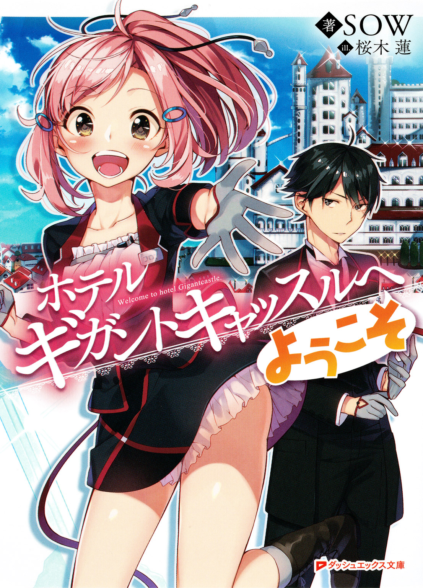
この本は縦書きでレイアウトされています。
また、ご覧になる機種により、表示の差が認められることがあります。
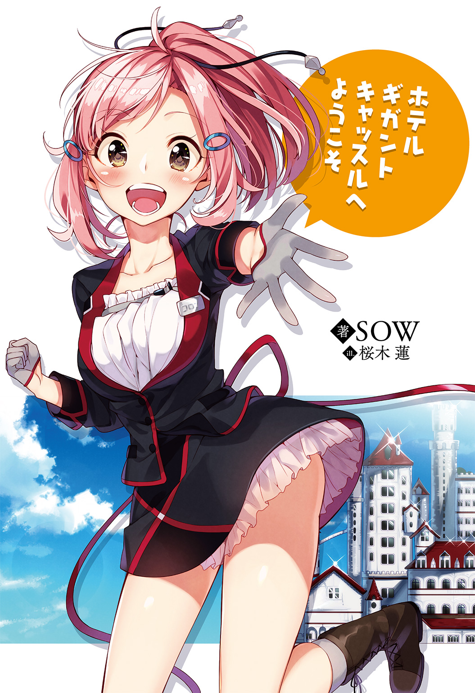
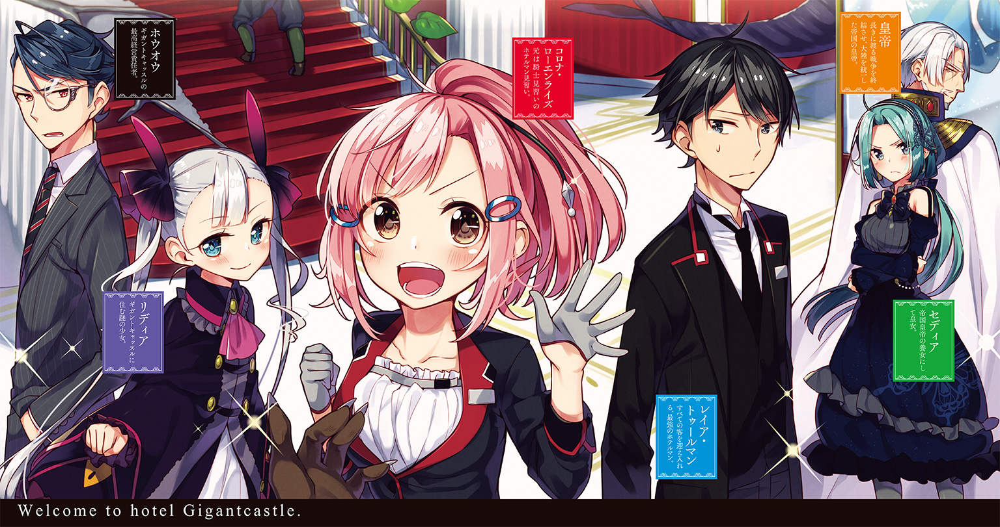
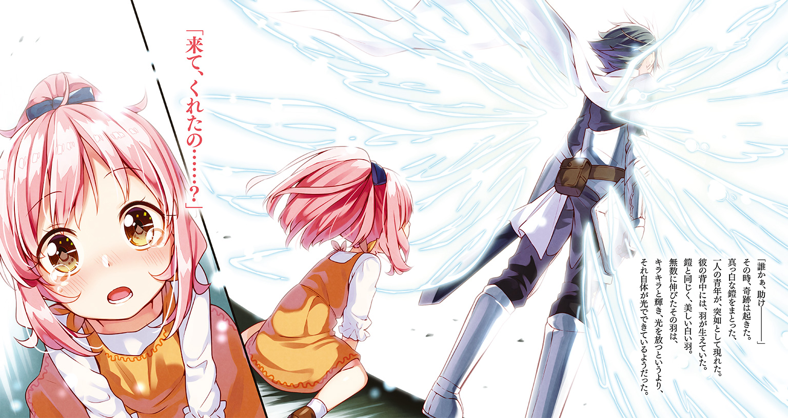
 ダッシュエックス文庫DIGITAL
ダッシュエックス文庫DIGITAL
ホテル ギガントキャッスルへようこそ
ＳＯＷ
前がたり Ten years ago
大地を埋め尽くす大軍勢があった。
帝国軍の総兵力、その九割に相当する、五十万の大軍勢。
率いるは、覇王と称される男、アンティルス。
彼らが目指すは、大陸の中央に位置する荒野にそびえる皇国の要塞、巨人砦。
今まで四度の帝国軍の侵攻を、ことごとく撥ね除けた大要塞。
そこに駐留する兵力は、およそ千。
五百倍の兵力差。
それだけ聞けば、なにも知らぬ者は、戦う前から勝敗は決していると思うだろう。
むしろ、その軍勢が迫る前に、開門し、土下座して降伏しない方がおかしいと、要塞の兵士たちの愚昧さを笑うだろう。
だが、わずかでもかの巨人砦を知る者は、決して笑わない。
否、笑えない。
地響きが起こる、天が揺れる。
常理を無視した光景が広がる。
全高二百メートルを超す大要塞が、生き物のように立ち上がる。
非常識という言葉すら追いつかない。
現実に喧嘩を売るような〝ありえなさ〟。
ただただ、目の当たりにした者たちは理解する。
巨人砦の名の由来を。
地に座る巨人のように、両手を伸ばし、両足を広げたような形をしているから、巨人砦というのではない。
巨人そのものが砦だから、巨人砦というのだ。
立ち上がり、歩を進める要塞。
攻め込んだはずの五十万の兵士が、迎え撃たれている――いや、攻め込まれている。
巻き起こる放火の雨。
何百という大砲が炎を吹く。
数万の弓兵が矢を放ち。数千の魔導兵が攻撃呪法を展開する。
だが、効かない。
あまりにも圧倒的な巨大さが、純粋な質量が、五百倍の戦力差を撥ね除ける。
千対五十万の人間の戦争ではなく、五十万匹のアリを踏み潰す光景に変えてしまう。
こうなってはもう要塞は落とせない。
たとえどれだけの攻城兵器を持ち込んでも、そもそも、動く要塞を想定して作られた兵器など存在しない以上、全ての戦術兵法が通用しない。
そして、恐るべきは、この巨人だけではないということだ。
「陛下！ 敵軍勢を確認しました!!」
伝令兵からの悲鳴のような報告を、全軍を統括する者、アンティルスは聞く。
「敵軍勢、総数......一！」
その報告は、平時であれば、「ふざけるな！」と一喝されるだろう。
いや、いかなる事態においても、再確認を命じられるであろう。
軍勢、なのに一人。
矛盾した話である。
だがしかし、ことこの場においては、その矛盾はねじ伏せられる。
一人で、万の軍勢に等しき男が、迫っていた。
「防護陣、五層まで突破！」
帝国軍は、総大将たるアンティルスを中心に、八層の防衛陣形を展開していた。
一つが数万の軍勢で構成された、まさに鉄壁の備え。
「第六陣、突破されました！」
だが、それをもってしても足りない。
いかなる鉄の壁とて撃ち貫く砲弾が、迫っている。
「第七陣、突破されました！」
すでに、兵たちの怒号――いや、絶叫が聞こえる。
巻き上がる旋風のように、自らを止めようとする兵士たちを斬り払い、薙ぎ払い、吹き飛ばし、およそ常理の外にある者が迫る。
「来たかよ.........」
アンティルスは逃げない。
まともな兵法なら――すでにまともな兵法が通じる状況ではないが――ここは総大将が退くべきところだ。
決して、自ら剣を抜き、応戦する場面ではない。
「相変わらず......変わらんな、お前は」
刀身まで黒い、暗黒の大剣を構え、その者の到来を待ち構える。
黒き鎧をまとうアンティルスの真逆。
左胸に琥珀色に輝くナーガジュエルをあしらった、真白き鎧を身にまとう、聖騎士。
巻き上がる白き翼。
それはまさに、神の神殿を守る、御使いの姿を思わせる。
「征くぞ!!」
それでも、アンティルスは挑む。
相手が神であろうが、刃を向ける覚悟はできている。
「第八陣突破、来ます！」
ついに覇王の眼前に迫る白き騎士。
剣を振りかざし、襲い来る。
黒き鎧の覇王は、正面から、その剣に応じる。
五十万の大軍が、残らず吹き飛ばされそうな、凄まじい衝撃波が巻き起こる。
刃をぶつけ合わせる、黒と白の剣士。
超常の戦いは、彼ら二人以外の一切に、入り込む余地を与えなかった。
序 章 コロナの決意
それは、今から十二年前。
わたしがまだ、四つか五つの頃のことだった。
その頃はまだ戦争中で、あちこちで戦火が上がっていた。
戦争でたちが悪いのは、正規軍から外れた、非正規武装組織による、略奪や暴行である。
わたしの住んでいた村、ウェストニアも例外ではなく、帝国に属する傭兵団がやってきた。
傭兵といえば聞こえは良いが、実態は野盗と変わらない。
ろくな抵抗力もないと知るや、彼らは村を荒らしまわる。
貧村とまでは言わないが、長い戦争で、税金や、兵役として男手を奪われたウェストニアには、大したお宝もなかったからか、彼らは村にあった食料を根こそぎ奪い去ろうとした。
「せめて、冬を越す分だけでも残してくれ」――
わたしの父は、村を代表して、傭兵団に願い出た。
結果は、処刑だった。
「帝国の天下統一のために命がけで働く我らに逆らうなど、万死に値する」
それが、傭兵たちの言い分だった。
そんなものが、名目にもなってないことは、みんなわかっていた。
逆らう者は殺す。殺されたくなければ言うとおりにしろ。
こいつのようになりたくなければ――つまりは、見せしめだ。
「やめて！ やめて！ とーちゃんを殺さないで!!」
村人たちが集められ、その真ん中で、傭兵たちは父の処刑を執行しようとした。
わたしは叫んだ。
小さな体で、幼い頭で、できることはそれだけだった。
それはなんの意味もなく、縄で縛られた父は、牛や馬のように引きずられ、刃こぼれが目立つバトルアクスで、首を切り落とされようとしていた。
「やめて！ やめて！ やめてええええ!!」
わたしの声は、人の皮を被ったケダモノどもの耳には届かない。
いや、届いている。
届いた上で彼らは嘲笑っていた。
（チクショウ！）
幼いわたしは、自分の無力を呪った。
なんの力もない。なんの名案も生み出せない、己の拙さと未熟さを呪った。
「たすけて......たすけてかみさま......」
ついにわたしは神に頼った。
古来より、無力な者が最後にすがりつくのは、神様くらいしかいない。
「ガハハハハッ！ 来るわけねーだろバカ！」
傭兵たちが、そんなわたしを見て、大笑いする。
悔しさと、悲しさと、怒りと、もうどうしていいかわからない苦しみで、心が、どす黒く、真っ黒に染まる。
「おい、さっさとやれ！」
そんなわたしをさらに絶望に叩き落とそうとでも思ったのか、傭兵たちが、父への処刑を執行しようとした。
斧が、振り上げられる。
「誰かぁ、助け――――」
わたしの最後の叫びが終わる前に、振り下ろされ―――なかった。
その時、奇跡は起きた。
例えるなら、突如降臨した、真白き御柱。
真っ白な鎧をまとった、一人の青年が、突如として現れた。
いつの間に、どのように、全くわからない。
わたしだけではない。
そこにいた他の村人も、傭兵たちも、青年を前に、茫然としている。
しかし、青年の奇異さはそれだけにとどまらない。
彼の背中には、羽が生えていた。
鎧と同じく、美しい白い羽。
無数に伸びたその羽は、キラキラと輝き、光を放つというより、それ自体が光でできているようだった。
「呼んだか？」
青年が振り返り、わたしに言った。
最初、質問の意味がわからなかった。
だが、青年の腕に、やはりいつの間にか、縄で縛られ拘束されていたはずの父の体があったことで、理解した。
「来て、くれたの......？」
その青年は、わたしの声を聞き届けてくれたのだ。
小さな少女が、涙鼻水混じりで絞り出した、「助けて」という言葉に、応じてくれたのだ。
「手前ェ、まさか......――か!?」
ようやく我に返った傭兵たちが、怒声を上げ、手に持った武器を構え襲いかかる。
目の前の青年のことを知っているのか、彼の名前を叫んだが、その時のわたしにはよく聞こえなかった。
なにせ、目の前の青年に、わたしの心は完全に奪われていたからだ。
「よくがんばったな。あとは任せておけ」
青年はそう言うと、父をわたしのそばに置き、襲い来る傭兵たちに向き直る。
「さて―――」
五十人は超える、己に向かって殺意をもって襲いかかろうとしている者たちを前に、青年は高らかに宣言した。
「今さら後悔しても遅いぞ？」
「で、それからどうしたんだい？」
時は戻って現在――帝都国民公園の噴水の前のベンチで、男が尋ねた。
「いやもうその後はものすごいもんでしたよ！ ちぎっては投げ、ちぎっては投げ！」
興奮気味に語る少女。名は、コロナ・ローエンライズという。
「傭兵ども......っていうか、盗賊ですね。そいつらを全部ぶちのめして、颯爽と去っていって......あとで聞いたら、皇国の騎士さんだったらしいんですよ」
「それで、お嬢さんは騎士になったのかい？」
「はい！ と言っても、見習いですけど......」
男に言われ、元気よく答えた後、思い出したようにコロナは暗い顔になった。
「それからずっと騎士に憧れて......十三の歳に家を飛び出して、騎士修行を始めたんですよ」
「庶民層からでは、騎士見習いになるのも大変だったろうねぇ」
男の年齢は、コロナの父親と同じか、少し下くらい。
目元に小さなシワを寄せ、彼女の今までの苦労を察するように言う。
「はい......騎士格ないですから。最初は街の警備隊から始めて......最初の一年は、城壁の補修や街の清掃、上下水道のお手入れとか、そんなのばっかでした」
騎士となる方法は二つ。
騎士の家に生まれるか、兵士として働きを認められ、国家公認の「騎士格」を手に入れるしかない。
コロナの実家は由緒正しき農夫の家系。
代々続く騎士の家でない以上、下積みを積んで、認められるしかないのだ。
「まともな警備任務に就くようになったのが二年前、それからも下積みを重ねに重ね、やっと先月、騎士見習いとして認められたんです」
騎士見習いとは......そのまま、騎士の見習いである。
ここからさらに、本職の騎士になれるのは十人に一人というところなのだが、それでも、コロナの歳はまだ十七。
わずか四年で認められたのは、純粋に努力の賜物であった。
「そんで......認められた翌日、リストラを喰らいました......」
「ああ、大軍縮令が発布された前日だったのかい」
さらに一際重い顔になるコロナを見て、男は「あいたたた」とでも言いたげに、額を押さえる。
「すごいショックなことが起こると、ホントに目の前真っ暗になるんですねぇ～......」
五百年にわたる戦乱は終結し、天下は統一された。
戦争が終われば、軍隊は途端に無駄飯食いになる。
とはいえ、終戦から暫くの間は、各地で起こった反乱や、治安維持活動、戦災復興などで、それなりの人数は必要ではあったが、それも一割、三割、五割と、段階的に各地の兵団の人数は削減されていった。
そしてついに、帝都直営の騎士団にすら、人員整理の波が訪れたのだ。
「皇帝陛下の聖域なき改革っぷりにも、困ったもんです」
四百年の伝統を誇る騎士団は、独自の権限、権益を有していた。
天下統一後の新体制移行のため、そういった既存勢力への改革断行は不可欠。
皇帝の判断を、コロナは否定する気はないが、それにしたってもうちょっとタイミングというものがあるだろうと思わずにいられなかった。
「リストラされて、公舎も追い出され、再就職の当てもなく......」
削減されたのは、騎士団の人員だけでなく、帝都警備の兵団全てにおいてであった。
元の一兵士に戻ることもできず、路頭に迷ったコロナは、わずかな蓄えも底をつき、ついに公園で野宿、食費もなくなり、三日間水だけでしのいでいた。
「施し、感謝します......ありがとうございますです......」
「いやいや、アレくらい別にいいんだよ」
三十分ほど前、空腹のあまり、公園に生えた雑草を口に入れかけていた彼女を哀れみ、男は屋台のホットドッグをおごってくれたのだ。
コロナの口元には、わんぱくな食いっぷりをかましたせいか、ケチャップがついている。
「田舎に帰るという選択肢は、ないのかね？」
「それは......」
男の提案は、至極もっともなものだった。
故郷に戻れば、父や母は、四年分のお説教をするだろうが、拒むことはないだろう。
善良な農民として生き、穏やかで安定した生活を得られるだろう。
「それを選んだら、全部......終わっちゃう気がするんです......」
ぐっと、コロナは両手を握りしめる。
夢を叶えようと、都会にやってきた少女。
人並み以上の努力はしてきた。十代の半分を、それに費やしてきた。
信じれば必ず夢は叶うなどと、甘ったるいことは言わない。
むしろ、夢を現実にしようとする者であれば、それが叶わなかった時の絶望も、覚悟してしかるべきである。
「でも、これは違うじゃないですか......わたし......なにも悪くないのに......」
自分の失敗で、自分に才能がなくて、自分の努力が足りなくて......原因が〝自分〟であったならば、ここまで迷いはしなかった。
しかし、そうではない。
自分の到底力の及ばぬところで決められたことで、自分の夢がつぶされたなどと、どうしても、認めることができなかったのだ。
「わたしは、あの時わたしを助けてくれた、あの人みたいになりたいって、思っただけなのに......」
いつの間にか、コロナの目に涙が浮かんでいた。
「ふむ......」
そんな彼女の様子をじっと見ていた男は、しばし考えこむと、小さな声でつぶやく。
「アイツも、罪作りなやつだ」
「え？」
なにを言っているのかコロナにはわからなかったが、それを説明することなく、男は立ち上がる。
「ちょっとここで待っていたまえ。すぐに戻る」
そう言うと、小走りで公園の外に行ってしまった。
「すまんね、文房具屋が見当たらなくて」
十分ほど経って、戻ってきた男は一通の封筒を手にしていた。
「はい、これを持ってグランクルスに行ってみなさい」
「へ？」
きょとんとした顔のコロナに、男は続ける。
「名にし負う巨人砦がそこにある。そこに書いてある男に、この手紙を渡しなさい。少なくとも、いいように計らってくれるはずだ」
「え？ え？ え？」
コロナも、巨人砦の存在は知っている。
最強の戦士たちが集う、無敵の要塞。
「これって、もしかして......」
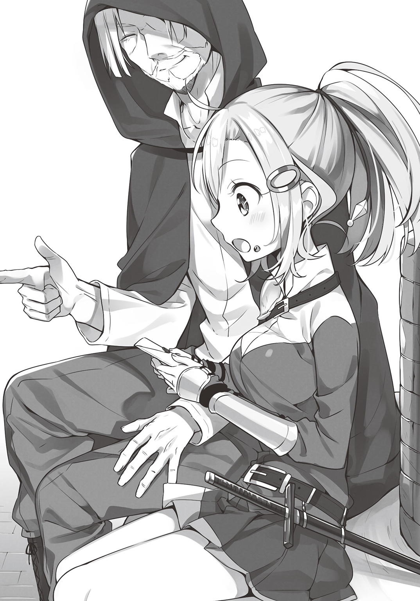
コロナの手にある封筒には、「紹介状」と書かれている。
そこでなら、まだ騎士としての道を歩むことができるかもしれない。
あの日出会った、憧れの騎士へと繫がる道を辿れるかもしれない。
「あの......おじさんは――あれ？」
まだ名前も聞いていなかった男の姿は、そこにはなかった。
まるで、翼でも生えて飛び去ったように、影も形も、なくなっていた。
「ええっと......」
啞然としつつ、コロナは手の中の封筒を見つめる。
このまま、帝都に居続けても、ジリ貧なのは変わらない。
ならば、一念発起して、新天地を目指すのはアリかもしれない。
「うん、行ってみよう！」
男の紹介状が偽物などと微塵も疑いもせず、ましてや、その紹介状の中身も確認しようともせず、少女は決意する。
コロナはよく言えばまっすぐで、人を疑うことを知らない少女だった。
そして悪く言えば、やや考えの足りない少女でもあった。
そんなだから、彼女は新天地で、予想だにしていなかった運命に、巻き込まれる。
それは、大陸を二分する大国家、帝国と皇国が、壮絶な激戦を繰り広げた、戦国乱世が終結して、十年後のことであった。
第一章 宿泊業法は守りましょう
ホテル・ギガントキャッスルへようこそ！
大陸の中心、バルトラス運河と、フェリオン街道が交差する交通の要衝グランクルス。
この街に来て、当ホテルを目にしたことがない方はおられないはず！
全長二百メートル、六十階を越す超巨大ホテル！
最上階からの眺めは、大陸一と言っても過言ではないでしょう！
無論、我がホテルがお迎えするは、人間種族だけではございません。
エルフ、ハーフリング、ドワーフなどの亜人種族の皆様。
ハーピー、ウェリガルマンダといった空翼族の皆様。
マーマンやマーメイドといった水棲種族の皆様。
さらには、リザードマンやドラゴンなどの竜鱗種の皆様まで！
当ホテルは、いかなるお客様のご来訪も拒みません！
旅を住処とする皆様の、帰るべき家となるよう、全スタッフ、心より、お待ち申しております！
ご予約は、今すぐ！
グランクルス――そこは東西交易の中心地。
大運河と大街道が交わる、通称「十字路都市」――全ての人と金と物はここに集まり、そして大陸の四方に散っていくと言われている。
そのような交通の要衝であるのだから、当然、街は栄える。
「うひゃあああああああ.........」
交易船の下働きをしながら船旅一週間、港に降りて最初に、コロナが発したのは、その一言であった。
デカイ、とにかくデカイ。
船を降りてすぐに、眼前に広がる幾つもの巨大な塔。
林立するそれらの間に、これまた巨大な建物が立ち並んでいる。
大陸中の名のある商店の殆どが、グランクルスに支店、もしくは本店を構えている。
商店だけではない。大銀行などの金融業に、流通を支える運送業、集まった品に手を加える加工業や、それらを組み上げる製造業、そこで働く人々の胃袋を満たす飲食業に、遊興の場を与える娯楽産業。そして、そうやって出来上がった都市そのものが一つの商業的価値を生み、最後に生まれる観光業。
世界のすべてがここに集まっている、すさまじい「奔流」に、今にも飲み込まれそうだった。
「え、ええっと......巨人砦って、どこだっけ......」
このグランクルスにくれば、なんとかなる――あの日、帝都で会ったおじさんにもらった、紹介状一通を頼りにここまで来たが、果たしてそれが本当に効果があるのか？
この街が、自分を受け入れてくれるのか、ひたすら不安に溺れながら、コロナは一歩を踏み出した。
「ふえええ......すごい人......！」
港も人は多かったが、街の中心部に移動するに従って、人がどんどん増えていく。
今まで彼女が住んでいた帝都も、大陸の中心地の一つで、相応の人口を誇っていたが、それとは、また別種の賑わいがあった。
（今日って、お祭りでもやってるのかなぁ？）
思わず、そんな感想が頭に浮かぶほど、大通りは人に溢れ、さらにそれらが右や左や後ろや前、あちこちに行き交っている。
帝都の人波は、どちらかと言えば整然とし、静かな、落ち着いたものだったが、グランクルスの賑わいは、激流のようにとらえどころがない。
「邪魔だよ」
「おい、ぼさっと突っ立ってんじゃねぇよ」
「..................」
呆然としているうちに、右と左と後ろから通行人にぶつかり、あちらこちらに流されてしまう。
「あわわわわわ～」
ふらふらと目を回しているうちに、さらに今度は、前から来た人にぶつかる。
「あ、すいま―――えええ!?」
なにか柔らかいものに当たったと思ったら、それは相手のお腹だった。
随分と大柄な男だなぁと顔を上げると、そこにいたのは、緑色の肌をした、オークだった。
（お、オーク!? なんでこんな街中に!?）
オークといえば、森のなかに住む亜人種族の一つ。
深緑の肌をした、ブタを思わせる容姿。でっぷりと肥え太った体は、人類種族の倍近くあり、性悪で野卑で乱暴というイメージが一般的である。
「ちちちちちちちちちちちち!!」
近づくな！ 寄らば斬る！ と言いたかったのだが、いきなりの登場にパニックを起こし、うまく口が回らない。
「やややややややややややや!!」
やめろ！ 触れるな！ と言いたかったのだが、まだうまく口が回らない。
なにせ、オークといえばもう一つ有名な特徴がある。
曰く、オーク族は性欲が旺盛であり、女と見れば見境なく犯し、その対象は他種族にも及ぶというものだ。
その中でも、特に挙げられるのが、「女騎士」である。
コロナは実際にその現場を見たことや、被害に遭ったという人間は見たことがない。
しかし、かつて衛兵時代に、男たちが好んで手に取っていた読み物に、そういうものが載っているのは知っていた。
（お、犯される!? 穴という穴になんか入れられて、「いやぁ」「らめぇ」「あひぃ」とか言わされてＷピースやらされる!?）
女としての生理的嫌悪感と防衛本能が働き、ガタガタと震えてしまう。
「おやおや、これは失礼、可愛らしい騎士さん」
「へ？」
ところが、目の前のオークはにこやかに微笑むと、丁寧に帽子を脱いで一礼した。
そう、帽子をかぶっていたのだ。目の前のオークは。
今さら気づくが、オークが着ているのは、ボロボロの獣の服などではない。
いや、ある程度そういった意匠は取り入れているが、スリーピースのベストに、しっかり折り目のついたパンツ、清潔なシャツに、洒落たカフリンクスまで付けている。
「え？ あれ？ あの......オークの人ですよね？」
「はぁ、オークですが......どうしました？」
「あれぇ......？」
きょとんとして、マヌケな質問をするコロナだったが、オークは丁寧に対応してくれる。
「あっはっはっ、なるほど、そういうことですか。これは参った」
コロナの心中を察したオークは、おかしそうに笑った。
数分後――
「騎士さんは、この街は初めてですかな？ それでは驚かれるのも無理はない」
コロナとオークは、大通りに面した小ジャレたオープンカフェで席を同じくした。
「えっと......ハンプティさん......ですか？」
オークは自分の名をハンプティと名乗った。
コロナがイメージしていた、粗野で野蛮とは程遠い、むしろ紳士的この上ない態度である。
ちなみに、テーブルの上に載っているベリーのパフェは、ハンプティ氏が注文してくれたものだ。
「大陸解放令が発布されたのは、ご存知でしょう？」
「はい、えっと、名前だけは......」
大陸解放令とは、天下を統一した皇帝アンティルスが最初に宣言した、「全知的種族平等化政策」である。
大陸に住む知的生命体は、人類種以外にも、亜人種・獣人種・海人種・竜鱗種など、多岐にわたる。
だが、圧倒的多数の人類種が、数を頼りに大陸の主導権を握り、他種族への偏見や排斥などが行なわれてきた。
皇帝は、それらを禁じ、己が権威のもとに、全種族の平等を宣言したのだ。
「お嬢さんは、どちらから？」
「て、帝都です」
「ああ、あそこは基本、人類種の領土でしたからね。あまり我々のような者の姿は見なかったでしょう？」
「はい......」
コロナが今まで見たことのある他種族は、たまに交易で訪れるハーフウッド族やドワーフ族がせいぜい。あまり人間と容姿に差のない者たちばかりである。
「いろんな人たちがいるんですね」
オープンカフェのテーブルから、街の人混みを改めて見る。
碧い鱗のリザードマンに、灰色の毛並みのウォーウルフ。
特殊な陸上歩行器を使って歩くマーマンに、陽気に歌うケットシー、さらにハンプティ氏より巨体のオーガまで歩いている。
「帝都は、あくまで人間の都です。ですがグランクルスは、全ての知的種の都......〝人種のるつぼ〟ならぬ、〝種族のるつぼ〟といったところですな」
「すごいや.........」
ド田舎のウェストニアから、帝都にやってきた時も驚いた。
舗装された石畳の道に、ガス灯に、行き交う無数の馬車、何軒もの商店と、カルチャーショックを覚えたものである。
だがここは次元が違う。
まるで、異世界に迷い込んだような気分であった。
「ここに来られた人間種族の方は、たいてい驚かれます。とくに、髪や肌の色であれこれ言われたことのある方などはね」
言いながら、ハンプティ氏は笑う。
ウロコやエラのある者たちに比べれば、その程度の差、ないに等しい。
「あ......あの......すいませんでした!!」
はっ、と思い出したように、コロナは立ち上がり、深く頭を下げる。
「どうなされました？」
「わたし......すごく失礼なこと......すいません！」
きょとんとするハンプティに、コロナは心から悔やむ顔で謝った。
この街は、異種族が共存する都市。
そこで、初対面の相手が自分を襲おうとしていると思ったなど、失礼極まりない話である。
「あっはっはっ、お気になさらないでください」
しかし、それを理解した上で、オークのハンプティ氏は笑顔で応える。
「悲しい話ですが、何百年も昔には、オークと人間種族の仲は、決して良好とは言えない時期もありました」
領土か、資源か、その両方か、人類種は長らく他の種族の多くと険悪な歴史を積み重ねていた。
「我々オーク族の中にも、人類種にいい感情を持っていない者は少なくありません......ですが、時代は流れました。このグランクルスのような街がもっと増えれば、溝は埋まっていきます」
誤解を咎めるより、それを解消するほうに動く。
それがおそらく、ハンプティ氏の信念なのだろう。
（なんで立派なオークさんなんだろう......）
今まで耳にしたオーク族の偏見に満ちた評判より、目の前のハンプティ氏から受けた印象の方が、はるかに彼女の心に大きなインパクトを与えた。
「それで、お嬢さんは、グランクルスに何用で？ 観光でしたら、良い場所をご紹介いたしますよ。あ、申し遅れました。私、こういうものなんです」
そう言ってハンプティ氏が渡したのは名刺だった。
帝都でも一部の商人が使っているのを知っていたが、渡されたのは初めてだった。
「グランクルス市観光局係長......!? お役人さんだったんですか？」
「はい♪ グランクルスにいらっしゃった方たちに、この街の良さを知っていただくのが、私の仕事です」
どうやら、グランクルスの種族融和政策は行政にまで浸透しているようであった。
「このカフェのベリーパフェはおすすめですよ。若いお嬢さんたちには特に喜ばれる。あ、そうだそうだ、ザナルンド聖堂には行かれましたかな？ あそこの彫刻群は一見の価値がありますよ？ よろしければご案内いたしましょう」
にこやかに申し出てくれるハンプティ氏だったが、コロナの目的は、物見遊山ではない。
「いえ、あの、そうじゃなくてですね......」
できればもっとあちこち見て回りたいが、残念ながらそんな余裕はない。
なにせ、この街に来るまでに、残りのお金の殆どを使いきった。
今日中に巨人砦に行って、採用してもらわなければ、今夜の宿代もないのだ。
「わたし、巨人砦に用があって来たんです。場所、ご存知ですか？」
「ああ、あそこですか、それならば、どこからでも見えますよ」
ハンプティ氏が指差す先には、巨大な人型をした構造物がそびえ立っていた。
「あれが......」
あまりにも大きすぎて、目に入っていても気づかない。それくらいの大きさである。
「皆さん同様の反応をされますなぁ。なにせあの図体ですから。いっそ、街の外にある、アルハト山の中腹にある展望台からの方が、全景を見渡せますよ？」
「気づかなかったー」
十字の街グランクルス。この都市は、東西南北の大交易都市であることと、街自体が十字の形をしていることからそう呼ばれている。
巨人砦は、その十字の中心。
大陸の中央の街の中心、まさに世界のど真ん中にある。
「ありがとうございました！ わたし、急ぎますので、失礼致します！」
元気な声で、しっかりと感謝の思いを込めてお辞儀をすると、コロナは砦に向かって走り出す。
「あ、お嬢さん？ 念のために伺っておきますが――あらら、行ってしまわれた」
ハンプティ氏の声は、走り去る少女の背中に届かなかった。
「巨人砦などと、懐かしい呼び方をされるので、もしかしてとは思いますが......まぁ、着けばわかることですな」
念のために、彼女に伝えておこうと思ったことがあったのだが、放っといても嫌でもわかることであると、ハンプティ氏は考え、あえて追いかけはしなかった。
愛妻の作る料理がうますぎて、でっぷりと突き出たお腹では、若者の後を追うのは一苦労なのだ。
親切なオークさんに教えてもらい、ようやっとコロナは〝巨人砦〟にたどり着く。
巨人砦――大陸に住まい、武を志す者で、知らぬ者はない、ある意味聖地と言ってもいい。
かつての統一戦争において、帝国が五十万の兵を動員しても落とせなかった、難攻不落の大要塞。
守りし兵士は皆、一騎当千の豪傑ばかり。
頂点に立つ『四天王』とあらば、万夫不当、抜山蓋世、星火燎原の英雄の中の英雄。
その戦列に加われるのは、見習いとはいえ騎士たるコロナにとって、これほどの名誉はない！
――と、思ったところで、ふと疑問が湧いた。
「あれ......？ こんな街で......要塞って必要あるのかな......？」
ここに来るまで、疑問に思わなかったわけではない。
しかし、グランクルスにたどり着き、異種族が交差する大商業都市の姿を見て、あまりにも大要塞がそぐわない場所に、あらためて疑問が湧いたのだ。
「えっと.........え............？」
そして、そんな彼女に、さらなる困惑をもたらすものが、そこにあった。
『ようこそ！ ギガントキャッスルへ！』
目の前に掲げられた巨大な看板。
魔力による発光灯で飾られているのか、昼なお眩しく光り輝いている。
「え、待って？ え、えええ!?」
教えられた場所は、間違いなくここである。
そんなわけはない。
なにかの間違いだ。
ちょっとした勘違いとケアレスミスが、複数重なったにすぎないと、必死で「いいほう」に考えようとするが、それでも追いつかない。
なにせ、目の前には、全長二百メートルを越す、巨人を思わせる巨大な建築物が、「ホテル」としてそびえ立っているのだから――
困惑しつつも、コロナは巨人砦――いや、ギガントキャッスル内に入る。
豪華な正面玄関を通り、教育の行き届いたボーイたちの丁寧なお辞儀に、「あ、ども、えっと」とうろたえつつも、ホテルの入口にして顔、メインロビーに入る。
「ふえええええ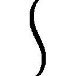」
コロナは一応帝都で数年過ごしていたが、見習い衛兵の安月給では、貴族や王族が泊まるような高級ホテルを利用したことはおろか、訪れたことさえない。
ある意味、人生で初めて触れるその空気に、呑まれまくっていた。
それくらい。豪奢なロビーであった。
十階か、二十階か、とにかくそれくらいの階数をぶち抜いての吹き抜け。
その天井には、巨大なシャンデリアが飾られ、キラキラとした輝きがロビーを照らしている。
壁や柱には、豪奢でありながら華美すぎない装飾が施され、一つ一つ見て回るだけで丸一日楽しめそうなほど。
さらに壁面には巨大な水槽が埋めこまれ、美しい魚に――
「ま、マーメイド!? 初めて見た......」
きらびやかなピンク色のウロコをもった美しいマーメイドが、水中を踊るように泳いでいる。
さらには、ロビー中央には、不思議なモニュメントがあった。
巨大な岩に突き刺さった、一本の剣。
それがなんの意図を持って作られた芸術なのかはわからないが、不思議と、胸に迫る迫力を持つ。
「いらっしゃいませ、お嬢様」
「はひっ!?」
お嬢様――一応コロナも自分を女の子だと認識しているが、粗野な衛兵暮らしを続けていたため、そんな呼ばれ方をされて驚きに変な声を出してしまった。
「い、いつの間に？」
ロビーの光景に呆然としていたからでもあるのだろうが、その男が近づいたことに、まったく気づけなかった。
「これは失礼いたしました。わたくし、気配を消すのが習慣づいておりまして」
「は、はぁ......？」
現れたのは、このホテルの従業員なのだろう。
年齢はコロナより五つか六つ上くらい。まだ青年と言って通る年頃である。
タキシードを思わせる、黒と白を基調とした服装。
シックだが、みすぼらしさは感じない。
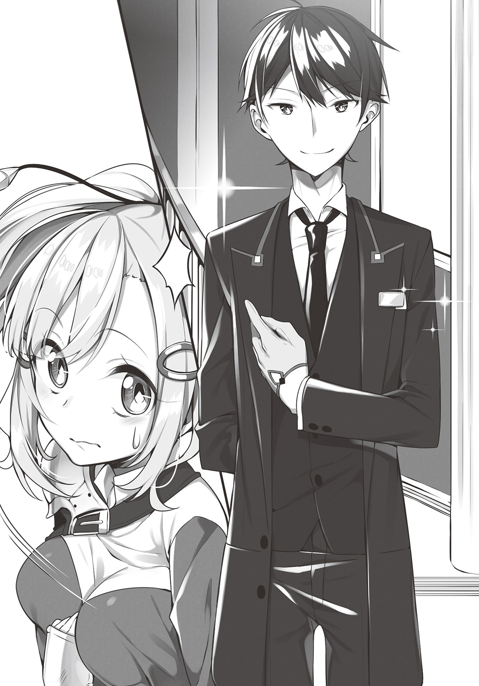
むしろ、無駄をそぎ落とした、機能美すら感じさせる佇まいである。
「あ、あの......わたし、その、お客さんじゃなくて......」
しどろもどろに、コロナは言った。
ホテルの宿泊費の相場はわからないが、こんな大きな、かつ豪華なホテルである。
ヘタすれば一泊で彼女の一月分の生活費を持っていかれかねない。
自分は泊まりにきたのではない。
ここにあるはずだった、軍事要塞に仕官するために来たのだ。
「だから、その、えっと......」
丁寧に応対してくれて申し訳ないが、彼が目的とする宿泊客ではないのだ。
「お泊まりの方ではない？」
「はい......すいません......」
用がないならとっとと帰れと言われるのかと、コロナは身構えるが、青年は柔和な笑顔を崩さない。
「そうですか。当ホテルにいらっしゃるのは、初めてで？」
笑顔のまま、青年は優しげに尋ね返す。
「はい......えっと、グランクルス自体、来たのは初めてで......」
「それはそれは、初めてだと、いろいろと戸惑うでしょう。どうぞこちらに」
客ではないと言ったはずなのに、青年の態度は変わらない。
それどころか、ロビーの一角の、ソファーを勧めてくる。
「え～っと......あの......わたし......」
「お疲れでしょう。ブラッディ・ローズティーの新茶が入ったのです。どうぞお召し上がりください」
いつの間にか、青年の手にはトレイに載ったティーセットがあった。
「少し蒸らしてからが、香りが立っていいんですよ」
「そ、そうなんですか......？」
コロナが戸惑っている間に、カチャリという音一つ立てず、テーブルにティーカップを置くと、なめらかな動きで、まさにバラを思わせる鮮烈な紅の茶を淹れる。
「ご安心ください。こちらはサービスです」
払うお金など持っていないコロナの、不安そうな顔を察したのか、青年はにこやかな顔で告げた。
「あの......わたし......お客さんじゃないし......」
「ええ、おっしゃっておられましたね」
「っていうか......お金、ほとんどないです」
「それはそれは」
コロナは、この街に来るまでに、所持金の殆どを使いきった。
彼女の持っている財産といえば、あとは腰に提げた剣くらいだが、それでも二束三文だろう。
ともあれ、コロナを接客したところで、金は落とさない。
落とすものがないのだ。
それなのに、青年の態度は変わらない。
「あなたは、お友だちがいますか？」
不思議そうにしているコロナに、青年が問いかける。
「え？ あ、はい。いますけど」
故郷のウェストニア、さらに帝都にも、友人知人の類はいる。
「私にとっては、この街に、このホテルにおとずれてくださった方は、どんな方でも友人だと思っています。友だちが訪ねてきたら......お茶の一杯もお出しするものでしょう？」
言うと、青年は、楽しげに笑う。
「なので、遠慮なく召し上がってください。冷めないうちに、どうぞ」
「あ、ありがとうございます！ じゃ、遠慮なく......」
青年に促され、コロナはティーカップに口をつける。
「うわぁ......美味しい......」
砂糖もミルクも入れていない。
なのに、鼻に突き抜ける香りと、紅茶本来の甘さが、じんわりと体に染みこむ。
「紅茶ってこんなに美味しいんだ......」
今までコロナが飲んだものなど、これに比べれば何だったのかというほどの、素晴らしい味わいだった。
「この街には、大陸中の様々な品が集まりますからね。その紅茶も、南の方の品でしてね。私もお気に入りです」
丁寧に、礼儀正しく、だが先ほども言ったように、友人をもてなすような親しみを込めて、青年は言う。
「.....................」
紅茶を口に入れ、心が落ち着いたところで、あらためてロビーを見回す。
豪華であり、豪奢である。
だが華美に走らず、その場にある人たちは皆、くつろぎ、落ち着いた雰囲気であった。
「もしお金ができたら、泊まってみたいな、こんなホテル......」
思わず、コロナは正直な感想を口にする。
ロビーだけでこんな穏やかな気持ちにさせてくれるのならば、一泊するだけで、体中の重りが全部なくなってしまうのではないかと思ったのだ。
「それです」
そんなコロナの感想を耳にして、青年は嬉しそうに笑う。
「いらっしゃった方に、その思いを抱いていただくのが、私の歓びなんですよ」
金を払うつもりでやってきた者だけを歓待するのではなく、たまたま入りこんだ者にすら、「今度はお客として来たい」と思わせる。
それこそが、青年のサービスなのであろう。
「ありがとうございます......なんだか、その......いい経験をしました」
「それはなにより――ところで、お嬢様？」
「あの、そのお嬢様っていうのは......」
なんとなく背中がくすぐったくなる呼ばれ方がどうしても慣れない。
「わたし、コロナっていうんですが......その～......ここって、巨人砦......じゃないんですか？」
それが一番の問題であることを思い出し、青年に問う。
「もしかして、おじょ――いえ、コロナ様は、巨人砦に用があって来られたのですか？」
「はい」
「それは......困りましたねぇ......」
青年の柔和な表情が崩れ、困惑したように、眉間にシワが寄る。
「なにか、あるんですか？」
「ええ、実はですね――」
問いかけるコロナに、青年が答えようとした時、それを阻むものが現れる。
阻むもの......〝者〟ではない。〝物〟である。
「え......？」
いきなり、視界に影がさす。
目の前に、巨大な柱が吹っ飛んできた。
「のえええええ!?」
慌てて避けるのが間に合ったが、さっきまで彼女が座っていたソファーは、飛んできた柱に押しつぶされ、テーブルがその上に置かれたティーカップごと粉々になる。
「な、なに？ なに？ 何なの!?」
飛んできたのは、ロビーに配置されている柱の一つである。
職人が丁寧に彫り上げたであろう装飾も、無残に亀裂が入っていた。
「なんで柱が......飛んできたの......？」
その答えは、すぐに、叫び声をもって聞こえてきた。
「グウオオオオオオオオッ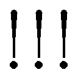」
ロビーの真ん中で、全身重甲冑をまとった戦士が暴れている。
なんとも禍々しい姿であった。
まるで魔神を模したかのような棘だらけの鎧に、死神を描いたドクロの盾。
また持っている剣といったら、生きとし生ける者全てをこの世から排除せんとするかのような、禍々しい真っ黒な大剣であった。
「一体......あれはなんなのよ！」
ここはホテルのロビーである。
本来なら、戦闘が起こるような場所ではない。
しかし、現実に目の前で、それは暴れている。
「グオオオオオッ!! グルルルウウオオオオオッ」
怪物のような叫び声を上げて、戦士は――いや、狂戦士は、ロビーの壁を斬り裂き、床を砕き、花を活けた花瓶を割る。
「なんだなんだ――!?」
「助けてくれー！」
「逃げろー！」
ロビーにいた他の客たちも、パニックとなって我先にと逃げ出している。
「ひょえ」
だが、背丈も小さければ、脚も短いコロポックルたちが、逃げ遅れ、狂戦士の視界に入ってしまった。
「オオオオオオオッ」
彼らを見つけ、襲いかかる狂戦士。
「いけない!!」
コロナは素早く腰の剣を抜くと、狂戦士とコロポックルの間を遮るように立った。
彼女に無理して戦う義理はない。
しかし、コロナは見習いだが、騎士であった。
彼女の愛読する「騎士道百箇条」にも書かれている。
「騎士たるもの、弱きを助け強きを倒せ」と――
「わたしが相手よ！ かかってきなさ―――ごへっ!?」
しかし、コロナは一瞬で弾き飛ばされる。
心がけは立派であった。それだけならば一人前の騎士である。
しかし、腕の方が追いついていなかった。
「け、剣が、わたしの剣がぁ」
最後の財産であった二束三文のプロートソードが、ポッキリへし折れていた。
「グルルルルル......」
狂戦士の目が、コロナを捉えていた。
正しくは、狂戦士の顔は、兜と一体化したバイザーに覆われているため、顔は見えないが、その奥に光る瞳は視認できた。
（死ぬ......これ......死ぬ......）
幸い、コロポックルたちは逃げ切ったようだが、今度はコロナが逃げられない。
大剣が振り下ろされる。
改めて近くで見て、なんとも禍々しい刃であろうか。
切れ味鋭いというより、刃先をあえてノコギリ状にすることで、切断面を増やし、傷口を乱すことでより痛みを増すような作りである。
こんなもので斬られたら、さぞかしもがき苦しんで死ぬことになるであろう。
「た、たしゅ.........」
助けて、と叫びそうになった。
聞いてくれる相手ではないのに。
目の前に迫る恐怖に、コロナの脳みそは、これ以上は耐え切れないと判断したのか、彼女の精神のスイッチを切った。
つまり、コロナは気絶した。
だが、意識が遠ざかる直前、聞こえたような気がした。
見たような、気がした。
「困りますね」
そう言って、誰かが、自分の目の前に現れたのを。
小一時間後――
「むにゃ......？」
目が覚めた時、コロナは、ベッドで横になっていた。
「なぁ～んだ......夢かぁ......」
考えてみればおかしな話である。
超巨大軍事要塞に仕官に行ったら、そこは豪華ホテルで、なぜかロビーで狂戦士が大暴れしていたのである。
現実味がないにも程がある話。
夢だと思うのが一番、現実味がある。
「でも......あの男の人は......ちょっとカッコ良かったかな......」
むにゃむにゃと、シーツを体に巻き付けまどろみながら、そんなことをつぶやく。
地味めな青年で、きらびやかな美形というわけではないが、どこか、懐かしさを感じる雰囲気を持っていた。
「名前聞いておけばよかったかなぁ～......むにゃむにゃ」
もう一眠りしようと、コロナは目を閉じ、体を丸める。
「申し遅れました。レイアと申します」
「あ、そうなんですか～......」
人間の最大の快楽の一つ、「二度寝」に陥ろうとした瞬間、青年の声が聞こえた。
「むっ!?」
そこで今さら、コロナは気づき、目を開き、体を起こす。
「ちょ!? え!? ここ!!」
「落ち着いてくださいコロナさん、大丈夫です」
横を見ると、あの青年――レイアと名乗ったあのホテルマンの青年が椅子に座っていた。
「大丈夫、大丈夫。落ち着いてください。どこか痛いところは？」
「え......と......」
「視界は、はっきりしていますか？ 物が二つに見えたりは？ 音はちゃんと聞こえていますか？ 耳鳴りが起きたりしていませんね？」
淡々と、一つ一つ、確認するようにレイアは問いかける。
「痛いところは......ありません......えと......ものはちゃんと見えます。音も聞こえます」
「生年月日は、答えられますか？」
「え、ええっと、月王年の半の年の五月です」
「五月の何日？」
「五日です」
「はい、では息を吸って」
「すぅ」
「吐いて」
「ぷはぁ」
「落ち着かれましたか？」
「は.........はい......」
自分の置かれている状況を理解できず混乱するコロナを、レイアは五感を一つ一つ自分で確認させ、かつ数字の記憶を思いださせることで、感情ではなく理性を働かせるように誘導した。
「ここは......ホテルの部屋ですか......？」
夢と現実がごっちゃになってる状態では、誰かに教えられてもなかなか飲み込めないが、冷静になれば、ここが客室で、自分はそのベッドの上にいるとわかる。
「ええ、あなたは気絶してしまいまして。宿泊中のお客様のご厚意で、ベッドをお借りしたんです」
「そうだったんですか～」
改めて、記憶をなぞり返す。
あの謎の狂戦士が襲いかかってきて、自分は情けなくも気絶してしまった。
だが、この様子ではどうやら、問題なく対処できたのであろう。
「なんだったんでしょう、あのバーサーカーみたいな人。よくあるんですか？」
バーサーカーとは、統一戦争期に、薬物や呪術の力を借りて、理性を失う代わりに強大な力を得た者たちである。
その力は凄まじいが、一切防御を考慮しない獣のような闘法故に、死者数も多かったらしい。
「よく、はありませんね」
「まったく迷惑な話ですねぇ」
「すいませんでした」
「まぁ御本人も反省してらっしゃるようですから、許して差し上げてください」
「そこまで言うのなら......あれ？」
違和感を覚えた。
声が、一つ、多い。
「えっと～......」
ベッドの右側には、レイアが座っている。
今までコロナは、そちらを向いて、そちらだけを向いて話していた。
「この度は、ホントに申し訳ないことを」
ギギギギっと、錆びついたからくり人形のように、コロナは首を左に向ける。
そこには、魔神のような鎧をまとった、死神のような盾と、悪魔のような大剣を持った、狂戦士が立っていた。
「はいいいいいいいいい!?」
一瞬でパニックに陥るコロナ。
これが夢なら悪夢で済む。
夢でなく現実だとわかった上で見るのだから恐怖もひとしおである。
「ななななななななななんで!? らんで!? ろーひて!!」
パニックのあまり、ろれつが回らない。
「はーい落ち着いて落ち着いて、息吸って～、吐いて～」
「はひふへほー！」
再びレイアが、肩を抱いて落ち着かせる。
「はい数字数えて、１、２、３、４」
「ご、ごー、ろく、しち、はちぃいいい」
ようやく、再び逃げかけた理性が、落ち着きを取り戻す。
「な、なんでこの人がここにいるんですか!?」
「そりゃいますよ、ここはバルザック様のお部屋ですので」
「ば、バルザック!?」
いきなり知らない名前が出てきた。
「こちら、狂戦士のバルザック様です。この１２９０号室に宿泊されております」
「どーも」
レイアに紹介され、申し訳なさそうに肩をすくめながら、バルザックは答えた。
狂戦士と言われているが、当然ながら、職業名ではない。
バルザックは元々、北方の小領を治める家に仕える戦士だった。
しかし統一戦争後も、辺境で起こり続けた反乱戦争。
帝国の一部になることを嫌い、なおも抵抗を続けた小部族や小国家が、紛争を起こしていた。
三年前――バルザックの住む領国は、早い段階で帝国に臣従を誓ったが、それが故に目の敵にされ、そんな反帝国勢力に狙われてしまう。
ろくな兵力も軍備も備えていなかった領国は、急いで中央に支援を要請した。
しかし、どんなに急いでも、敵の襲来まで一日遅れてしまう。
そして、その領国は、一日あれば壊滅させられてしまうほどの小ささだった。
逃げることもできず、抗うこともできず、領主の屋敷に避難した領民たちは、みな震え、死を待つしかない状態だった。
そんな中、バルザックは非常な決断を下す。
ろくな兵も軍備もない。
だがしかし、領主の屋敷の地下にはあるものがあった。
それが――
「呪いの鎧......正しくは、呪いの武具三点セットでした」
身を縮こませながら、それでも大きな体をわずかに震わせつつ、バルザックは語る。
「故郷の人たちを守るために......呪いの武具を？」
「はい、この武具は、纏えば強力な力を得られます。バーサーカーをも上回る、狂戦士武装なのです」
問いかけるコロナに、バルザックは答える。
呪いの武具三点セットを身にまとったバルザックは、痛みも疲れも知らぬ一匹の獣と化した。
たった一人で修羅のごとく戦い、ついには中央からの援軍が来る前に、攻め寄せた反帝国軍の軍勢を追い払ってしまった。
「すごい......立派な英雄じゃないですか！」
騎士見習いのコロナからすれば、たった一人で悪党どもを追い払うなど、憧れこの上ない話だった。
「そんなものじゃない！」
だが、バルザック本人からすれば、そんな悠長な話ではなかった。
「すいません......」
声を荒らげたことを詫びつつ、バルザックは話を続ける。
「この鎧は、確かに強大な力を私にくれました。でも、やはり呪いの武具でした」
「それが、狂戦士化ですか......？」
「はい......」
呪いの武具は、強力な力を授ける代わりに、相応の代償を要求する。
それは時に寿命であったり、記憶であったり......バルザックは、力と引き換えに、理性を奪われたのだ。
「鎧は、私の理性を完全には奪いませんでした。それどころか、丸一日、一カ月、なにも起きない時もあります。しかし、なんの前触れもなく、発作のように私から理性を奪い取るのです」
食事をしている時、眠っている時、友人や家族と語らっている時、突如として、バルザックは意識を失う。
そして目が覚めた時には、荒れ果てた光景と、自分を見る親しい人たちの怯えきった顔がある。
「そんな鎧、脱げないんですか！」
「この鎧は、一度纏えば、脱ぐことはできないのです」
バルザックが呪いの鎧をまとったのは、三年前。
彼は三年間、ずっとこのままの姿であった。
全身をくまなく覆う重甲冑。
通常の鎧でも、丸一日着ていたら、大の男でも疲労困憊となる。
それを三年間である。
「私が最初に傷つけてしまったのは......私の、恋人でした」
「ひどい......！」
あまりに残酷な話に、コロナは言葉を失う。
「それ以来、私は故郷を出て、旅に生きることにしました。その方が、誰も傷つけないですみますから......ただ......宿泊先がなくて」
旅の途中、野宿ならばいいのだが、宿屋に泊まった日に狂戦士化してしまい、今日のような大騒動を起こしてしまうのだ。
一度や二度ではない、何度も何度もである。
ついには、大陸観光組合――要は、宿屋ギルドのブラックリストに載ってしまい、宿泊拒否を受けるようになったのだ。
「こちらのホテルは、私でも泊めていただけるということで、久しぶりに屋根のある場所で落ち着けると思ったのですが......」
言いながら、バルザックは立ち上がり、レイアに一礼した。
「こちらでも、ご迷惑をおかけしてしまいました......すぐに荷物をまとめて、引き払います。チェックアウトの手続きを......」
バルザックの顔は、兜と一体化したバイザーに隠れ、わからない。
声も、反響して、まるで枯れた大木のうろを、隙間風が吹きこむようだ。
それでも、彼がとてつもない悲しみの中にいることがわかる声だった。
「バルザック様、それは――」
レイアが応じようとした寸前、コロナは声を上げた。
「待ってくださいバルザックさん！」
ベッドの上に立ち上がり、決意するように、拳を固めている。
「帰ることなんてありませんよ！ ね、レイアさん！」
「え......？ しかし......」
うろたえるバルザックに、なおもコロナは続ける。
「大丈夫です！ バルザックさんが、せめて一日でも、穏やかに過ごせるように、わたしがなんとかします！」
「できる......の？」
信じられないというように、しかし、わずかに希望があるのを望むように、バルザックは問い返す。
目の前にいるのは、見習い騎士としても三流の小娘である。
しかし、そんな彼女の言葉にもすがりついてしまうほど、彼は追い詰められていたのだ。
「はい！ お任せください！ じゃ、準備してきますね。行きましょうレイアさん！」
「え～っと？」
言うやいなや、コロナはレイアを引っ張って、部屋を飛び出した。
「コロナさん......あなたは何を考えてらっしゃるのですか？」
部屋を出て、ギガントキャッスル内の長い長い廊下を歩みながら、レイアが尋ねてきた。
「レイアさん、ホテルの人から見て、お客さんにくつろいでもらうには、なにをするといいですか？」
「そうですね......やはり温かな食事、清潔なベッド、それと汗を流すシャワーといったところですか」
「なるほど！」
「いえ、そうでなくてですね？」
人の質問を全く聞いていなかった少女に、改めてレイアは問いかける。
「なぜあなたが、そうまでしてあげるんですか？ 初対面の人間でしょうに」
コロナがバルザックと知り合って一時間も経っていない。
ついさっき、名前を知ったところである。
そんな人間に、なにかしてやる義理はない。
不幸話を聞いたとて、「そうですか、大変ですね。頑張ってください」と声をかける程度が、普通である。
「『困っている人を見捨ててはならない』騎士道百箇条、その二です！」
「『己の裁量を越えた戦いを挑むのは、蛮勇である』と、その三十二にあるはずですが？」
胸を張って答えたコロナに、やや冷たい声で返すレイア。
「な、なんで知ってるんですか......？」
騎士道百箇条は全部暗記しているコロナ。
ホテルマンのレイアが、正確にその一文を覚えていたことに驚く。
「昔ちょっと......騎士道もご立派ですが、できるできないの限度はあると思いますよ」
レイアの言葉は正しく冷静で、現実的で理性的だった。
呪いの鎧をまとってしまい、まともな生活が送れなくなってしまった狂戦士を、「なんとかしてやる」など、それもタダの小娘がやるなど、ある意味無責任極まりない話である。
「わたし、子供の頃......住んでた村を盗賊みたいなヤツらに襲われたことがあるんです」
そんなレイアに、コロナは、譲らぬ強い思いを込めた口調で返す。
「その時、もうダメだって思った時、助けてくれた人がいました.........」
「バルザック様が、その方ではないでしょう？」
「ええ、そうです。でも、同じです」
力なき者が、力ある者に踏み躙られそうになった時に、その悲痛な叫びを聞いて、代償の大きさを知りながらも、バルザックは狂戦士となった。
「助けてって叫んで、助けてもらったんです、わたしは。だから、あの日のあの人と同じように、誰かを助けた人を見捨てちゃダメなんです。それじゃ、あの時わたしを助けてくれた騎士サマに合わせる顔がないんです！」
そう言うと、コロナは駆け出すように、廊下を早歩きで進んでいった。
「ふぅむ......どうしたもんですかね」
残されたレイアは、困ったような、だがどこか嬉しそうな顔で、顎に手を当てている。
「楽しそうね、レイア」
そんな彼に、一人の少女が声をかける。
前後に長く続く廊下。コロナの去っていった前方も、彼らが歩いてきた後方にも、誰もいない。ましてや客室の扉を開けて現れたわけでもない。
まるで、どこからともなく湧いて出たように、その少女は現れた。
「いやですね、そんな顔してましたか、私？」
「してたわよ。ちょっとおっさん臭い顔で」
「言わないでください。微妙な年頃なんです」
少女は、年齢は十を過ぎたくらいだろう。
大変美しい容姿をしている。
可愛いらしい――ではない。美しいだ。
幼い子供が持つ、無垢な愛らしさではなく、純粋な美女の資質を持っている。
「まったく、あの男も、面倒なことをする」
ポツリと、レイアはつぶやく。
「本当に？ 本当にそう思っている？」
そして少女は、いたずらっぽく、からかうように言った。
「ちょうどいい。リディア......彼女の面倒を見てください」
「あのね、アタシ、アンタに命令されるいわれはないわよ？」
むくれた顔のリディアだったが、それがあくまで芝居であり、あの少女、コロナに興味を持ったことは、レイアには一目瞭然だった。
「お願いしますよ。どうせ暇なんでしょう？ あとで、アドにお願いして、ロワイヤゴのスペシャルパフェ、作ってもらいますから」
「むふっ？」
ロワイヤゴとは、一年間の中でこの時期だけ収穫される、赤い色の果物である。
その甘味たるや凄まじく、世界の甘党が「一個で満足」というほどの甘露の塊なのだ。
「しょーがないわねー！ まったくもうレイアはアタシがいないとなんにもできないんだから♪」
言うと、リディアの姿は消え去った。
まるで、壁に溶けたか、床に沈んだかのように。
「やれやれ......困ったものです。さてと......」
少女がいなくなったことを確認すると、レイアは懐から手帳を取り出し、ペラペラとめくる。
「それにしても、合縁奇縁とはあったものです」
そして、誰に言うわけでもなく、ポツリとつぶやいた。
レイアに啖呵を切って歩き出したコロナ。
エレベーターに乗り、ロビーのボタンを押す。
「こんなものまであるんだなぁ......すごいや」
帝都でもめったに見ない最新設備である。
たしか、人力か、蒸気式か、電気式か、巻上機を使って上下させていると聞いた。
一基あるだけでも大したものなのだが、それがエレベーターホールには、十基は備えられている。
これだけでも、ホテルとしては常識外れの設備である。
「そりゃあウチは地上六十階だもん。階段で昇り降りしてたら大変でしょ？」
「そうだよね～、でもなんか不思議な感じ。耳がキーンってなる」
急激に高度を上下すると体内と体外で気圧差が発生し、耳鳴りなどが起きる。
もっとひどくなると、高山病か潜水病のような症状が出るが、さすがにそこまでではない。
「そういうときはね、つばをごっくんするといーよ」
「あ、そうなんだ......んぐんぐんっぐん！」
言われたとおり、コロナはつばを飲むと、耳鳴りは治まった。
「あ、なおったなおった」
「ね、言ったでしょー」
「うんうん.........ん？」
ようやくそこで彼女は気づいた。
自分は誰としゃべっているのかと。
「誰!?」
「遅っ！」
声のする方を見ると、そこには一人の少女がいた。
コロナが知るわけはないが、先程までレイアと話していた、リディアである。
「アタシ、リディア！ よろしくね」
「あ、はい、ども。コロナ・ローエンライズと申します」
あまりにも堂々と名乗られたので、思わず名乗り返してしまう。
「あの......あなた、いつの間に乗ってたの......？」
エレベーターに乗り込んだ時には、誰もいなかった。
扉が閉まるときにも、誰も乗り込んでこなかったはずだ。
「やーねー、ずっといたわよ。えっと～......コロナだっけ？ あなたアタシより身長高いから、見落としたんじゃない？」
「そっかなぁ......」
「もしくはそのおっぱいのせいで隠れちゃったからかな」
「にょっ!?」
下から、持ち上げるようにコロナは胸を揉まれる。
同年代の少女より、若干、少し、わずかに、そこそこ、かなり、胸囲がある。
騎士を目指している以上、子供の頃から鍛錬は繰り返して、けっこう筋肉質な方のコロナ。
概して、筋肉が多めの場合、乳房の膨らみはやや制限されがちなのだが、彼女の場合は、むしろ豊満なそれをしっかりと支える土台となってしまっていた。
「も～やめてよ～」
「いいじゃない。あって無駄にはならないでしょ？」
「そうでもないよ、服のサイズとか合わないし......」
「贅沢な悩みねぇ～」
心からの困りごとを話すコロナに、リディアは「にひひ」といたずらっぽく笑った。
「んで、どうするの？」
「なにが？」
いきなり尋ねられ、戸惑うコロナ。
「だから、バルザックさんに、一日でも、心穏やかに過ごさせてあげるんでしょ？」
「なんで知ってるの？」
「レイアから聞いたわ。あなたの面倒見てやれって」
「面倒見るって......」
こまっしゃくれたしゃべり方をしているが、どう見ても子どもに面倒を見られるほど、コロナも未熟者ではない。
やや不機嫌な声が出てしまう。
「あのね、あなた、このホテルの関係者じゃないでしょ？ お客様でもないんでしょ？ どうやって、このホテルの資材や機材や人材を使うの？」
「あ！」
肝心なことを忘れていた。
バルザックとの縁も薄いが、このホテルに至っては、彼女は完全に部外者である。
「あなたって、思い込んだら一直線タイプなのね。だから、アタシがいるの」
「あなたが？」
「そ、一応アタシもこのホテルの関係者だからさ。レイアからの許可も受けたし、必要な物や設備、人手が必要なら言いなさい。揃えてあげるから」
「ホント！」
なんのかんの言って、レイアが賛同してくれたことに、コロナは喜んだ。
「あの、それで......レイアさんは？」
「さぁ、あの唐変木のことだから、なんか別の仕事してるんじゃない？」
「そうなんですか......」
リディアの答えに、少しだけコロナは落胆した。
会ったのは今日が初めてである。
せいぜい、紅茶一杯分の会話をしただけ。
それなのに、不思議と、あの青年は自分の味方をしてくれるように感じてしまっていた。
（なんでこんな風に思っちゃうのかな......？）
自分の心の奇妙な動きに、自分で戸惑ってしまっていた。
「そんで、もっかい聞くわよ？ どうするの」
「へ？ あ、そうだった！」
まず自分がやるべきことは、「バルザックに穏やかな一日を過ごさせること」である。
「レイアさんが言ってたんです。温かな食事と清潔なベッド、あと熱いシャワー！」
「ふむふむ」
「というわけで、まずはお食事です！」
ビシっと指を立て、コロナは声を上げた。
ホテル・ギガントキャッスルは、地上六十階にも及ぶ、超巨大ホテルである。
だが、そのウリは、部屋数の多さだけではない。
宿泊客を楽しませる、あらゆる設備と施設を網羅していることにある。
その一つが、全店舗合わせて二百を超す、レストラン街であった。
「いっぱいあるんですね～」
「まーねー、東西南北のあらゆる料理が全部味わえるっていうのが、ギガントキャッスルレストラン街の自慢だから」
リディアから渡されたパンフレットには、これでもかと店名が記されている。
帝都や旧皇都のような大都会の料理だけではない。
北方の少数民族や、南方の辺境部族の郷土料理まで揃え、さらに、それら様々な地域のエッセンスを融合させての、創作料理の店もある。
そして――
「このエルフ料理って、どんなものなんですか？」
エルフとは、かつては亜人種と言われた種族の一つで、人間を上回る知性と容姿と寿命を持つ、「森の民」とも呼ばれる者たちである。
「あ～、エルフの人たちってね、肉食べないの。命を奪うことを嫌うから」
森を住まいとする者たちだからこそ、そこに住まう全ては等しく同胞という考えから、獣肉の類を口にすることを嫌う。
それ故に、人間種族を「野蛮人」と呼ぶ者も少なくない。
「ま、最近はご時世なのか、肉も魚もオッケーってエルフも多いけど、基本的にはＮＧみたいなのね。だから、植物性の素材を使ったメニューを揃えているの」
「へぇ～......美味しいのかな？」
「これがね、すごく美味しい。ピーナッツ油を使った、香草のソテーとかオススメよ」
植物性の素材のみを使っているせいか、健康にもよく、ダイエット効果も高いということから、近年ではエルフ以外の生活習慣病が気になる種族の方も多く来店するらしい。
「リディアは、このレストラン街のお店、どれくらい行ったことあるの？」
コロナは、バルザックに美味しいごはんを食べてもらおうと思った。
そのためにレストラン街のどれかのお店に、ルームサービスをしてもらおうと思ったのだが、これだけ多いと、どこに頼んでいいかもわからない。
「全部」
そこで、まずはこのホテルの関係者であるリディアの感想を聞こうと思ったのだが、想像以上の答えが返ってきた。
「全部って......二百店くらいあるけど......？」
「正しくは二百十七店ね。全メニュー制覇したよ」
「ええええええっ？」
これだけの数の店である。
一店舗当たり、十や二十のメニューはあろう。
全部合わせれば、千や二千では利かない。
「だってアタシ、このホテルから出たことないから。この中で毎日食べてたら、四、五年もあればコンプリートするわよ」
「出たことがない......？ なんで？」
「ま、いろいろあるの」
いくらこんな巨大な建物であったとしても、一度も外に出たことがないというのは、ありえない話だ。どういう事情があるのか、想像もできない。
しかし、リディアの顔は、静かだが、決して軽々には事情を打ち明けてくれなさそうな雰囲気があった。
「えっと......そうなんだ......」
だから、コロナもそうとしか、答えられなかった。
「それで、どんなお店がお好み？ 好きなの選べるわよ？」
「う～んとね......一番美味しいお店って、どこ？」
「また曖昧な聞き方ねぇ～」
美味しさとは、個人の主観が入る。
異種族ではなく、同じ人間種族であっても、育った地域によって味の感じ方は違う。
濃い味が美味いと思う者からしたら、素材の味を活かしたあっさりめの料理は、「味がない」と感じるかもしれないし、その逆もあるかもしれない。
「バルザックさんってさ、生まれはどこなの？」
「え～っと......確か、北方の方だったと思うんだけど」
「ふぅん......じゃあ、グリンウッドの方かな。確かそっちの方の郷土料理を扱っているお店もあるから、そこ行ってみたら？」
旅先で食べるものといえば、その地方の名物と相場が決まっているが、バルザックは、望んで旅暮らしをしているわけではない。
むしろ、懐かしい故郷の料理を持って行ったほうが喜ばれるかもしれない。
「それです！ さっそくそこに行きましょう！」
しばしして――
コロナは、北国グリンウッドの郷土料理を用意してもらい、バルザックの泊まる部屋までルームサービスを行なった。
なにせ、「発作」が起これば、狂戦士となって暴れてしまうバルザックである。
レストランで席について、さぁ召し上がれとはなかなかいかないのだ。
「どうですバルザックさん、懐かしいでしょ!!」
テーブルの上にずらりと並んだ料理の数々。
北国の料理というのは、寒冷地のため常に焚き続けている暖炉の火を利用した、煮込み料理が多い。
「マドンゴの煮込みです。おっきな肉の塊を柔らかくなるまで、赤ワインを使ったスープで煮込みました。たっぷりの野菜と香草が入っていますから、栄養もバッチリですよ」
冬の間、雪に閉ざされる北の人間は、ビタミン不足を補うため、温野菜を多く摂取する。
「こっちは、大麦のパンです。クリームチーズも用意しましたよ。白ヤギの乳を使った、特級品です！」
北の寒冷地では、小麦よりも寒さに強い大麦が主要な穀物となる。
口当たりは小麦パンに比べてぼそぼそとしているが、味がどっしりとしているので、上に肉なり魚なり、それこそチーズを載せると格別の美味しさになる。
「やあ、これは嬉しいなぁ、懐かしい物ばかりだ」
バルザックも喜んでくれていて、コロナも笑顔になった。
だが彼女は気づいていなかった。
悲しき狂戦士の声に、わずかに、嘆息にも似たものが混じっていたことを。
「あれ......バルザックさん？ なにをしてらっしゃるんですか？」
テーブルの料理に手を伸ばすと思われたが、その前に、荷物を収めた袋の中から、バルザックはゴソゴソとなにかを取り出している。
フォークやナイフならばテーブルの上に用意してある。
まさかマイエプロンでも使うのかと思ったら、取り出したのは、なにかの器具だった。
大きな陶器製のコップのような器に、バルザックは黙々と、並んだ料理を投入する。
「あの......？」
そして、困惑するコロナを余所に、蓋を閉めると、小さなハンドルを付けて、ぐるぐると回し始める。
ハンドルは、器の中の小さなミキサーに直結しており、ゴリゴリと音が鳴ったかと思ったら、ほどなくして攪拌され、グジュグジュという潰され混ざり合った音に変わる。
「ごめんね、こうしないと、食べられないんだ」
そして、今度は大きな口径のストローを取り出し、バイザーの隙間に飲み口を入れ、ドロドロになった料理をすすり始める。
「あの......それ......一体......？」
「うん、私はね、この鎧、脱げないんだ......兜も、このバイザーを上げることもできない」
敵の刃を防ぐために作られたバイザーは、鉄格子のようにバルザックの顔を覆っている。
これでは、どんなに小さくカットしても、口元まで届かない。
「しまった......」
コロナは、自分の考えの足らなさを悔やんだ。
料理は、味や香りも重要だが、歯触りや舌触り、喉越しも大きな要素を占める。
あんなぐちゃぐちゃのどろどろの、さながら吐瀉物のようになったものでは、美味しいだの不味いだの以前の問題である。
「ごめんね......ちゃんと、言っておけばよかったね」
バイザー越しに、悲しげな、それでいて、無理して笑っているような声で謝られる。
恥の上塗りであった。
「あの、えっと......」
「どーすんの、コロナちゃん」
うろたえるコロナに、小声で囁くリディア。
急かしているわけではない。
最初の策が失敗してしまった以上、次の策を早急に打つ必要があるのだ。
「ええっと、そうだ！ お風呂です！」
食事がダメなら熱いシャワーと、コロナは次の提案をした。
熱いシャワーは、一日の汗を流し、疲れた体を癒やしてくれる。
近年では、入浴の習慣も一般的となり、ぬるま湯に腰まで浸かる半身浴から、熱い湯船に肩まで浸かるスタイルまで、様々な楽しみが生まれている。
そんな来客のリクエストに応えるべく、ギガントキャッスルには、様々な種類の浴場が設けられている。
特に人気なのは、地上三十階にある、絶景を楽しみつつ風呂を楽しめる、通称「天空風呂」。
さらには家族連れのお客様にも対応した、滑り台や観覧車まで備えた、温水アトラクションなども好評である。
だがしかし――
「疲れを癒やすといえばお風呂が一番！」
元気よく宣言するコロナ、バルザックの入浴に同行するため、水着に着替えている。
ちなみに、裸での入浴に抵抗のある方のため、ギガントキャッスルでは各種水着のレンタルも行っている。
下はＳＳＳから、上はＸＸＸＬまで、全サイズ対応である。
「しかしデカイ乳だねコロナちゃん」
「見ないでください！ あと乳って生々しい言い方やめて!?」
惚れ惚れと、リディアは感慨深げにコロナの胸を眺めていた。
「もんでいい？ それもんでいい？ パン生地みたく！」
「手つきがなんかやだぁ！」
わしゃわしゃと手をくねらせるリディアから、隠すように胸を押さえる。
「あの～、コロナさん？」
はしゃいでいる二人に、バルザックが声をかける。
「私は、その、鎧を脱げないんだけど.........」
数ある浴場の一つを貸し切りにして訪れたコロナたちだったが、バルザックの声には、早くも陰が差している。
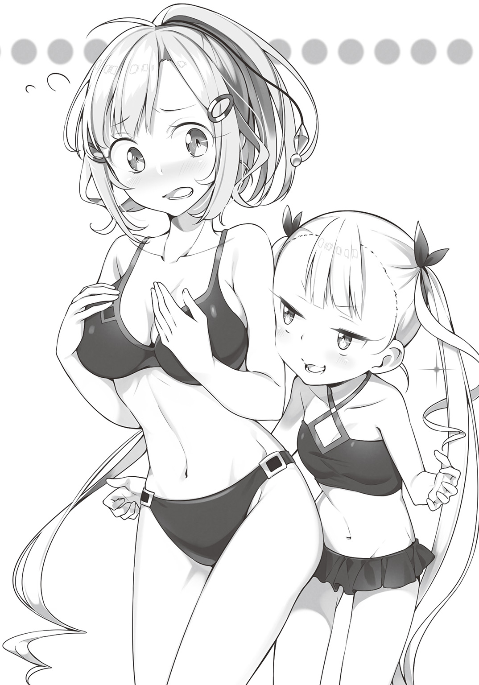
シャワーにしろ、湯船に浸かるにしろ、裸にならねばならない。
だが、バルザックは、裸はおろか、鎧を脱ぐこともできないのだ。
「ふっふっふっ、大丈夫です」
我に策あり、とばかりにほくそ笑むコロナ。
「バルザックさんが北方出身って聞いて、ひらめいたんですよ」
言うと、コロナは浴場の一角を指差す。
そこにあったのは。「サウナルーム」だった。
「鎧のままでは、シャワーを浴びることも、湯船に浸かることもできません。でも、サウナなら蒸気ですから、問題なしですよ！」
サウナは、主に寒冷地を中心に広まった入浴法と言われている。
雪に閉ざされる北国において、風呂はただ体を清潔に保つだけのものではない。
気温が低いと、新陳代謝が悪くなり、汗をかかないことで、体の内部の毒素や、毛穴に詰まった老廃物などが流れ出なくなって健康を害する。
そこで、たっぷり汗を流すことでリフレッシュする、蒸し風呂が広まったのだ。
「さささ、早速入りましょう。わたしも付き合います！ 実はわたし、サウナ大好きなんですよ～」
体中から汗をたっぷりと流した後に飲む、冷たい飲み物がまたたまらないのだ。
ストローを使わなければ口にものを入れられないバルザックでも、冷たい飲み物なら常人と同じように楽しめる。
きっと喜んでもらえると期待しながら、一行はサウナルームに入った。
「くぅ～、この熱さ！ 体に染みますねぇ～」
「おっちゃんみたいだねコロナちゃん」
「.....................」
サウナルームも貸し切りにしているので、他の客に気兼ねする必要もない。
部屋の真ん中に置かれた、熱した岩にお湯をかけ、さらに蒸気を発生させる。
「かー！ キタキタキタ！ きましたよー！」
「コロナちゃん、中身おっちゃんなんだね」
「.....................」
湯気でいっぱいになるサウナ室で、テンションの上がったコロナは、バスタオルを振り、空気を攪拌させる。
「ほらほら、熱風がいい感じでしょ！」
コロナは、衛兵時代、夏場の肉体労働の後に、同じく衛兵仕事をしていたおじさんたちにサウナを勧められ、大ハマリした過去を持つ少女だった。
「あれぇ？ リディア......あんまり汗かいてないね」
「え？ あ、そう？」
「うん......っていうか、まったくかいてない......？」
「え～っと......体質的に、汗かかないのよアタシ」
「いやいやそんなバカな」
どんな人間でも、体が熱くなれば、体温調整のため汗が出るものである。
しかしリディアは、汗どころか、熱によっての肌の火照りも起こしていない。
「あなた、一体......？」
だが、コロナの疑問はそれ以上継続しなかった。
「ごふっ！」
ずっと沈黙していたバルザックが、重い声を一つ上げると、音を立てて倒れてしまったのだ。
「え？ バルザックさん!? どうしました！」
慌ててバルザックに駆け寄り、鎧に手を触れる。
「あっちっ！」
金属の熱伝導の高さで、呪いの鎧は触れられないほどの高熱になっていた。
「や、やばいよコロナちゃん！ これ鎧の中サウナ以上の蒸し風呂になっている！」
「ええええっ!?」
ただでさえ高温のサウナの中に、重装甲の鎧をまとって入ったのだ。
鎧の中はサウナ室以上の高温に蒸され、もはや人間が耐えられる温度ではなくなっていた。
「すぐに出さなきゃ！」
「で、でも......熱くて触れない......」
「バスタオル！ ありったけのバスタオル持ってくるの！」
バスタオルを、まるで鍋つかみのように使って、ようやくサウナ室から引っ張り出す。
「早く体を冷やさなきゃ......そうだ！」
サウナ室の隣には、火照った体を冷ますための水風呂が備えられている。
「てぇーい！」
その中に、ありったけの力を込めて、バルザックを投げ込んだ。
ドボンという大きな音と、水柱を上げて、狂戦士の体は水風呂に沈んだ。
「はぁ......危なかったぁ～......」
サウナによるものではない、別の汗を流しながら、コロナは安堵する。
「いやぁ、あぶなかったねぇ」
「ホント、もうちょっとで大惨事に......」
水風呂に沈むバルザック。しばしの間、ブクブクと泡が立ち上っていたが、それが止まる。
「やばい！ 浮かんでこない!!」
「にょええええ!? ど、どうしよう!!」
引きずって運ぶだけでも一苦労だった重甲冑の戦士である。
水中から引き上げるなど、それなりに体力はあるとはいえ、女手と子どもの手でできるものではない。
「だ、誰か！ 誰か―――!!」
結局、コロナの悲鳴にも似た叫びを聞きつけた、男性スタッフ数人の力を借りて、ようやく水風呂からの引き上げに成功する。
そして、数時間後――再び、バルザックの客室。
「すいません」
床に座り込み、ひたすら頭を垂れるコロナ。
「もう、大丈夫だから......頭を上げて......？」
ベッドに横たわり、力のない声で、それでも相手を励ますバルザック。
「わたし、大丈夫って言ったのに......なにも力になれなくて、それどころか......」
力になるどころか、却って、バルザックに迷惑をかけた。
温かな食事も、熱いシャワーも楽しませることができず、そして三つ目の、清潔なベッドに至っては、始まる前に終わっていた。
「ベッド、ボロボロだねぇ......」
力なくつぶやくリディア。
バルザックのまとう呪いの鎧は、体中に大小様々な棘が付いている。
それは肩にも、胸にも、背中にも。
こんな鎧をつけたままでは、どれだけ柔らかな羽毛布団を用意しても、どれだけ清潔なシーツを用意しても、横たわった瞬間ボロ布に変わる。
「なにも、できなかった......」
コロナが騎士に憧れ、騎士見習いとなったのは、あの日あの時、自分を助けてくれた、騎士のようになりたいと願ったから。
そして、バルザックもまた、あの時の騎士と同じく、誰かを守るために戦った。
そんな人を、少しでも癒やしてあげたいと思った。
それこそ、ギガントキャッスルに入った時、客でもない自分をもてなしてくれたレイアのように。
旅の暮らしの中、疲れた心と体に、ほんのひとときでも、癒やしを与えたかった。
「わたし、ダメだなぁ......」
騎士になろうとしてもなれず、職を失いさまよっている間、自分の力のなさに、存在意義すら疑った。
あらためてそれを痛感し、目には涙が滲んでいた。
「いいんです。コロナさん」
そんな彼女にも、バルザックは優しい言葉をかけた。
「あのね、私......嬉しいと思っているんですよ？ この体になってから、ずっとひとりぼっちだったけど、コロナさんが頑張ってくれたから、それだけで嬉しいよ」
その言葉は無理して作ったものかもしれない。
だが、その中に含まれた、感謝の思いは、間違いなく本物であった。
「それだけで、十分......」
「でも、なんにも役には立ってねぇよなぁ」
バルザックの声が、重なって聞こえる。
「バルザックさん......？」
驚き、顔を上げる。
横たわっていたはずのバルザックは、いつの間にか体を起こし、コロナを見下すように首をかしげている。
「ったく、マヌケな女だぜ......まさか風呂に沈められるたぁな。あともうちょっとで、コイツが死んじまうとこだったじゃねぇか？」
言葉に反して、それすらもおかしそうに、バルザックは――いや、バルザックとは別の何者かが、笑っている。
「あなた......まさか、呪いの鎧......？」
「正解」
バルザックがまとった、呪われし装備。
その声は、鎧に取り憑いた、悪霊の声だった。
「無力で愚かでマヌケな女だぜ。笑いを堪えるのが大変だった」
「悪霊......これが......？」
鎧の隙間から、おぞましい色をした、煙のようなものが立ち上る。
それは翼を有した、嗜虐的な笑みを浮かべる、悪魔のフォルムに変わっていく。
「どんな手段を講じたとしても、俺様を纏った者が、平穏な暮らしを取り戻せるわきゃねぇだろ？ ケケケケケケッ！」
きしんだ歯車のような、不快な声で、悪霊は笑う。
「もう、もういいでしょ！ あなたはバルザックさんに三年も取り憑いたんでしょ！ もういいじゃない！ いつまで呪い続ける気よ！」
力を求めた代償としては、あまりにも残酷な仕打ちをする悪霊に、コロナは叫ぶ。
「死ぬまで、かな？」
だが、悪霊の答えは、彼女の想像を上回るゲスっぷりだった。
「そんな......どうしたら、あなたは呪いを解くの！」
こうなったら、直接本人に聞くしかない。
「コロナちゃん、そら無理だよ。教えてくれないよ」
「一つだけ方法がある」
「教えるの？」
悪霊の意外な律儀さに、突っ込むリディア。
「呪いにかかった時の対処法は古来より二つしかねぇ。一つは死ぬまで取り憑かれる、もう一つは......他の誰かに取り憑かせる......くくくっ」
悪霊の顔が、コロナをじっと見つめていた。
「まさか......わたしがその鎧を着れば、バルザックさんを解放するっていうの......？」
「ビーンゴ......どうだい？」
「バカなことを......！」
考えるまでもなく拒絶するコロナだったが、悪霊にはその返答も予想のウチだった。
「お前さぁ、騎士見習いなんだってな？」
悪霊は、バルザックの理性を支配していない時も、その意識は覚醒している。
その間に周りで囁かれている話は、全て、耳に入れていたのだ。
「その割にゃ、俺様に一撃で剣を折られて、気絶してぶっ倒れちまった......くくくっ、情けねぇ騎士サマだねぇ」
「う、うるさい！」
悪霊にまでバカにされ、悔しさと恥ずかしさに顔が真っ赤になる。
「怒るなよ。いい話、提案してんだからよ」
「いい、話......？」
言っている意味がわからず、聞き返す。
「俺様を纏えば、お前は無敵の力を得る！ どうだ、悪い話じゃねぇだろ」
「なにを、言ってるのよ......！」
「そうかなぁ？ 名ばかりの騎士サマ。世の中、力がなきゃあ何もできねぇ。その力をくれてやるって言ってんだ。俺も正直、この体に飽きてきた。気分転換に取り替えどきかなとも思ってたのよ」
人間の体を、心を、まるで装飾品のように、悪霊は語る。
「知っての通り、不便な暮らしにはなる。でもいいじゃねぇか、力を得られるんだぜ？ 他人を屈服させる、無敵の破壊の力が得られる！ なぁに、暴れ回るったって、俺だって宿主は傷つけねぇ。周りのやつがたま～に、二、三人死ぬくらいだ」
「力を.........得られる......」
コロナの目が、迷いに泳いでいるようだった。
「コロナちゃんダメだよ！ そんな誘惑に乗っちゃダメ！」
リディアが叫ぶが、コロナは応じない。
「悪くない......かも......」
立ち上がると、コロナはゆっくりと、バルザックに、バルザックに取り憑いた悪霊に近づく。
「オーケィ！ 契約成立だ！ 仲良く殺ろうぜ相棒！」
悪霊が手を伸ばした瞬間、コロナは手近な壁にかけられていた燭台を摑むと、悪霊に向かって投げつけた。
「ふざけるな！ 『いかなるときも悪を憎め！ 不正義を許すな』！ 騎士道百箇条、その三だ！」
精一杯の空元気をかき集め、コロナは叫んだ。
「テメェ......このクソガキ......」
呻くような声で、目元を押さえる悪霊。
相手は悪霊――、幽幻体と呼ばれる存在である。
本来なら物理的攻撃は通用しないが、コロナの投げた燭台は、銀加工が施されていた。
古来より銀は、破邪の力を持つ物質。
わずかだが、悪霊を傷つける効果を発揮した。
「やってくれたなこのクソアマ!!」
だが、効果はあくまで、わずか。
半端なダメージは相手の怒りを誘い、より凶悪な反撃を呼び寄せる。
「がはっ!?」
悪霊が操るバルザックの腕が、コロナの首を押さえつける。
「せっかく俺様がナイスなプランを提案してやったってのに......もういい、テメェは死ね」
「あ......がはっ......あああっ!!」
ぎりぎりと、バルザックの金属板で覆われた指が、コロナの首に食い込む。
「くそっ......くそう......」
必死でもがく。爪を立て、相手の手を振りほどこうとする。
だが振りほどけない。
力が、あまりにも、違いすぎる。
「情けねぇ騎士サマだ！ 非力で貧弱、剣も折られて、みっともねぇにもほどがあらァ！」
抵抗するコロナを、悪霊は嘲笑する。
「きし......どう......ひゃっかじょう.........その......よん......」
呼吸を封じられながらも、コロナはくじけず、声を上げる。
「『騎士とは......剣を持つから......騎士にあらず......信念の刃を携えし者こそ......騎士なり......』だぁ......！」
そう言って、悪霊を睨み返した。
「うっせぇんだよクソが！ さっさと死ね！」
「いえ、そうは参りません」
声が増えた――いや、声だけではない。
いつの間にか、その場にいる誰も気づかぬうちに、悪霊の背後に、その青年は立っていた。
「レイア......さん......？」
黒と白を基調とした、シックなタキシード風の制服に身を包んだホテルマンがそこにいた。
「て、テメェいつの間に!?」
悪霊すら気づかぬほどの、完璧すぎる隠形であった。
「驚かせてしまいましたか。申し訳ございません。わたくし、気配を消すのがクセになっておりまして。なにせおくつろぎのお客様のお邪魔になってはいけませんから」
レイアの口調に、一切の揺らぎなし。
淡々と、粛々と、冷静に、的確に、「接客」を行っていた。
「また、俺様の邪魔をするつもりか!!」
反して、それまでコロナに見せていた余裕はどこへやら、激しい狼狽の色を、悪霊は見せていた。
（また......？）
悪霊の言葉に、首を絞められ、酸欠に苦しみながら、コロナは疑問に感じる。
そして、同時に思い出す。
あの時、ロビーで暴れるバルザックを前に、彼女は意識を失った。
その寸前、てっきりそれこそ夢だったと思っていた光景があった。
「死にやがれ!!」
バルザックは、コロナを摑んでいるのとは逆の手で、断頭台をそのまま刃にしたような、呪いの剣を振りかぶり、振り落ろす。
相手がどんな堅牢な鎧をまとっていようが、それごと斬り殺せそうな勢いで。
「困ります。お客様」
だが、その剣はあっさりと止められる。
レイアの手が、片手で、素手で、それを受け止めてしまった。
（そうだ、あの時も......）
あの時もそうだった。
自分を斬り殺そうとした刃を、立ちはだかったこの男が、片手であっさり受け止めてしまったのだ。
あまりにも現実味のない光景に、そんなもの夢としか、理性が認識しなかった。
「く、くそ......なんなんだおめぇは!! 近づくな！ 近づけばこの女の首ぃ、へし折るぞ！」
「あがっ......！」
コロナの首を絞める手が、さらに強まる。
このままでは、窒息する前に、首の骨がへし折れる。
「これは......困りましたねぇ」
「困ったのなら、こっちの言うことを――がっ!?」
コロナを人質に取り、有利に戦いを進めようとしたのであろう悪霊。
その首を――バルザックのではない――幽幻体であるはずの、悪霊の顔面を、レイアは鷲摑みにした。
「お客様のお顔に直接触れるというのも、たいへん無礼なお話なので、できれば避けたかったのです」
彼の言う「困った」は、そういう意味でしかなかった。
「な、なんで触れるんだ!? 俺は、幽体なんだぞ!?」
物理的干渉をほとんど受けない存在であるからこそ、自分は常に安全な場所にいて人間を弄べた余裕が、悪霊から完全に失われていた。
「当ホテルには、様々なお客様がいらっしゃいます。それこそ、幽体の方も......触れずして、満足のいくサービスは行えません」
「そんな無茶な!?」
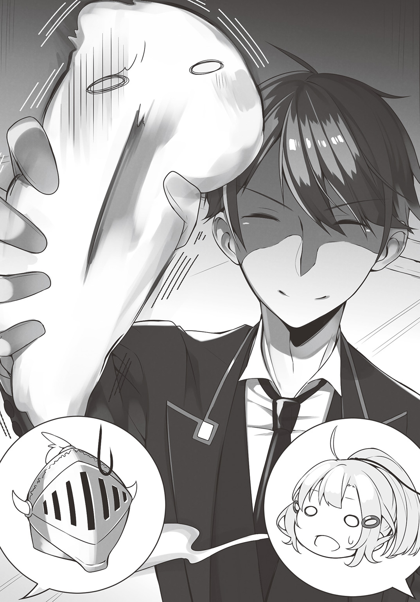
神の力の宿った聖物か、破邪の力を有した武器をまとっているならともかく、素手で悪霊に触れる者など、いるはずがなく、いてはおかしい。
「当ホテルのモットーは、いかなる民族、いかなる種族であろうとも、全てのリクエストにお応えする――です。これくらいのこと、接客の基礎でございます」
しかし、それを果たした青年は、それすらあくまで「接客の基礎」と言ってのけた。
「う、ううっ......」
悪霊に支配されていたはずのバルザックが、小さく、うめき声を上げる。
「しまった!?」
触られるという、初めての経験に、悪霊の支配力が弱まり、バルザックの理性が蘇る。
「バルザック様、申し訳ございませんが。あなたが今摑んでらっしゃるコロナさんを放してあげてくださいませんか？」
「え......？ ああ、コロナさん！」
体の支配を取り戻したバルザックは、慌てて、コロナの首から手を放し、彼女を解放する。
「げほっ！ げほっ!!」
ようやく呼吸を再開させ、涙目になりながらも、コロナは目の前の光景に目を向ける。
ホテルマンが、悪霊を追い詰めている光景を。
「さて、大変申し訳ございませんが......ご芳名を賜れますでしょうか？」
「な、なんだと......!?」
悪霊の顔面を摑みながら、レイアは「名を名乗れ」と言い出した。
「ば、バカを言うな！ 俺たち幽界の者は、名前は全存在を表す！ みだりに教えられるものじゃねぇ！」
「ああそうですか、やはりそうでしたか。道理で」
てっきり、自分の真名を知ることで、レイアが支配しようとしているのかと思った悪霊だったが、彼の思考に、そんな狙いは欠片もなかった。
「道理で、宿帳にお名前がなかったはずです」
「「「は!?」」」
いきなり出てきた宿帳という言葉に、悪霊だけではない、コロナも、バルザックも啞然とする。
「大陸宿泊業法というものがございまして。宿泊の際には、必ず、部屋を利用する人数を明記しなければならないのです。しかるに貴方様は、それをなさっていません」
ギリリと、悪霊を摑む手が強まる。
「それに、当ホテルの宿泊法というのもございまして。料金はベッド数ではなく、使用される人数ごとに頂いております」
たとえベッドが一つしかない一人部屋だったとしても、二人で使用した場合、宿泊料金は二人分支払うという法規である。
「さて困りましたね。重大な宿泊法違反です！」
言うや、レイアは力を込め、悪霊をバルザックの体から引っこ抜いた。
「な、なにいいいい!?」
取り憑いていた悪霊が、力ずくで、無理やり引き剝がされたのだ。
「バカな!? なぜ!? そんな!? そんなこと、できるわけがない......まさかお前......」
「さて、バルザック様、一つお伺いしてもよろしいでしょうか？」
慌てふためく悪霊に一瞥もくれず、レイアは問いかける。
「こちらの悪霊様は、バルザック様のご友人でしょうか？ この部屋をともに利用する間柄の方でしょうか？ それでしたら、宿帳に御記名の上、追加料金が発生いたしますが？」
「え.........っと.........？」
困惑するバルザック。
レイアが一体何を言っているのか、一瞬理解できなかった。
だが、僅かな後、ようやく、その意味を察する。
「違います！ この部屋は私一人で利用する部屋です！ その人は勝手についてきただけです！」
そして、正しい回答を叫んだ。
「なるほど......かしこまりました。では申し訳ございませんが悪霊様。可及的速やかに、当ホテルよりお立ち退きくださいませ。ご宿泊のお客様の御迷惑になります」
「ま、待て!? なにを、なにをするつもりだぁ！」
片手で鷲摑みにしたまま、レイアは悪霊を引きずっていき、窓を開いた。
「わ、わかった！ 俺の真名を教えてやる。アンタの下僕になってやる！ 俺は悪霊の五百個師団を支配する、魔界の公爵――」
「では、ごきげんよう」
叫ぶ悪霊の声に一切耳をかさず、投擲競技のように振りかぶると、レイアはそのまま、空に向かって、悪霊をぶん投げた。
「ひ、ひええええええええっ.....................」
なすすべなく、凄まじい速さで、空に消えていく悪霊。
最後に、キランと、青空に光が瞬いた。
「え、えっと？」
目の前で起きた、現実味の欠片もない、その上、随分と力ずくでなされた事態に、コロナはただただ呆然としていた。
「一体、どういうことなんですかこれ......？」
「大したことはしていませんよ。招かれざるお客様にお帰りいただいただけです。よくある話です。まぁ、あとは......」
言いながら、レイアはバルザックの前に立つと、デコピンの要領で、鎧の額部分を指で弾いた。
「え......？」
途端に、ピシッ、パシッと、亀裂の入る音がしたかと思うと、一瞬のうちに、バルザックのまとっていた鎧が、砕け散った。
「えええ!?」
「そんな驚くことではありません。呪いの武具ですから、呪いの大本の悪霊様がいなくなればこんなものです」
砕けたのは鎧だけではなかった。
呼応するように、盾も、大剣も砕け散り、無数の破片に変わったかと思うと、歪められた常理のツケがまとめて精算されたように、風化し、砂と化した。
「ウソ......そんな......信じられない......私、自由になったの......？」
「ば、バルザックさん......？」
そして、砕けた鎧の中から現れたバルザックの姿を見て、コロナはさらに驚く。
そこにいたのは、美しい金色の髪をした、一人の美女だった。
「女の人だったんですか!?」
「え、言ってませんでした？」
「宿帳には記入されていますよ。フローリア・バルザック様と」
顔面まで覆った、全身重甲冑。そんなものを着ていれば、男女の性差などわかりようもない。さらに言えば、鎧に包まれていたせいで、声もかすれて聞こえていたのだ。
「さて、フローリア・バルザック様。お召し物を壊してしまい、申し訳ございませんでした。すぐにお着替えを用意致しますので......そうですね。その間、ご入浴など楽しまれては？ この時間ですと、三十階の天空風呂が空いておりますよ」
それだけ言い残すと、レイアは素早く床に散らばった、砂と成り果てた呪いの武具をちりとりで集めると、ゴミ袋に詰めて、部屋を退出した。
「おふろ.........」
信じられないとばかりに、フローリア・バルザックはつぶやく。
「バルザックさん......ううん、フローリアさん！ 行こ！ お風呂！ いっぱい、体中きれいにしなきゃ！ ずっと鎧着てたから、結構臭うよ？」
課せられた呪いから解放された彼女に、コロナはもらい泣きしそうになりながら言う。
「うん......お風呂入る.........うん！」
喜びに涙しながら、フローリアは、何度も首を上下に振った。
「さて、と......」
部屋を出たレイアは、黙々と、廊下を歩む。
そこに、いつの間にか、リディアが並んで歩んでいた。
「どう？ あの子、いい感じ？」
「いろいろなものが足りません。ですが――」
答えながら、レイアは足を止める。
そして、肩越しに、フローリアの部屋の扉の方を振り返る。
そこからは、扉越しにも聞こえるほど、大喜びで笑い合う二人の声が漏れていた。
「大切なモノは、持っているようですね」
つぶやく彼の口元は、微笑ましそうに、笑っていた。
それから三日間、フローリア・バルザックは、三年間の鬱屈を晴らすように、入浴を楽しみ、まっとうな食事を楽しみ、柔らかいベッドを楽しみ、心から穏やかな日々を過ごす。
同時に、ホテルの専属スタッフによって、この三年間で、鎧をつけ続けたことで荒れた、彼女の体――肌や髪の毛、それこそ爪の先から頭の天辺まで徹底的なケアを行った。
ギガントキャッスルの宿泊予定日数を終える頃には、彼女は眩しいばかりの美女の姿を取り戻す。
「本当に、なんとお礼を言っていいか......」
宿泊最終日、チェックアウトを終えたフローリアは、見送りに立つレイアとコロナに、感謝の言葉を述べた。
「いやぁ......わたしは、なにもしてないですし......」
「そんなことありません！」
居心地が悪そうな顔のコロナに、フローリアは、世辞ではなく、心からの思いを込めて言う。
「そんなこと、ない」
改めてもう一度、万感の思いを込めて告げる。
「そっかな......ええっと、どういたしまして！」
笑顔で、コロナは感謝の言葉に応じる。
「これから、どうなさるおつもりですか？」
レイアに問われ、フローリアはわずかに暗い顔で答える。
「はい......故郷に帰ろうかと思っています......ただ、私のことを受け入れてくれるかは、わかりませんが」
フローリアは、呪いの武具によって、故郷を救ったが、大切な人たちを傷つけてしまった。
「なるほど、女性の一人旅ということですか。それは危険ですね」
「ええ、これまでは、あの鎧を着ていましたから」
皮肉なことに、呪いの武具のおかげで、そもそも女とも思われなかったことから旅路の安全が保証されていた。
「なので、お迎えをお呼びしておきました」
スッと、レイアは、フローリアの肩越しに、その向こうを指差す。
「え......？」
振り返るフローリアの視線の先には、今さっき港に着き、そこからひたすら全速力で走ってきたばかりというような、荒い息を吐く男の姿があった。
「ガリウス......なの......？」
信じられないとばかりに、フローリアがつぶやく。
男の名はガリウス。
フローリアが呪いの武具を纏ってまで守ろうとした大切な人であり、呪いのせいで、最初に傷つけてしまった恋人。
「帰ろう......フローリア......もう、君を一人にしない......！」
手を伸ばすガリウス。
フローリアはその手を取り、二人は強く抱き合った。
「ありがとう......ございます......！」
歓喜の涙を流し、フローリアは、改めて、レイアに感謝の言葉を返した。
「あの、レイアさん......私、またここに来ます。今度は、その......新婚旅行で」
頰を赤く染めながら言う彼女に、レイアは深々とお辞儀をした。
「お待ちしております」
「あの、あなたのお名前を......フルネームを教えていただけますか？ 今度来た時にも、あなたに担当していただきたいので」
「わたくしの、名前ですか」
ギガントキャッスルの従業員は、二千人を超える。
その中の一人を指名するのなら、ファーストネームだけでは頼りない。
「名乗るほど大した家名ではございませんが......レイア・トゥールマンと申します」
「ふ～ん、そんな名前だったんですね」
特に感慨もないコロナだったが、それを聞いて、フローリアが驚きに目を見開いていることに気づき、それに驚いた。
「ど、どうしたんですか......？ フローリアさん？」
「トゥールマン......まさか、あなた......トゥールマン卿ですか!?」
「卿!?」
卿とは、高貴なる者、王族か、貴族に付けられる称号である。
「最強のホテルマン......皇帝陛下すら満足させ、その接客の見事さから、ホテルマンとしての功績で、貴族の称号を与えられたと......」
「うそぉ!?」
皇帝陛下をもてなしたというのもすごいが、その接客がすごすぎて爵位まで与えられるなど、非常識この上ない話である。
「別にどうでもいいものです。勝手に与えられただけですから。当ホテルはチップ制ではないというのに」
「いや、チップって......？」
一番非常識なのは、爵位すら無理やり押しつけられたチップにしか感じていない、この男なのかもしれない。
「そんなものより、私にとって価値があるのは、当ホテルをご利用いただいたお客様の笑顔です」
レイアは新たなる門出に立つフローリアたちに、笑顔で言った。
フローリアを送り出したレイアとコロナは再び、ロビーに戻った。
「あの、レイアさん。ちょっと聞いていいですか？ レイアさん、フローリアさんの呪い、解いてあげられたんですよね？」
「ええ、造作もないことです」
「ならなんで最初っからやってあげなかったんですかあ！」
自分が動かなくても、もっと早く解決した問題であった。
「せっかくなので、試験も兼ねてみました。あなたが、あのバルザック様をどのようにおもてなしするのかを」
「どういう意味です？」
レイアのわけのわからぬ物言いに、コロナは首をひねった。
「あなたの就職試験ですよ。ギガントキャッスルで働くに足るかどうかの」
「は!?」
「まぁ、ギリギリ合格ですね」
いきなり、おかしな言葉が出てきたことに、耳を疑う。
「なんですか就職試験って!? わたし、ここで働くなんて言ってないですよ！ 行かなきゃいけないところがあるんですから！」
コロナがこのグランクルスに来た目的は、巨人砦に仕官することである。
「そのための紹介状も......あれ、どこやったっけ!?」
この数日のドタバタですっかり忘れていた。
なくさないように胸元に入れていた紹介状が、どこにもない。
「安心しなさい。ここにあります」
どこから取り出したのか、レイアの手の中に紹介状を収めた封筒がある。
「気絶した際に、胸元から落ちていました」
ただし、その封は解かれている。
「なに勝手に中身見ているんですか!?」
「だって、これ私宛ですよ？」
「え...............？」
封筒の裏側には、宛名が書かれていた。
そこには確かに「トゥールマンへ」と書いてある。
「中にはこう書かれていました。『この紹介状を持ってきた者の面倒を見てやってくれ。立派なホテルマンにしてやってほしい』とね」
「えええええ!? 待ってください！ わたし。ホテルマンになるためにここまで来たんじゃないですよ！ わたし、騎士なんですよ！ 見習いだけど！」
「安心しなさい。就業時間外のプライベートまではこちらは関与しませんので」
「人の騎士道をアフター５の趣味扱いしないでください！」
人の話を聞いているのか聞いていないのか、淡々と告げるレイアに、コロナは泣きそうな顔で叫ぶ。
「私は、巨人砦に来たはずなのにぃ～！」
「ええ、場所は同じです」
かつて、巨人砦と呼ばれた、史上最強の、難攻不落の要塞があった。
帝国軍による七度の侵攻を退けたこの地には、一騎当千の猛者たちがひしめいていた。
しかし、帝国は大迂回作戦を取ることで、巨人砦と戦わずして、彼らの守る国の首都を陥落させる。
統一された天下。戦いが終わった世界で、砦もまた、なくなるはずだった。
だが、それでもこの地を守ってきた者たちは、砦をなくしたくなかった。
新しい時代を生きるため、名前を変え、全ての武力を捨てた。
来る者を拒む要塞ではなく、あらゆる者を受け入れ、安らぎを与える場となった。
その砦は、今はこう呼ばれている――ホテル・ギガントキャッスルと。
第二章 お食事のお時間です
東西に伸びる大街道と、南北に流れる大運河が交錯する都市〝グランクルス〟――そこにある、大陸一の巨大さと大陸一のサービスをむねとする超巨大ホテル、その名も「ギガントキャッスル」。
多種多様な人種、種族がひしめくこの街で、今日もギガントキャッスルには、様々なお客様が訪れていた。
「ちょっと！ シャワーから出ているの真水じゃない！ これじゃお肌が荒れちゃうでしょ！」
海水種と淡水種では同じマーマン族でも体内の塩分濃度が異なる。
浸透圧によって体の塩分が流れだしてしまうのだ。
「はいかしこまりましたー」
大急ぎで、塩水シャワーの出るお部屋にご案内する。
「キミィ、ワシはドワーフ料理を食べられる店を教えてくれといったんだ。ありゃヨブドワーフ族の料理じゃないか」
ドワーフ族は長らく部族間対立が激しく、地方ごとに、さらに言うならば森ごとに独自の文化を育んでいる。料理となれば、まったく別物と言っていい味付けになるのだ。
「失礼いたしましたー！」
即座に、ご要望のレストランを探し、席を予約する。
「今度グランクルスミュージアムホールで行われる、ネメシスのコンサートのチケットが欲しいんだけど」
ネメシスとは、セイレーン族の、超人気ミュージシャンである。
その美しさもさることながら、圧倒的な歌唱力に、老若男女全てに熱烈なファンがいる。
「かしこまりました！ 少々お待ちくださいませ」
違法なダフ屋から購入すれば、大陸商法に反することになる上、最悪ニセ物や盗難品を押しつけられることもある。
各バイヤーに、希望の席を手に入れられないか問い合わせる。
――かように、ホテル業務というのは、毎日が戦場なのだ。
「疲れたぁああああっ！」
昼休み――ギガントキャッスル従業員食堂のテーブルに突っ伏し、コロナは声を上げた。
初めてこの地を訪れてからはや一カ月。
彼女は、このホテルの従業員見習いとして働いていた。
「お疲れだね～、コロナちゃん」
そんな彼女にいたわりの言葉をかける、少女リディア。
「ホテルのお仕事がこんなに大変だとは、思ってもいなかったわ......」
げんなりとするコロナ。
グランクルスに来るまでに、彼女は所持金の殆どを使いきってしまった。
残るにしても帰るにしても、働き口を見つけなければならない。
いささか納得のいかない部分も多かったが、それでも雇ってくれるというのなら、受け入れたほうがいいと考えたのだ。
「なんか、辛そうだね？」
心配そうにリディアが声をかける。
納得ずくで働いているわけだが、それでも問題がないわけではない。
「なにか不満なところがあるの？」
「文句があるわけじゃないの、むしろ、環境としてはいいくらいなんだよ？」
見習いといえど、従業員である以上、コロナにはキチンと給金が支払われている。
額はめちゃくちゃ大金ではないが、彼女くらいの年頃の少女が働いて得られる額としては、十分納得できるものである。
徒弟制だとか内弟子だとか研修期間だとか、様々ごまかしの言葉を重ねて、ほぼ無給でこき使う業者に比べれば、ずっと良心的である。
「三食と泊まるところ付くし」
「ま～、ホテルだからねぇ。泊まるところくらいいくらでもあるよ」
さすがに客室の使用はできないが、ギガントキャッスルは超巨大ホテルである。
人間で言うならば、背中の下、腰との間くらいに、二千人を超す従業員の寮まである。
「衛兵時代に住んでた宿舎とは比べ物にならないくらい優良物件だし」
ベッドなどの家具は備え付け、各階に数か所共同の炊事場があり、従業員用の浴場もあるが、宿泊客の利用時間後ならば、大浴場などの使用も許されている。
自慢の天空風呂からの眺めは最高だった。
「そしてごはんおいしいし」
ギガントキャッスルは、二百軒を超すレストラン街があるが、それに加えて、ホテルが経営しているメインレストランがある。
従業員用の食堂は、そこのコックたちが日替わりで「修行」として派遣されており、時に新メニューの試食も兼ねて提供されるため、栄養たっぷりで味もすばらしい。
特に、料理長が担当する日が月に三度あり、その日は全従業員の士気が五割増すと言われるほどの美食が楽しめる。
「いい仕事をさせるには、しっかり食べて、しっかり休んで、まっとうな給金を払う。それがウチのホテルの経営方針だからね」
えへんとばかりに、まるで我がことのようにリディアは胸を張った。
「ふ～ん、このホテルのオーナーさんって、いい人なんだね」
たかが見習い従業員程度では、オーナーと直接対面などできるわけはない。
しかし、来客だけでなく、働く者たちにも笑顔であってほしいという思いがなければ、こうも手厚い福利厚生はなされないだろう。
「ん？ どうしたの、リディアちゃん？」
「え、いやいやいや、なんでも！」
サウナに入っても汗一つかかず、肌を火照らすこともなかった少女の頰が、少し赤くなっていた。
「それよりさ？ なにか嫌なことでもあったの？」
これだけいい職場環境で、コロナはあからさまに辛そうな顔をしている。
「う～ん......接客業って、なんていうか、今まで使ったことのない体力を使うっていうか......」
コロナが今まで携わってきた仕事は、ほとんどが、肉体労働に分類されるものばかり。
接客業と肉体労働は、単純な〝力〟という面では、後者のほうが過酷である。
だが、様々な状況のもと、時に同時進行で対応する接客業は、また別種の疲労がある。
ましてやコロナは、こうと決めたら一直線に全速力するタイプなのだ。
くるくると移り変わる状況についていくこともできず、余計な体力を使ってしまっていた。
「わたし、才能ないのかなぁ......ちゃんと役に立ってない気がする」
己の無力さを嚙み締めることしかできないことが、コロナの憂鬱の最大の理由だった。
「接客業に向く者は、二種類だと言われています」
そんな彼女に、背後から声がかかる。
「ふぇ！ レイアさん」
現れたのはレイア。いつものように、気配を消すのがクセになっている。
彼は、見習い従業員となったコロナの、指導教官も兼任していた。
「高い処理能力を持つ者か、そもそもストレスを感じない者か、です」
悲しいかな、それはどちらもコロナの持っていないものである。
「やっぱり才能ないんじゃないですか」
「才能のあるなしは、一月程度でわかるものではありません。ましてや、そこまで自分を測れるほど、あなたは全力を尽くしたのですか？」
言いながら、レイアはテーブルの上に、ドサドサと書物を重ねる。
「大陸公用語辞典......？ 全種族文化概論......？ 辺境諸部族会話集？」
どれもこれも、難しそうな本ばかりである。
「天性の才能がないのなら、まずは鍛えることです。仕事の処理能力を高めれば、余裕が生まれ、見えるものがでてきます。あなたは体力はあるんですから、次は知力です」
「まさか......これ......読むんですか？ わたしが!?」
「幸いあなたは頭があまり良くないようなので」
「ひどい!? 確かに、座学は苦手でしたけど......」
騎士見習いを目指して、衛兵時代に学問所に通っていたが、じっと座って教科書を読んでいるだけで頭が痛くなる毎日だった。
「だからいいんです。あなたの場合、勉強が苦手で、そちらをしてこなかったというのが大きな理由。なら、伸びしろがまだ残っているということです」
「短所を埋めるより、長所を伸ばすほうがいいと思うんですが......」
勉強嫌いのコロナは、不愉快そうな顔で反論する。
「ほう？ ではあなたの長所は？」
「え？」
いきなり問われても、返す言葉がぱっと出てこなかった。
「ど、どこだと思います？」
あげくに、相手に聞き返してしまった。
「コロナちゃん......酒場のおねえちゃんが歳聞かれたんじゃないんだから......」
呆れるあまり、思わず子供らしくないツッコミをするリディア。
「自分がなにが得意なのか、自分がなにが不得意なのか、まずそれを知ることです。そのためには様々なものに触れることが大切です」
レイアは、別に責めるような口調ではない。
むしろ、淡々としつつも、相手を納得させ、自発的に学ばせようとする、教師のようであった。
「騎士道百箇条......確か、その四十五でしたかね。『一を究めることは、百を識ることと同じである、そして、一を究めるには、百を識らねばならない』」
「それ持ちだされると弱いなぁ......わかりました。がんばります」
しぶしぶと、片手で持つのもちと辛い重さの書物を手に取る。
「ただ読むだけじゃダメですよ。来週テストしますから」
「ふえええん」
コロナが涙目になったところで、どこからか、ドカドカと、大きな足音が響いてくる。
「むっ―――？」
レイアの目が、わずかに細められるのと、その足音の主が現れたのは同時だった。
「トゥールマンはいるか！」
大声を上げながら、スーツ姿の青年が入ってくる。
年の頃は三十前後くらい、整った顔立ちだが、どこか神経質そうな雰囲気を漂わせている。
「どうしましたホウオウ？ 私になにか御用で？」
「用がなければ捜すか！ オマエはどうして一つところに落ち着いていない！」
応じるレイアに、ホウオウと呼ばれた男は、怒鳴りつけるように言った。
「それでもチーフコンシェルジュか！」
ホテルとは、一つの都市に等しい。
様々な専門技術を持つスタッフが、各部署に振り分けられ、めまぐるしく動いている。
しかし、お客のリクエストというのは、簡単に分類分けできるものではない。
そこでコンシェルジュが受け付け、各部署に振り分け、時に自身が動き、そのリクエストに応える。
コンシェルジュとは、一言で言えば、おもてなしの専門家なのだ。
そして、レイアはその部門の責任者である。
「お客様はこのホテルの様々な場所におられます。一つところにいては、見落とすことや、聞き逃すことも多い。人は動くものです。ならば、それをもてなす者も、動かねばなりません」
「またぐだぐだと屁理屈を......!!」
理路整然と答えるレイアに、ホウオウはピクピクとこめかみをひくつかせる。
「レイアさん、誰ですかこのエラそうな人」
いきなり現れ、ケンカを売るような態度のホウオウに、コロナは少し不愉快になった。
厳しくはあるが、レイアは自分の研修担当者――つまり、先生のようなものである。
自分を指導してくれている相手に、無礼な態度を取られれば、腹も立つというものだった。
「むっ、誰だキサマ」
そんな不愉快そうなコロナに、ホウオウは不機嫌そうに問う。
「人の名前を知りたければ、まず自分の名前を名乗るのが筋です！」
睨みつける男に、コロナも睨み返す。
「最高経営責任者のホウオウだ。これでいいか？」
「ああ、最高経営責任者の方ですか......最高経営責任者......？ 最高経営責任者!?」
最高経営責任者......要は、社長である。
「さて、次に君が名乗ってもらおうか、この最高経営責任者の私に！」
「ひ、ひえええええっ！」
ずずずいっと、顔を近づけられ、コロナは恐怖の悲鳴を上げる。
「み、見習いの......コロナ・ローエンライズと申しますぅ～......」
「ほほう、見習いか？ 新人か？ 新入りか！ その見習いさんが、この最高経営責任者たるこの私に、〝名を名乗れ〟と来たものか！ ははははは！ これは滑稽！」
声は笑っているが、目は笑っていなかった。
「よく覚えておくよコロナ・ローエンライズくん！ これからもよろしくねコロナ・ローエンライズくん！」
「ご、ごめんなさ――」
エライ人に上等かましてしまったことに、震え、謝りそうになるコロナだった。
「謝らなくていいよ、コロナちゃん」
そんな彼女を、リディアが制した。
「むっ......リディア......なぜ君がここにいる？」
「このホテルでアタシがいちゃいけない場所、あるの？」
社長を相手にして、リディアは一歩も退かず、それどころか、ホウオウを圧する。
「いきなりやって来て、間髪入れずに因縁ふっかけたのはアンタじゃないの？ コロナちゃんは礼儀の話をしているの。立場の強い弱いで相手をいじめるなんて、最低だと思う」
「ううっ......」
十歳かそこらにしか見えない少女に、たじろぐ最高経営責任者。
「わ、わかった......私にも、反省すべき点があったことは認める！」
「回りくどい言い方しない！ ふつーに謝る！」
「ごめんなさい！」
十歳の少女に説教される三十路男という大変痛々しい光景であった。
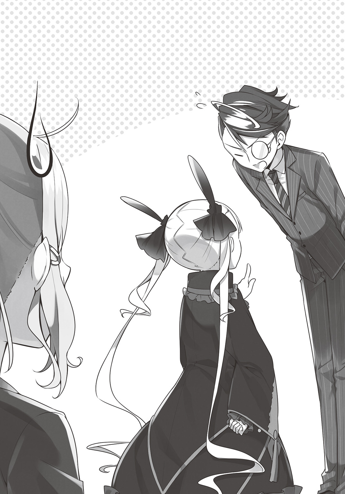
「えっと......リディア......？ あなた一体......？」
前々からおかしなところのある少女だったが、この事態に、コロナは困惑する。
「それで、ホウオウ、私に何か用ですか？」
だが、その疑問を追求する前に、レイアが間に入った。
「ああ......大変なことが起きた......ドルグ・オーラ公が、ギガントキャッスルに宿泊予約を入れてきた」
「なんと......？」
ホウオウが口にした名前に、冷静沈着なレイアが、驚きの声を上げた。
「誰？」
だが、その名を知らないコロナは、ただ首をひねった。
ドルグ・オーラ公とは、竜族の大公――ドラゴンである。
ワイバーンやリヴァイアサンなど、竜族に分類される種は数多くいるが、その中でも、最も高い知能と、戦闘力を持つ神竜族。
ドルグ公は神竜族を治める五大竜の一であり、「神に最も近き者」とも言われている。
「神竜族のドラゴンですか......わたし、初めて見るかもしれません」
説明を受け、素直に驚くコロナ。
竜族の中でも、あまり知能の高くない種族は、人類に使役され、移動手段として用いられることも多い。
大陸諸都市において、高速移動の手段として、翼竜種のワイバーンなどは有名だ。
だが、そういった庶民が目にする竜族は、神竜族からすれば、一緒にされたくないほど下等な者たちなのだという。
それこそ、人間から見れば、猿を見るようなものなのだろう。
「そのドルグ公が来るのが、なにか問題があるんですか？」
不思議そうな顔で、コロナが尋ねる。
ギガントキャッスルのモットーは、「いかなるお客様のリクエストにもお応えする」逃げない接客スタイルである。
「来るのなら、普通にお迎えすればいいんじゃないですか？」
「そうですよ、その通りです」
珍しく、レイアが、コロナの発言を肯定した。
「普通にできる相手か！」
だが、最高経営責任者のホウオウからしたら、そう簡単な話ではなかった。
「神竜族は、他の竜族すらも〝下等〟と呼ぶくらい、誇り高い種族だ。しかもドルグ公は、人間嫌いで有名だ」
「なんでそんな人間嫌いの人が人間のいる街に来るんですか？」
「商売のためだ」
「商売？」
そんな仰々しい種族が、人間のように商いをしているとは、意外な話だった。
「別におかしな話ではない。神竜族は、鉱石を栄養源とする。しかし、彼らが特に珍重している特殊な合金の類は、やはり人類種族のほうが多く有している」
高い知能を持つ神竜族ならば、自力で作り出すのも不可能ではないが、手間がかかるし、なにより「下等」と蔑んでいる人類種と同じことをするのは、彼らのプライドが許さないのだろう。
「そして神竜族もまた、彼らにしか作れない物を持っている。そこで、交易の形でそれらを交換しているのさ。ま、あちらからしたら、名目上は、捧げ物を受け取り、代わりに恵んでやっている......の構図なんだろうがな」
「なんか......スケールのでかい種族の割には、細かいこと気にするんですね」
「神に最も近い」などと言われる割には、頑固な中年男性のようである。
「本来は、帝都に直接向かうはずだったらしいのだが、手違いから予定が一日空き、グランクルスに一泊することになったらしい。そして、ウチのホテルをご指名だそうだ」
ドルグ公の来訪は、今日、いきなり伝えられた話であった。
来訪は三日後。
これが一カ月前か、せめて一週間前であるならば、相応の備えをすることもできたのだが、これでは全てが準備不足である。
「当ホテルのモットーとして、宿泊拒否はできん」
あらゆる種族が行き交う街の、あらゆる種族を受け入れると豪語しているホテルが、一度でも理由なく宿泊を断れば、評価は一瞬で下がる。
だが、もしなにか失態を犯せば、ことは種族間問題に発展し、ギガントキャッスルは致命的な醜態を大陸全土にさらすことになる。
「わかっているなトゥールマン！ 相手はＶＩＰ中のＶＩＰだ！ 絶対に粗相をするな！」
ホウオウの険しい顔の理由は、これであった。
「先ほども言いましたが、私の仕事に変わりはありません。相手がドラゴンだろうが、コボルトだろうが変わりはありません。おもてなしをして、笑顔でチェックアウトをしていただくのみです」
対して、レイアはあくまで、ブレなかった。
「ふん！ 何かあった時は、オマエが責任を取るだけでは済まないんだぞ！ いいな！」
これ以上言っても無駄と思ったのか、ホウオウはそれだけ言うと、背中を向け、再びドカドカと足音を立てて去っていった。
「あれが、このホテルの一番偉い人なんですか......なんか、思ったのと違うなぁ」
従業員の福利厚生にまで細かな配慮をし、みんなが笑顔になれるホテルを作ろうとしている人だから、さぞかし朗らかな人物であろうとイメージしていただけに、イライラを隠そうともしないホウオウの姿は、若干失望を覚えるものだった。
「ちがいますよ」
だが、そんなコロナの失望に、レイアが訂正を入れる。
「ホウオウは最高経営責任者ですが......要は、番頭頭のようなものです」
「え、ちがうんですか？」
「役職的には上の人には変わりないですが、彼はあくまでも、経営を任されているに過ぎません。このホテルのオーナーとは異なります」
庶民層出身のコロナからしたら、最高経営責任者である社長が一番偉い人のように思えるが、実態は異なる。
ギガントキャッスルが一つの国家とするならば、社長は、政務を取り仕切る大臣。
軍隊ならば、王様に任命を受けた総大将のようなものである。
「オーナーと、四人の役員の合議の上で任命されているんです」
「そーそー、だから縮こまる必要ないって。被雇用者って意味じゃ、同じなんだから」
レイアの言葉を補足するように、リディアがケラケラと笑いながら言った。
「ふ～ん......じゃあオーナーさんとは別の人なんですね。レイアさんはオーナーさんに会ったことあるんですか？」
「ええ」
「どんな人です？」
「そうですね.........」
たわいない世間話のはずなのに、レイアは、少し、言葉に詰まっていた。
「こほん」
そこに、何故かリディアが、何かを暗示するように咳払いをする。
「その、ええっと......それはまた今度、お話しいたしましょう」
「はあ」
それよりも今は、迫りつつあるドルグ公のお迎えの方が最優先であった。
それから三日間――ドルグ公のお迎えの準備に奔走するレイアとコロナ。
ギガントキャッスルには、他にもコンシェルジュはいるのだが、「人間の経営するホテルに泊まりにくる人間嫌いのドラゴン」を接客できる者となると、さすがにレイアくらいしかいない。
そして二人は、ホテルの正面玄関にて、ドラゴン来訪を待つ。
「ドルグ公、いつ来られるんですかねぇ」
尋ねるコロナ。
一般の宿泊客ならば、船の到着や、その他陸上の移動手段によって、到着時間が大体予想できる。
しかし、相手はドラゴンである。
どんな移動手段を用いるかわからないので、いつ来るのかも予想がつかない。
「ちょっとそこまで見に行ってきますね？」
もしかして道に迷っているのではないかと思ったコロナは、玄関前から、街に向かって駆け出した。
「ダメです。コロナさん待ちなさい」
しかし、そんな彼女の背中に、レイアが声をかける。
「え？ なんですかー？」
しかし、走りだしたコロナの耳にまでは届かない。
「ん.........？」
ふと、気づいたら自分の周りに影が差している。
今日は一日晴天で、雲一つない青空のはずなのに。
「おかしいなぁ――って、ええ!?」
ふと顔を上げたところで、コロナは絶叫した。
「くっ！」
それを見て......〝それ〟の到着を見て、レイアが駆けた。
ただのダッシュではない。
一歩駆け出した瞬間、地面がえぐれるほどの脚力をもって、超高速でコロナに追いつくや、その襟首を摑む。
「摑まってください！」
そして、やや荒っぽく、そのまま大きく横に飛んだ。
「は、はいいい!?」
一瞬にして体が転移したかと錯覚する高速移動で、大きく、十メートルほど飛ぶ。
その直後、ついさっきまでコロナのいた場所に、巨大な生物が着陸した。
ドオオオオオンッ、と地響きが轟く。
「で、でかい......!?」
その大きさは、二十メートルはあるだろうか、現れたのは、本日のお客様である、ドルグ公だった。
もしあのまま、あの場所にいれば、コロナは踏み潰されていただろう。
『フン......』
ドルグ公の目が、ぎょろりと、コロナたちを見る。
つまらなそうなものを、くだらなそうなものを見る目で。
『なにがデカイだ......貴様らが小さいだけだろう、下等種族が......』
「へっ......？ あの、えっと......？」
ドルグ公がなにを言っているのか、コロナにはわからなかった。
ドラゴン族は、独自の発声器官に基づく、独自の言語を操る。
エルフやドワーフなど、人類種に比べれば少ないが、それでもある程度の総数を誇る種族ならば、言語の解析もなせるのだが、ただでさえ希少種のドラゴン族の中で、ましてや最も稀有な神竜族となれば、その言葉を解することは人類には不可能とされている。
「あ、あの～......人間種族の言葉か......公用語の類は、お話しできませんか......？」
『はっ！ なぜ我が、貴様ら下等種族に合わせてやらねばならん......分を知れ、猿が』
「わ、わからない......なにを言ってるんだろ......」
人類を遙かに超える知能を持つドルグ公は、当然、人間の言葉を理解できる。
コロナの困惑も、彼女の言葉も通じている。
しかし同時に、誇り高き神竜族が、下等種族の言葉を話すなど、プライドが許さないのだ。
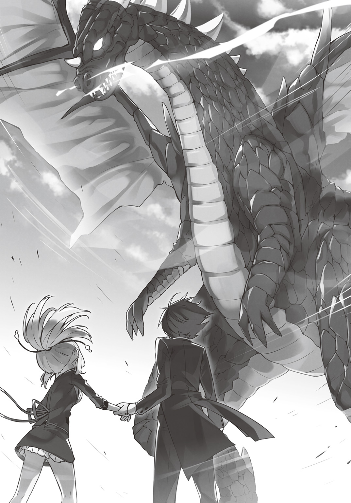
このままでは、もてなす以前に、意思疎通すらできないと、コロナが困惑した時、
『お待ちしておりましたドルグ様』
当たり前のように、レイアは神竜族の言葉で挨拶をした。
『なに!?』
「レイアさん!?」
コロナだけではない、傲慢な顔で見下していたドルグ公まで、驚きの声を上げる。
『き、貴様......なぜ、我らが一族の言葉を話せる！』
「レイアさん!? ドラゴンの言葉話せるんですか!?」
異口同音ならぬ、異口異音ながら、同じ意味の言葉で問いかける。
「ええ、ちょっとコツがいりますが。慣れれば簡単ですよ」
『簡単......だと......？』
ドラゴン族の言葉は、難解で解読不能なだけではない。
そもそも、特殊な発声器官によって紡がれる言葉であるがゆえ、人間の文字に直すことも、人間が発音することもできないのだ。
ならばどうやって商談を行っているかというと、人間側が二択の質問を繰り返して行っている。その光景は、さながら神にお伺いを立てる神官のようである。
それが、ドラゴン族と人間の通常の会話の光景なのに、レイアは当たり前のように、彼らの言葉を話した。
「ぐぎがごががが!! こんな感じですか？」
「違います。もっと朝、寝ぼけ眼でうがいをしているような感じで」
驚きに顔をこわばらせるドルグ公を余所に、当のレイアは、コロナに神竜族語のレクチャーをしていた。しかもかなり微妙な例えを用いて。
『ほら、こうするんですよ』
「できませんよ～」
だが、話しているのは間違いなく神竜族語である。
（な、何者だコイツ......！）
神竜族の誇りである一族の言葉を、下等な人間が使いこなせている事実は、驚きと同時に、ドルグ公のプライドを、すこし傷つけた。
『いい加減にしろ！ いつまで客を待たせる！ さっさと部屋に案内せい！』
「うひゃあ！」
怒鳴りつけるだけで、強い風が巻き起こり、コロナは飛ばされそうになるが、レイアは相変わらず、落ち着き払ったまま。
『これは失礼いたしました』
丁重にお辞儀をして、ホテルのロビーへ誘導する。
ホテルの宿泊客は大別して二種類存在する。
一般客と、ＶＩＰ客である。
ＶＩＰという響きから、「特別扱いされる存在」として、一般利用客からすれば、格差を感じることがあるが、本来は、逆なのだ。
一般客と同様に扱えば、一般客に迷惑をかける可能性のある客という者が存在する。
例えば王侯貴族。食事一つするだけで、暗殺の可能性があるため、調理場はおろか、他の客にまで敵意を向けた視線が向けられる。
これでは一般客は落ち着いて食事ができない。
もしくは有名人、著名人。熱狂的なファンや追っかけが押しかけては、騒がしくて、これまたやはり一般客はくつろげない。
そこで、こういった「特殊なお客様」は、あらかじめ別の場所で、別の対応を行う。
ただ、それだと「特殊なお客様」の方があまりいい気分になれないので、「ＶＩＰ」という言葉を使い、「あなたは特別なお方なんですよ」とすることで、双方角が立たないようにしているのだ。
そして、ドルグ公の場合は、まさにその意味でのＶＩＰ客であった。
なにせ全長二十メートルのドラゴンである。
一般客がいるロビーでは混乱が起こるため、入口も別の、専用ロビーに誘導。
さらに客室までのエレベーターも、専用のものを使用する。
ドルグ公は重さも桁外れである。重量およそ三十トン。
当たり前だが、一般エレベーターでは対応できない。
もはや資材搬入用の、重機と同じようなものが必要となるが、そこは「あらゆるお客様に対応する」をモットーとするギガントキャッスルである。
本来ならオーク族などの人間の倍以上ある体重の種族、その団体客用に使われているエレベーターを使用し、宿泊階まで誘導した。
そして――
「どうぞお入りください、ドルグ様！」
たどり着いたのは、四十階に位置する、スイートルームならぬ、ロイヤルスイートルームならぬ、ジャイアントスイートルームであった。
ワンフロア全てを一室として利用するという、最大級の客室。
総面積は３００００㎡、天井高３０メートルと、巨人族にも対応できる、部屋というよりも巨大宴会場といった方が近いサイズであった。
「どうです、いい眺めでしょう～！」
そして、壁は一面のガラス窓となっており、グランクルスの街並みを楽しめる、絶景となっている。
これならば、ドルグ公も満足してくれるに違いないと、この部屋を選んだコロナは、確信を持って案内した。
『フン、くだらん......』
だが、ドルグ公の顔は、人間では表情のわかりにくいドラゴン族ということを差し引いても、あからさまに不機嫌だった。
『我らは、貴様ら人間では到達できぬほどの天空を舞うのだぞ。こんな半端な高さの部屋など、むしろ窮屈に感じるわ！』
人間が到達できる高地は、せいぜい八千メートル前後と言われている。
対してドラゴン族は、一万メートル......中には二万メートルの上空を飛ぶ者もいるのだ。
彼らからしたら、確かに「半端な」景色だろう。
「あの......なんて言ってるんですか？」
「残念ながら、お気に召していただけなかったようですね」
「あうう～......」
レイアに通訳してもらったドルグ公の感想を聞き、自信満々だったコロナは愕然とした。
『そもそも、人臭い建物だ！ 気に食わんわ！』
ドルグ公の言う「人臭い」とは、人工物の香りというだけではない、人間の作ったものそのものが、不快感を覚えるのだろう。
「そんなこと言われたって......」
やはりレイアに通訳されて落胆するコロナ。人間の経営するホテルに泊まるのに、人間の匂いが気に食わないと言われても、それは無茶な話だった。
「無理もありませんね。コロナさん？ あなたは、犬小屋に泊まれと言われれば、どう思います？」
「そら嫌ですよ」
「つまりそういうことです」
実際は、ドルグ公の人間へのイメージはそれよりもさらに下回るのだが、いずれにせよ、彼の目線からすれば、人間種族のスイートルームでは、満足はできない。
『ドルグ様、申し訳ございません。すぐに、別の部屋を用意いたします』
『ふん！ 我を満足させる部屋など、あるのか？』
レイアの申し出に、意地の悪い顔を向けるドラゴン。
『はい、必ずや、ご満足いただけるかと』
それに、レイアはあくまで、冷静かつ沈着に答えた。
そして数分後――一同は場所を変える。
「あ、暑い!?」
思わず声を上げるコロナ。
そこは、巨大な洞窟であった。
「こ、ここ!? なんですか!?」
エレベーターに乗って、どこに移動するかと思ったら、やって来たのは地下二百メートル。
ホテル・ギガントキャッスルは、上にもデカイが、地下階もスゴイと知っていたが、ここまでの深さにこんな空間があるとは、知らなかった。
『こ、これは......!?』
驚くドルグ公。だが、その驚きは、ただいきなり洞窟に出たからというだけではなかった。
『この温度、湿度、そして岸壁に僅かに香るこのダマスカス鉱の臭い......これは......ガランシェル山麓のそれではないか!!』
驚いたのは、この地下洞窟が、ただ土を掘っただけのものではなく、ドルグ公の故郷と全く同じ環境であったからだった。
『ご自宅にお帰りになられたようにくつろいでいただきたく、手をかけさせていただきました』
『なんだと!? まさかこれが、作ったものだというのか！』
『はい』
自然の空間を、人工的に作るという矛盾をこなすことで、レイアはドルグ公が泊まるにふさわしい部屋を作り出した。
「あの～、なに言っているかよくわかんないんですけど、この洞窟って、もしかしてレイアさんが一人で作ったんですか？」
神竜族語がわからないコロナは、おそるおそる尋ねる。
「ええ、さすがにこの規模だと、一日仕事になりましたが」
「一日で作ったんですか!?」
地下洞窟の広さは、先ほどのジャイアントスイートルームと同じくらいである。
この規模の洞窟全てに、特殊な鉱石を埋め込んだり、岸壁に処理を施したりするなど、凄まじく面倒な作業である。
「ちょっと睡眠時間が減りましたね」
「ちゃんと寝れたんですか!?」
徹夜仕事にもなっていない事実に、コロナは驚く。
『ぐうぅう......なんということだ......この岩の配置、高さ......我の首のサイズにぴったりではないか......この短期間で、どうやって我の詳細なデータを......』
今すぐにでも横になってくつろぎたくなる欲求を抑えつつ、ドルグ公は悔しさに呻く。
誇り高き神竜族ともあろう者が、人間にもてなされるということは、精神的にも相手に屈服したことを意味する――少なくとも、彼はそう思っていた。
『だ、だが......足りんなぁ、これでは!!』
だから、なんとしてもいちゃもんをつけようと思案を巡らせた。
『確かに、部屋としてはそこそこのものだ、それは認めよう』
『恐縮です』
嫌味を込めた言葉にも、レイアは丁重にお礼を返す。
『だが、長旅に疲れた客をもてなす、大切なモノがない、わかるよなぁ？』
さらに、ドルグ公は、無理難題を仕掛ける。
『疲れた体を、湯船で癒やしたいと思うのは、当然であろう？』
「なんて言ってらっしゃるんです？」
レイアに通訳を頼むコロナ。
「お風呂をご所望です」
「なぁんだ」
それを聞いて、コロナは笑顔になる。
「お安いご用ですよ！ ギガントキャッスルにはお風呂がたくさんあるんですよ？ ミストシャワーやバブルバスまで、なんでもござれです！」
『ほう？』
この一カ月の間、せっかくなので、宿泊客の使用後に、各浴場をめぐりまくったコロナは、どんと胸を叩く。
なにせ、一カ月かけても回りきれないくらい、ギガントキャッスルの浴場は多種多様なのだ。必ずお気に召すものがあると思ったのだ。
だが――
『では、溶岩風呂もあるのだろうな？』
「溶岩風呂はあるかと聞いておられます」
ドルグ公の言葉を、素早くレイアが翻訳する。
「溶岩風呂......そんなのあったっけ？」
溶岩浴、というものならばある。
岩盤浴の一種で、熱した溶岩石を用いる、一種の蒸し風呂である。
汗を流すと同時に、溶岩石の中のミネラルが体内に取り込まれ、健康にいいのだ。
「この場合の溶岩とは、そのままの意味ですね」
「そのままって......マグマのことですか!?」
だが、レイアの注釈を受け、コロナは声を上げた。
「マグマになんて入ったら、死んじゃいますよ！ 溶けちゃいますよ！」
「落ち着いてくださいコロナさん。ドラゴン族の方々には愛好される方もおられるんです」
雷や炎すら己が力に変えて取り込むといわれるドラゴン。
彼らからすれば、１０００度に至る溶岩すら、人間にとっての「ちょっと熱めの風呂」程度のものなのだ。
「そんなもの......ありました？」
ギガントキャッスルの浴場は、一カ月かけても回りきれるものではなく、まだコロナの知らないものもあるのだが、その中にマグマ風呂などあったかと、彼女は戸惑った。
「いえ、ありません」
「ですよねぇ......」
さすがにそこまではフォローしていなかったらしい。
「だから今から作ります」
「はい!?」
なにを言っているのかわからないコロナに、レイアはマントを渡す。
「それを頭からかぶって、全身を覆ってください。炎神の加護がかけられているので、１０００度くらいまでなら耐えられるはずです」
「すいませんレイアさん、なにを言ってるんですか？」
「それと、洞窟の入口まで離れて。噴き出しますから」
「なにが噴き出すんですか――ってまさかぁ!?」
なにをしようとしているのかはわからなかったが、なにが起こるかは察しがついた。
コロナは大慌てで、言われたとおりに、入口まで走った。
「ええっと......ここらへんですね」
そうしている間にも、レイアは、洞窟の地面を探り、当たりをつけると、そこに向かって、腕を振り上げ、拳を叩き込んだ。
「うわぁっ!?」
『な、なにを――!?』
洞窟全体を揺るがすような地響きを起こすほどの剛拳が炸裂する。
しばしして、ピシピシと、ひび割れるような音が聞こえたかと思うと、地面に亀裂が入り、噴き上がってきた、マグマが。
「う、うわぁあああ!?」
思わず叫ぶコロナ。
ドロドロに溶けた溶岩である。
その熱さたるや、直接体にかかれば一瞬で人体を溶かす。
そうでなくとも、洞窟内の温度は一気に、人間では耐えられない高さにまで上がった。
「あ......暑い......ってか熱い！」
レイアから渡された、炎神の加護を施したマントがなくば、焼け死ぬ前に、熱された空気に触れただけでコロナの体は燃えていただろう。
いや、それ以前に、その空気を吸っただけで、喉と肺を焼かれ、窒息死していた。
『な、なんということを......!?』
噴き出すマグマは、洞窟内にマグマだまりを作り出す。
それは、ドルグ公が浸かるには最適な大きさだった。
『どうでございましょうドルグ様、今回は特別に、個室風呂を作らせていただきました』
噴煙の中、悠然と立つレイア。
「な、なんで生きてるんですか!?」
マグマの噴出口にいたはずなのに、火傷はおろか、レイアは着ている服さえ燃えていない。
「コツがあるんです」
「その一言で全てを片付けないでください！」
人間離れをしているというよりも、人間に近い部分を探すほうがむずかしいホテルマンであった。
『こ......個室風呂だと......貴様、これで我に勝ったつもりか！』
今にもゆったり浸かり、鼻歌の一つも奏でたくなる感覚に襲われるドルグ。
だが、その豪快にして繊細なサービスも、人間を見下す彼にとっては、己を誘惑する悪魔の所業に等しかった。
『ドルグ様......思い違いをされているようなので、申し上げさせていただきます』
そんなドルグに、なおもレイアは、丁重に言葉を返す。
『わたくしは、勝ち負けで仕事などしておりません。常に、お客様に満足していただくことこそ我が歓びでございます』
『ぬかしよる......！』
しかし、その丁重さも、ドルグの神経を逆なでする結果にしかならない。
『我を必ず満足させる......その言葉、決して翻すまいな？』
『当然にございます』
『ならば......我のリクエストを聞いてもらおう......』
ニタリと、ドルグは笑った。
彼はもともと、人間のホテルで満足のいくサービスなど、求めてはいない。
彼が欲しているのはむしろその逆。
「神に最も近き種族」たる自分を、ろくにもてなすこともできず、慌てふためき許しを請う憐れな下等種族を見ることこそが目的なのだ。
だから、彼は難題を突きつけることにした。
『旅の楽しみといえば食事だ、そうだな？』
『おっしゃるとおりでございます』
ギガントキャッスルは、ドルグの来訪に備え、ミスリル、ダマスカス、アマルガム、ダルニシウム、などなどの竜族の主食たる各種鉱石を取り揃えていた。
どれもこれも折り紙つきのレアメタル。
しかも高純度であり、バイヤーが「食べるために使うなど」と、泡を吹いたほどである。
『我は前から食いたいと思っていたものがある.........それを用意してくれ』
『それは......どのようなものでございましょう？』
『白い、白くて四角いものだ。雪よりもなお白い......』
『なんという名前のものでございましょう？』
曖昧な情報の提示に、さしものレイアも尋ね返す。
『知らぬ』
『ほう？』
しかし、その返答は、さらに謎を呼ぶものだった。
『だが用意できるはずだ。我はかつて、ある人間にそれをもらった。ならば、お前たちにも用意できるはずだ』
白くて四角い、名前もわからぬもの。
あまりにも無茶苦茶な要求である。
そもそも、そんなものがあるのかどうかも疑わしい。
『かしこまりました』
だが、レイアは断らなかった。
さも当たり前のように一礼し、ドルグのリクエストを受け付けた。
『腹の立つ男だ......』
そんな姿すらも、ドルグはさらに苛立っていた。
「どうなっているのかね！」
ドルグ公の客室を出てしばし後、コロナは、最高経営責任者――社長のホウオウに、これまた苛立った声で問いただされた。
「どうなっていると言われましても......」
ここは、ギガントキャッスルの従業員エリアにある、資料室。
古今東西の、あらゆる書物が並んでいる。
「ドルグ様が、白くて四角いものをご所望なんですよ」
「そんなことはわかっている！ それがなんなのかわかったのかと聞いているのだ！」
机の上には、「大陸料理全集」「珍料理百選」「グランクルスグルメガイド」などが山積みになっていた。
「いえそれがまったく」
「それがまったくではない！」
ヒステリックに声を張り上げるホウオウ。
リクエストに応えることができなければ、へそを曲げたドルグ公は、今回の人間種族との商談をご破算にしてしまう可能性がある。
そうなれば、責任はホテルに降りかかり、評価はガタ落ち、客数激減に繫がる。
「ホテルにとって、客数が下がるとはどれだけ恐ろしいことかわかるか？ 宿泊業とは、ただ部屋を提供することではない、使われなかった部屋にも、経費と人件費がかかる！ 客が入らないということはその分の維持費管理費がマイナスとして計上されるのだ！」
それゆえに、「客室とは生鮮食品である」と言ったホテル経営者もいるくらいである。
「このギガントキャッスルはデカイ！ クソデカイ！ ただでさえ、その無駄をなくすために日頃私がどれだけ砕心してるか！ その努力が全てふいになるかもしれんのだぞ！」
「わかってますよ、だからなんとかしようとしているんじゃないですか」
まくし立てるホウオウに、コロナは耳を塞ぎながら答える。
「わかっとらん！ わかってたらもうちょっと慌てろ！」
「わたしが慌ててなんとかなるなら慌てますけど、なんともならないでしょ！」
入社一カ月目の見習い従業員が右往左往してどうにかなる事態ではない。
「確かに。キミごときが慌ててもなんにもならんな」
「あ、納得された」
ピタリと言葉を止め、冷静になるホウオウを見て、それはそれで腹立つなぁと、コロナは思った。
「この状態で一番慌てなければならん奴はどこ行った！ トゥールマンはどこだ！」
ドルグ公の接待の担当であるチーフコンシェルジュの姿が、どこにもなかった。
「レイアさんだったら、ちょっと用事を思い出したと言って、どっか行っちゃいました」
ドルグ公のリクエストを承った後、姿が見えなくなった。
「どっかってどこだ？」
「わかりません」
「役に立たんなキミは！」
「ひどい言い方するなぁ......」
敏腕のつもりはないが、面と向かって「役立たず」と言われれば、さしものコロナも不機嫌になる。
「コロナちゃん、労組に訴えよう」
「あ、リディア」
「ひょええええっ!?」
ひょこんと、まるで最初からそこにいたように現れるリディアを前に、ホウオウは弾かれるように後ずさった。
「違うんだリディア、私は......」
「言い訳は聞かない」
真っ青な顔で汗をダラダラかきながら釈明するホウオウだったが、リディアは耳を貸さない。
「んで、どうするの？ ドルグ公に出す料理」
「う～ん......手がかりが少なすぎるんですよね」
白くて四角いものと言われても、雲をつかむような話である。
それこそ、りんごを、皮を剝いて賽の目に切れば、「白くて四角いもの」だ。
「人間が作ったものってところに、ヒントがあるのかなぁ......」
調理された結果としての「白くて四角い」のだとしたら、それはそれで逆に見当がつかない。
「まったく、役に立たんヤツだ」
「じー.........」
「いやまぁ、わからないのはしょうがないよね、ウン！」
またしても嫌味を言おうとして、リディアに睨まれるホウオウ。
「とはいえ、このままではドルグ公がご機嫌を損ねる。そこで私が用意した」
そう言うと、ホウオウは傍らに置いていたケースから、何かを取り出した。
「うわぁ......これ......なんです？」
「ホワイトミスリルの結晶体だ。ここまでの純度の単結晶はそうはないぞ」
ミスリルとは、世界で最も有名な希少金属とも言われており、銀の輝きと鋼の強さを兼ね備えた物質である。
破邪の力を備え、清き力を増幅させる効果を持つ。
「これがミスリル？ こんな白かったですか？」
コロナは以前、帝都の騎士がミスリル製の鎧をまとっているのを見たことがあるが、もっと鈍い色合いで、ここまでの輝きは持っていなかった。
「言っただろう、これはホワイトミスリルだ。不純物を０．００１％未満にまでしたものだ」
鉱脈とされる場所でも、ミスリルはほんのわずかしか採れない。
しかも大半は岩中に混じってしまっている。
近年になって、多くの錬金術師が研究の果て、原石から抽出する技術を開発したことで、ここまでの純度のものができたのだ。
「ここまでの純度だと、同じ重さの黄金より高いぞ」
「ふえええ～!?」
ホウオウが持ってきたのは、五キロ程度のミスリルのインゴットである。
これ一つで、コロナの年収十年分に匹敵するであろう。
「どうせあのドラゴン、今まで岩混じりのミスリルしかかじってこなかったんだろう。これを出せば一発だ」
「う～ん」
自信満々なホウオウに比べ、リディアは不審そうに首をひねっている。
「そんな、簡単な話かしらね」
ともあれ、コロナたちは、用意したホワイトミスリルをドルグのもとへ持っていくことにした。
「あれ、社長さんもついてくるんですか？」
台車に載せて運ぶコロナの後を、ホウオウもついてきた。
「無論だ。キミが盗んで逃げ出さないとも限らん」
「ホント、アンタって性格悪いわね」
コロナとともに、台車を押していたリディアが、呆れたように言った。
「当然のことだ」
ムスッとした顔で、ホウオウは返す。
エレベーターを降り、再び、地下洞窟の特別室へ向かう。
「おっと、これ着なきゃ」
慌てて、炎神の加護のこもったマントを取り出す。
「む？ なんだそれは？」
「この先、マグマ風呂とか作っちゃったんで、温度すごく高いんです」
そこまで言ったところで、ホウオウの分のマントがないことを思い出す。
「そうだ！ ドルグ様のお部屋、人が入れる温度じゃないんです！ 一旦戻って、同じものがないか探してきます！」
「くだらん」
だが、そんな彼女の言葉に、ホウオウは眉をひそめる。
「ほれ、これを使え」
そして、懐から一枚の御札を取り出した。
「その護符は耐熱の力がある。二千度くらいまでならば問題ない」
「な、なんでこんなの持ってるんです!?」
炎神の加護のマントを遙かに超える耐熱能力を持った札を前に、コロナは驚く。
「どうでもいいことだ。そもそも客の前でマントをかぶるなど、無礼にも程があるだろ。トゥールマンはどんな教育をしているんだ。まったく！」
ブツブツ言っている間に、エレベーターの扉は開いた。
「ホントだ......全然熱くない......」
御札の効果は本物であった。
すでに灼熱地獄と化した客室の中に入っても、汗一滴流れない。
『来おったか......我の要求には応えられたのであろうな』
「――って言ってるよ」
レイアがいないのでは、ドルグとの意思疎通がむずかしいと思ったが、彼の言葉を、リディアは正確に翻訳した。
『なに!? 貴様も我らが一族の言葉を解するのか......？』
一日に二人も、誇り高き一族の言葉を理解され、ドルグは驚く、が――
『いや、違うな......貴様は、音とは違う方法で我の声を聞いている......？』
「まぁいろいろ事情がありまして」
『フン、けったいな者どもを飼っておるホテルだ......』
人を喰ったような笑顔で答えるリディアに、ドルグは鼻息を一つ吹いた。
「お待たせいたしましたドルグ様～、いやぁ、苦労いたしました。方々手をつくしましたが、おそらくこれで間違いないかと.........」
「うわぁっ!?」
コロナを押しのけ、ゴマすり顔のホウオウが言った。
『ほう、それが我が望みしものか......』
「――って言ってる」
興味深そうに首を伸ばすドルグ、の言葉を翻訳するリディア。
「はい、これならば間違いなく！ お気に召していただけるかと！」
ふぁさっと、台車にかけられていた布を取って、その下にあるホワイトミスリルを見せる。
『む.........？』
途端に、ドルグの顔が不機嫌になる。
『これが......本当に......我が望みしものだと......？』
「――って言ってる」
「はい～、それはもう！ 白くて四角くて......完璧でしょう？」
しかし、ドルグの表情の変化に気づかないホウオウは、変わらず調子よく舌を回した。
『ふざけるな』
「――って言ってる」
激怒したドルグ、口を大きく開き、凄まじい炎の息を放った。
「のああああっ!?」
一瞬で火炎に包まれ燃え盛るホウオウ。
悲鳴を上げながら、右に左に走り回る。
「社長さん!? 大丈夫ですか！」
「あっつ！ あっつ！ あっつ」
ホウオウが持つ護符は、コロナに渡したものと同じ、耐熱上限は二千度。
ドルグの炎の息は、それをちょっぴり上回っていた。
『痴れ者が！ それはただのミスリルであろう！』
「――って言っている」
『石と岩を糧とする我らが、そんなことわからぬわけはなかろう！』
「――って言っている」
ドルグが激怒するのも無理はない話であった。
ドワーフ族よりも金属に熟知している彼らが、一度口にしたものがミスリルならば、そうと理解し、最初から「ミスリルを持って来い」と言っている。
それが鉱物の類ではないからこそ、ドルグは「わからない」と言ったのだ。
ホウオウの行動は、グルメを自称するものに、「あなたが食べたことのないものを持ってきましたよ」と、なんのへんてつもない塩粥を出したようなものだ。
「ホウオウのばーかばーかって言っている」
「それホントに言ってるのか!?」
もののついでとばかりに、翻訳のふりをして失態をからかうリディアを、ホウオウは突っ込む。
「だ、大丈夫ですか社長さん......？」
「くそう、自慢のスーツが......オーダー品なのに......」
「スーツが焦げた程度ですんじゃうんだ......」
レイアといいホウオウといい、なにげに化け物揃いのホテルスタッフだった。
『............！』
そうしている間も、ドルグは怒りが収まらぬのか、ホウオウに――というよりもホテルにとどまらず、人間そのものに怒りをぶつけ始める。
『これだから人間どもは！ いつも貴様らはウソを吐く！』
「――って言ってる」
それを丁寧に翻訳しているリディアだったが、ドルグがふと、罵っていると思われる口調を止め、次に発した言葉を聞いて、驚いたような顔になる。
「『白くて四角いもの』のことで、何か思い出したの？」
「え！」
激しい怒りで記憶が呼び覚まされたのか、新しい手がかりが現れた。
「それは......はぁ......ええ～？」
しかし、ドルグからそれを聞いたリディアは、首をかしげている。
「どうしたのリディア？」
「う～ん......その白いものってね......お肉なんだって」
「お肉ぅ？」
白くて四角い――肉。
新しい手がかりが現れて、さらにわけがわからなくなった。
『さっさと出て行け！ 次に我を欺くようなことをしてみろ、我は住処であるガランシェルに帰る！』
「――だって」
その言葉を最後に、ドルグは「ふんっ！」と不機嫌そうに息を吐くと、そっぽを向いて体を丸めてしまった。
白くて四角い肉......さらにわけのわからなくなった話に、コロナたちは戸惑うばかりだった。
「考えてみりゃ、ホワイトミスリルって、精製法が確立したのここ数年だしね」
呆れたようにつぶやくリディア。
「ドルグ様の口ぶりだと、かなり昔の話っぽいしね」
はぁとため息をつくコロナ。
「くっそう、あの大トカゲめ！ 無理難題言いおって！」
そして、スーツだけでなく、髪もちょっと燃えて、ぶつぶつと恨み言をつぶやくホウオウ。
「くそう、ラティラ、ラティラ、ラティラ......」
さらに、なにやら珍妙な呪文のようなものまで唱え始める。
「なにつぶやいているんですか？」
「ん、知らんのか？」
尋ねるコロナに、ホウオウは説明する。
「その昔、暴れて人里を荒らしたというドラゴンを倒した勇者の名だ。これを唱えると、悪いドラゴンはどこかに逃げてしまうという」
陰口とはいえ、客を追い払おうとしている、ホテル経営者としては如何なものかと思わざるを得ない言動であった。
「それって、ドルグ様のことなんでしょうかねぇ？」
「さぁな、だがドラゴン種はそう多くない。同一人物......もとい、同一ドラゴンでも、不思議ではなかろう」
ドラゴン族の寿命は、高位の者になればなるほど長くなる。
神竜族となれば、一万年を超す者とて少なくはない。
「もしかして......昔人間にひどい目に遭わされたから、あんな人間嫌いになったのかなぁ」
ドルグの口ぶりは、ただ種族の誇り高さだけで、人間を見下しているのとは違うように思えた。
「どういうことなんだろ......〝人間はみんな噓つきだ〟って......」
ドルグは、人間への無理解から人間を嫌っているのではない。
人間を知り、その上で、人間を嫌っている。
「そんなこと気にしていても意味はなかろう」
「意味はありますよ。だって、『白くて四角い肉』は、人間が作ったものだって、言ってたじゃないですか？」
人間を嫌っているドラゴンが、食べたいと願う、人間の作ったもの――
「そりゃキミ......ん、もしかして......」
なにを思いついたのかホウオウが言葉を止め、コロナを見つめる。
「な、なんですか......？」
嫌な予感がして、思わず体をこわばらせる。
「嫌いなものなのに、食べたがる......肉......確か、ラティラの伝説は、生け贄を求めた悪竜が懲らしめられる話でな」
「待ってください。なに考えているんです!?」
嫌いと言っても、それは相手の人格、意思を持つ者として嫌っているという意味であり、食べ物として嫌っている......というわけではない。
「まさか人肉だとでも言うんじゃないでしょうね!?」
「可能性としては、それが一番しっくり来る！」
「し、白はどうなるんですか!?」
「古来より、若い女性に〝白い肌〟と言うだろ」
「四角じゃないですし!?」
「そりゃカッティング次第でどうとでもなる」
もしかしてそうかな～と思っていた考えが、どんどん形をなし、現実味を帯びていく。
「もしそうだとすると......ふむ.........」
「待ってください!? 生け贄になれなんて言うんじゃないでしょうね！」
「バカを言うな！」
命の危機を感じ始めたコロナだったが、ホウオウはそれを毅然とした態度で否定した。
「たとえ当ホテルの危機であったとしても、それが見習いであろうと、従業員の命を犠牲にするつもりはない！」
「おおっ！」
今まで嫌味で口うるさく、強い人には弱い陰険な社長だと思っていたホウオウの、意外なまでの毅然とした姿に、思わず感心する。
「だが――」
と、思ったら。
「片腕くらいならなんとかならんか？ 一応それでリクエストに応えたという形にはなる」
「アンタ、最低だな!?」
感心して損したと、コロナは社長を相手に容赦なく突っ込んだ。
「いいじゃないか！ 腕の一本や二本！ 死にゃあせん！」
「じゃアンタが切り落とせー！」
「そうだ、もしくはその胸にある無駄にデカイのを使え！」
「セクハラだー！」
コロナとホウオウ、社長と従業員という立場の違いも無視して、怒鳴り合う。
「だーめだこりゃ」
混乱の一方となっている両者を前に、リディアがため息を吐いた時、その男は、ようやく帰ってきた。
「おや、なんの騒ぎですか？」
「遅いわよ、レイア」
ちょっと用事があると言って、姿をくらませていたレイア・トゥールマンであった。
「トゥールマン！ キサマどこに行っていた！」
「レイアさん！ この人なんとかしてください！」
二人揃って、レイアに摑みかからんばかりに迫るが、彼の手に持っているものを見て、動きを止める。
それは、両手で抱えられる程度の、箱であった。
「な、なんだ、それは......？」
問いかけるホウオウに、レイアは答えた。
「ええ、ドルグ様がお求めのものです」
言いながら、箱を開ける。
その中にあるものを見て、コロナとホウオウは、驚きの声を上げた。
「これが......白くて、四角い、肉......？」
三度、ドルグにいる地下洞窟に向かうレイアとホウオウ。
「知らんぞ......そんなもん見せて、炎でも吐かれたらどうする」
ホウオウはあくまで、レイアが持ってきたものに懐疑的であった。
「まぁキサマなら殺しても死なんだろうが......」
ぶつぶつと言っている間に、エレベーターは地下に到着、扉が開く。
『懲りずにまた来たか......念のために言っておくが、これが最後の機会だぞ』
不機嫌極まりないドルグ公が、睨みつける。
『お待たせしてしまい、まことに申し訳ありませんでした』
だが、そんな鋭い眼光もどこ吹く風で、レイアは落ち着いた所作で、ドルグの前に、持ってきた「白くて四角い肉」を見せる。
『そ、それは......!?』
それを見て、確かに、ドルグの目が見開かれた。
そこにあったものは、間違いなく、白くて、四角いもの――豆腐だった。
『大豆を搾って出た豆乳に、海水由来のにがりを加えることで凝固させた食品です』
豆腐――大陸では、おもに西方で作られているものである。
あまり一般的ではないが、近年、健康にもいいということで、帝都では庶民から貴族まで広く愛好する者のいる食品である。
『な、なんという......』
わなわなと、巨体を震わせるドルグ。
「だーから言っただろうがトゥールマン！ こんなのお求めなわけがないだろ！ 豆腐食うドラゴンなんて聞いたことない！」
たまらず、ホウオウが怒鳴る。
「そもそも、肉じゃないだろこれ!?」
ドルグは、「肉だった」と言ったのである。
「大豆は、畑の牛肉と呼ばれています」
大豆はタンパク質が豊富である。
「いいのかそれで!?」
突っ込むホウオウであったが、一方ドルグは、震えながらも、信じられないものを見るように、レイアを見つめる。
『食べて、いいか？』
「――だそうです」
「え？」
レイアに通訳され、ホウオウは驚く。
『もちろんでございます』
レイアの返答を聞き、ドルグは震える指先を、豆腐に伸ばす。
レイアが手に入れてきた豆腐は、ただの豆腐ではない。
大きさは通常の数倍。とはいえ、二十メートルのドラゴンからすれば、小石にも満たないサイズ。
それをドルグは、大切に、宝物を扱うように、丁寧に手に取ると、ゆっくりと口に入れた。
『なんという......ことだ......』
もぐもぐと、しっかりと味わうように咀嚼する。
『間違いない......懐かしき、優しい味......なんということだ......』
「ど、どういうことだ......？」
信じられないという顔のホウオウ。
「神に最も近い」と言われるドラゴンが欲したものが、豆腐だったのだ。
『材料の吟味に、時間がかかりました。あとそのサイズだと特注になりますので、作ってくださる職人を探すのにも手間取りまして......お時間を取らせてしまい、まことに申し訳ありません』
『材料を、吟味だと......まさか......』
深々と一礼するレイアに、ドルグは震えながら尋ねる。
『はい、ラティラ様のおられた、キーブンの谷で取れた大豆と水で作っております』
『なっ――!?』
その一言は、この巨竜を、百年に一度あるかないかというほど驚かせた。
『キサマ......なぜ、知っている......？』
『来訪されるお客様......ましてやＶＩＰとしてお迎えする方です。こちらも相応の下調べを致します』
レイアは、ドルグ来訪を聞いた三日前から、ありとあらゆる下準備をしていた。
一日目は、溶岩風呂を作るため、ホテルの地下にあるマグマ溜まりの調査、並びに、その調査結果に基づいての地下洞窟の内装。
そして二日目は、ドルグに関する情報の徹底的な調査。
その上で、三日目に出迎えたのだ。
『わたくしめのご用意させていただいた豆腐、ドルグ様のご友人であらせられる、ラティラ様のものには遠く及ばないでしょうが......』
レイアは、すでにコロナが疑問に感じていた「人間はみんな噓つきだ」という、ドルグの言葉の真意も、突き止めていた。
それは今から、千数百年前の昔――
ドルグは、キーブンの谷の近くに住処を構え、日がな一日寝て過ごしていた。
そんなある日、近隣の村人が、迷い込んで来る。
村人は豆腐売りであり、毎日谷の向こうの里にまで、自分の作った豆腐を届けに行くのを習慣としていた。
「ひええええ!? ど、ドラゴンだぁあああ！」
ドルグの姿を見て、豆腐売りは、食われると思い腰を抜かす。
彼の姿を見て、ドルグはため息を吐いた。
放っておけばいつか去るかと思っていたら、錯乱したのか、豆腐売りは、自分が運んでる豆腐を差し出し、「どうかこれをやるから食わないでくれ」と言い出した。
ドラゴンは、人間たちが思うほど、人を食わない。
少なくとも、神竜族の間では、人間は「不味いもの」とされており、食べようと思うものなど、かなりのゲテモノ好きである。
とはいえ、豆腐売りの見せたそれが、妙に気になった。
白くて、みずみずしく、それでいて儚そうなその見栄えに、興味をそそられた。
試しに、口に入れてみたところ、美味かった。とても。
「美味いな」
あまりにも美味かったので、つい声に出してしまった。
「そうだろ？ 大豆は畑の肉なんて呼ばれてっからな。人の肉食うよりも、ずっといいぞ」
怪物と思った相手が、意思の疎通ができると知り、さらに、自分の作った豆腐を美味いと言ってもらえたことに、豆腐売りは喜んだ。
「珍しい物を食わせてもらった礼だ。キサマの願いを一つ聞いてやろう」
そう申し出たドルグだったが、豆腐売りは欲のない男だった。
目の前の存在が、望めば金銀財宝でもくれる者だとは、思いもしなかった。
「アンタ、空飛べるんだよな。アンタの背中に乗って、空を飛んでみたい」
と、無邪気な童のようなことを言い出した。
「むぅ――」
しかし、ドルグには少し困った話だった。
ドラゴンにとって、背中に乗せるのは、服従した相手か、友のみである。
「まぁいいか」
だが、目の前の無欲な豆腐売りを、妙に気に入った彼は、その願いを聞き入れる。
「いいだろう、そのかわりお前は、今日から我の友だぞ？」
そんなきっかけで、ドラゴンと豆腐売りは友だちになった。
豆腐売りは時折現れては、ドルグのために作った豆腐を食わせてやり、ドルグは豆腐売りを背中に乗せ、空を舞った。
その豆腐売りの名が、ラティラであった。
『ラティラは、我が生涯の中で、唯一の人間の友であった。だが、悲しいかな、人はすぐに死ぬ』
幾らかの例外はあるが、人が生きられるのは百年がせいぜい。
対して、神竜族のドルグの生は、万の年月をも超える。
『あやつが死んだ時、我は泣いた。初めてのことだった......だが同時に、それだけの思い出をくれたあやつに敬意を表し、我は人間どもと約定を交わした』
それは「ラティラの縁者には、決して危害を加えない」――というものだった。
『しかし、人間どもはその約定をねじ曲げた......我がラティラを恐れるがゆえに、ラティラの名を出せば我が退散するなどと......』
千年の時は、人間の間で幾代もの世代交代を呼ぶ。
正しき伝承はなされず、歪んだ形で伝わる。
『悪竜を倒した英雄だと？ ラティラはそんな男ではなかった。我もそんなことはしなかった。我らの友情を、人間どもは汚したのだ！』
それこそが、ドルグが人間を「噓つき」と呼ぶ理由であった。
『ドルグ様、キーブンの谷には、その後行かれたことはございますか？』
『行くわけがない』
大切な思い出を汚された場所に、ドルグは足を向ける気にはならなかった。
千年の間、思い出すことすら嫌い、ラティラがくれたものが、豆腐であるということすら忘れたほどだ。
『キーブンの谷では、ラティラ様がお亡くなりになられた季節に、竜寝祭というものが執り行われています』
それは、かつてドルグがねぐらとしていた谷に供え物をし、五穀豊穣を祈る祭りである。
『その祭りでは、その年取れた大豆を用いて作った豆腐を捧げるそうです。昔、この地に住んでいた、豆腐好きのドラゴンへのお供え物です』
『なんと.........？』
ドルグが嫌悪したように、彼の思い出は、歪んだ形で広がってしまった。
しかし、最初の場所では、谷を離れてしまった、人間の死に涙してくれたドラゴンが、いつ戻ってきてもいいようにと、伝統として残っていたのだ。
『ラティラは......昔、我に言った......「アンタはデカくて格好がいいなぁ」と』
地べたを歩く人間からすれば、空を舞うドラゴンは、さぞかし偉大な存在に見えたのだろう。
『だが今はどうだ。図体はデカいが、狭量な中身だ。全て決めつけてしまい、己を見直そうともしなかった......格好が悪いにも程がある』
ドルグがラティラに友情を感じたのは、彼が自分の持つドラゴンの誇りなどに囚われず、ありのままに接してくれたからだった。
『この変わり果てた我を、ラティラが見たとて、我と気づかぬやもしれんな......』
そんな風に接してくれる者がどれだけ尊いか、知っていたはずなのに、いつの間にかドルグ自身も「人間など」と口にするようになっていた。
己がかつての友の持っていた尊さを見失っていたことを、ドルグは悔いた。
『ドルグ様、僭越ながら申し上げます。世の中は、常に変わり続けます』
人も竜も、その常理からは逃れられない。
『ですが、そうそう簡単に変わらないものもあります。たとえ一見して、元の姿と違うものになっても、変わらず残り続けるものもあるのです。あくまで、個人的な経験からのものですが......』
『そういう、ものかな......』
ドルグが小さくつぶやいた時、エレベーターが開き、コロナとリディアが現れた。
「なんだキミら、どこに行ってた？」
別行動をしていたコロナたちに、ホウオウが問う。
「ええ、レイアさんがおとうふ持ってきたんで、せっかくだから一手間加えてみました！」
コロナは、帝都にて衛兵をしていたころ、収入が低かったこともあり、めったに肉など食えなかった。
「豆腐なら豆腐と言ってくれれば......自慢じゃないですけど、豆腐料理には自信があるんです」
豆腐は栄養があり安価でもあるが、やはりそれだけでは味が淡白で、何度も食べていたら飽きてしまう。
そこで、少しでも長く楽しめるように、様々な調理法を試したのだ。
「豆腐って、シンプルなだけに、いろいろと手をかけやすいんですよ」
「そうなのか？」
「四～五十種類くらいはあるんじゃないですかねぇ」
尋ねるホウオウに、コロナはなんとなくの数字を告げる。
「正確な数は把握していませんが、二百種類以上はあるそうですね」
そこに、レイアが解説を加える。
「多いな!?」
焼いても煮てもそのままでも食べられるし、肉にも魚にも野菜にも合う。
それが故に、バリエーションも無限大なのだ。
「豆腐を発酵させてチーズみたいにした山豆腐に、凍らせて乾燥させて水で戻した凍り豆腐、豆腐のステーキに、豆腐のフライ、枝豆をペーストにしたものといっしょに混ぜてビスケットと一緒に食べる豆腐ディップなんてのもありますよ」
運んできた台車の上には、様々な豆腐料理が並んでいた。
「わたしが一番お気に入りなのは、この揚げ出し豆腐です！ 豆腐に衣をつけてごまの油で揚げて、さっと煮たものなんですけど、とっても美味しいですよ！」
「これ全部キミが作ったのか？」
「調理班の人に手伝っていただきましたけどね」
呆れたような、驚いたような顔のホウオウに、コロナは胸を張って答えた。
『これは......我が食べてよいのか？』
「食べていいかと、おっしゃっています」
ドルグの言葉を、レイアが翻訳する。
「はい！ どうぞ、召し上がってください！」
満面の笑顔で答えるコロナ。
ドルグは、手を伸ばし、彼女のオススメの「揚げ出し豆腐」を口にする。
『これは......なんという......優しき味よな。美味いな......』
「――と、おっしゃっておられます」
「よかった！」
その反応を前に、コロナはさらに笑顔になった。
「やっと、喜んでいただけました......」
ドルグはギガントキャッスルに来てから、ずっと不機嫌な顔をしていた。
人間嫌いの彼にとって、人間のホテルに泊まるなど、苦痛でしかない。
だから、コロナはなんとか喜んでもらえないかと思い、ようやく、それが果たせたことが、嬉しかったのだ。
『あれだけ粗暴に扱ったのに、なおも我を喜ばせようとしていたのか、この娘は』
ただ純粋に、自分が喜んだことを喜ぶコロナの姿を見て、ドルグの目が細まる。
『トゥールマンといったか、キサマ』
『はっ』
『確かに、変わったように見えて、変わらぬものだ。おぬしら人間も......この娘、どこかしらラティラに似ておる。能天気なところなど、特にな』
そう言って、ドルグは、ギガントキャッスルに来て初めて、嘲笑ではなく、愉快そうに笑った。
「ドルグ様はなんとおっしゃっておられるんですか？」
「え～っと......」
神竜語のわからぬコロナは通訳を求めるが、どう訳したものかと、レイアは少し考える。
「褒めてくださっているんですよ。あなたをね」
少なくとも、そんなに間違ってはいない翻訳を伝えた。
翌日――宿泊を終え、ドルグはギガントキャッスルをチェックアウトした。
『世話になったな、人間ども。此度は我の負けだ。満足させてもらった』
出立の前、見送りに立つレイアたちに、ドルグは言う。
『ドルグ様、先日も申し上げましたが、わたくしどもは勝ち負けでお客様をもてなしてはおりません』
『そうだったな』
レイアの返答に、ドルグは「ふふ」と、鼻を鳴らして笑う。
「ドルグ様、またいらっしゃってください！ お豆腐料理って他にもいっぱいありますから！ もっと楽しんでいただけると思います！」
同じく見送りに立つコロナが言う。
「ああ、そうさせてもらう。おぬしにも世話になった」
「いえいえ、こちらこそ......あれ？」
言われてから、コロナは首をひねった。
「ドルグ様、あの......人間の言葉を......？」
下等な種族の言葉など使わぬと、人語を理解しながら、あくまで神竜語で話していたドルグが、人間語を話した。
通訳を解するのでは伝えきれぬ、感謝の思いを表すため、であった。
「ありがとうございます！」
その真意を理解したコロナは、改めて、深くお辞儀をする。
「そうだ、娘よ、これをやろう」
そう言って、ドルグは小さな石を、長い尻尾を使い、コロナに渡した。
「これは......なんでしょう......？ キレイ......」
琥珀色に輝く、美しい石であった。
「ナーガジュエルですね。ドラゴン族のみが生成できる、超希少な金属です」
輝きに目を奪われるコロナに、レイアが説明する。
これこそが、ドルグが人類との商談で取引されるものであった。
金属というよりも、それはもはや宝石である。
「これ一つで、城一つ建ちますよ」
「うえええええ!?」
ホワイトミスリルの価値もものすごいものであったが、それを遙かに凌駕する。
彼女の年収では、来世の分まで持ってきても買えない代物だろう。
「チップだ、受け取れ」
「ち、チップって!?」
城一個建つほどの宝石。
これがあれば、一生食いっぱぐれることはない。
ホテル仕事なんて辞めて、改めて騎士を目指す人生を生きられる。
「うう.........」
手の中の琥珀の輝きを目の前に、コロナはわずかに考えるが、決意したように声を上げた。
「き、騎士道百箇条その五！ 騎士とは、法を守護するものなり！」
精一杯のやせ我慢で、ナーガジュエルを突き返した。
「と、当ホテルは、チップ制ではございません！ ゆえに、これは受け取れません！」
見習いではあるが、コロナは騎士としての誇りを持つ。
そして見習いではあるが、今はホテルマン。
ならば、ホテルマンとしての法に従い、受け取るわけにはいかなかった。
「そ、それに、レイアさんがもらってないのに、わたしだけもらうわけにはいきませんし......」
地下洞窟の客室も、溶岩風呂も、豆腐の調達も、全てレイアの仕事である。
「せっかくのお気持ち、申し訳ありませんが......すいません！」
良かれと思ってくれたものを拒むことに、強い負い目を感じながら、コロナは震える。
「ふむ......ふふふ......」
しかし、ドルグはそんなコロナの姿すら愛おしむように笑った。
「その男はもう持っているようなので、いらぬと思っただけなのだがな」
「へ？」
ドルグの言っている意味がわからず、不思議そうな声を上げる。
「いいから取っておけ。人間たちがどれだけの価値を見出しているかはわからぬが、それらは我にとってはゴミに等しい。それとも、このホテルの従業員は、客から『ゴミを捨てておいてくれ』と手渡されても、断るのか？」
本人がゴミと言っているものならば、たとえそれが万金の価値を持っていたとしても、受け取ることに支障はない。
「え～っとぉ.........」
「受け取っておきなさい」
なおも悩むコロナに、レイアは言うとおりにするよう勧める。
「いずれあなたの役に立つものです」
「そうなんですか......？ えっと、じゃあ、あの......ありがとうございます！」
上司からの許可も得て、コロナは丁寧にお礼のお辞儀をした。
「さて、では我はこれにて......さらばだ、またいずれ、訪れさせてもらうぞ」
そう言うと、ドルグは巨大な体に見合う、巨大な翼を広げ、舞い上がる。
「またのお越しを、お待ちしております！」
天空の支配者のように空を舞っていくドルグに向かって、コロナはありったけの大声で告げた。
ドルグ来訪を終え、コロナは従業員食堂で、しばし体を休める。
「はぁ～、疲れた。でもドルグ様が満足してくれて、ホッとしたよ」
「よかったねぇコロナちゃん」
彼女の前にいるリディアも、微笑ましそうに応える。
「それにしても、こんな高いものもらっちゃってどうしよう......う～ん」
城一つ建つと言われる宝石を前に、嬉しいが、同時に困った顔になってしまう。
「ドルグ様はゴミみたいなものだって言ったけど、やっぱ申し訳ないなぁ」
「そうでもないわよ」
困った顔のコロナに、リディアは言う。
「ナーガジュエルって、ドラゴンにはホントに価値のないものなの。むしろ、当人たちからしたら、人間がなんでありがたがるのか不思議に思うものなんだって」
「どういうこと？」
「んっとね、それって、ドラゴンの体内で、いろんな鉱物が溶けて、そこに竜の体液が混ざって、固まるものなんだって」
「真珠みたいなものなのかな？」
真珠は、特定の種類の貝が、体内で体液を固め、宝石のような輝きを持つ物質を形成したものだ。
「ん～......どっちかっていうと、結石かな？」
「やなこと言わないでよ～」
結石とは、腎臓内にたまった不純物にカルシウムが付着しできるもので、偏った食生活をする中年男性が主になると言われるものである。
ちなみに、これが尿管に詰まると、地獄の苦しみを味わう。
「でも確かに、結石だって言われたら、ドルグ様たちからしたらゴミみたいなもんよね」
複雑な顔をするコロナ。
もしかして、神竜族が人間を見下しているのも、自分たちの結石をありがたがっているからかもしれない。
「でも、そのナーガジュエルってね、少なくとも人間種族には特別なものなのよ」
「そりゃあ、由来はともかくとして、こんなキレイだったら、城一個分の価値もわかるけど」
「そーじゃなくてね」
少しだけ、リディアは感慨深い顔になっている。
「ナーガジュエルはね、その昔、騎士たちが武運を願い、自分がまとう鎧の左胸の部分につけたそうよ」
左胸――心臓の上を守る、鎧の最も重要な防御箇所である。
ナーガジュエルは、鋼鉄はおろか、ミスリルよりも硬い。
「でもね、ただ装甲代わりにしたわけじゃないの。騎士の魂は、この石のごとく輝いているという、己を鼓舞する証でもあったんだって」
「へぇ～......それは、知らなかったなぁ」
「古い時代の騎士たちの習わしだったそうよ。ああ、ただ、このホテルが、巨人砦と呼ばれていた頃に、やっていたヤツがいたわね」
「どんな、人だったんですか？」
騎士に憧れ、騎士を目指したコロナには、興味をそそられる話であった。
「バカな男よ」
それだけつぶやいたリディアの目は、どう見ても、十かそこらの少女には、見えない、深い何かを宿していた。
そして、その日の夜――
ギガントキャッスル四十二階に位置する、スカイバーラウンジ。
古今様々な名酒を味わえ、一流のバーテンダーを擁するこの場所は、大人の宿泊客の、憩いの場として愛されている。
邪魔にならない程度のバンドの演奏が漂う店内、夜景を見下ろせるカウンター席に、レイアとホウオウはいた。
「まったく、ヒヤヒヤさせおって、キサマは」
終わってしまえば、全てレイアが問題を解決した形。
ヒステリックに騒ぎ立てたホウオウは、髪を焼かれただけだった。
「申し上げたはずです。相手がどなた様であろうが、私のすることは、もてなし、笑顔でお帰りいただくことだと」
レイアは有言実行したまで。そして、全てが丸く収まった。
「ふんっ」
それが、ホウオウには気に食わない。
彼を嫌っているというわけではない、むしろ長年の戦友として、信頼さえしている。
それでも、レイアの落ち着き払った仕草が、時に苛立ちを感じさせるのだ。
「あの娘......コロナ・ローエンライズか？ あいつだったんだな、あの男からの紹介状を持ってきたのは」
なので、少し意地の悪い話を振ってみることにした。
「......ええ」
僅かに、レイアの返答は遅く、それを見逃すホウオウではない。
「大変だな、その娘も。騎士になるはずだったのに、流れ流れてホテルマン見習いか」
挑発するようにグラスを取り、わざとらしく氷を鳴らす。
「向いていない仕事をすることほど、苦痛なことはないからな」
「そんなことはありませんよ」
しかし、レイアはそんなホウオウの言葉を、そこだけは譲れないとばかりに否定する。
「彼女は、ホテルマンとして、最も必要なものをもう持っています」
「なんだそれは？」
「誰かのために、何かをしてあげたいと思う心です。それだけは彼女は一級品ですよ」
コロナは、自分にホテルマンとしての才能がないのでは、と不安になっていた。
しかし、それこそとんだ思い違い。
彼女は、とうの昔に一番大切なものを、それこそ、教えて身につくものではない「ホテルマンの才能」ともいえるものを、とっくに持っているのだ。
レイアは自分の胸ポケットに手を入れながら、ポツリとつぶやく。
「そして、騎士としても最も大切なことです」
その、左の胸ポケットの中には、琥珀色に輝く、竜のみが生み出せる石が入っていた。
「ふん！」
つまらなそうにこぼすと、ホウオウはグラスを呷る。
「それにしては、まだまだ頼りなさそうだがな」
「まぁ、いろいろと足りませんからね。経験も、知識も、技術も......あと体力と精神力と耐久力と判断力と応用力と洞察力も」
「足りないの多すぎないか？」
本人が聞いていたら、一旦褒められてから叩きつけられた分、ダメージもひとしおな話であろう。
「そこらへんは、身につけようと思えば身につきますから。まぁ少々、厳しめに教えていこうと思っていますけどね」
「あの小娘に少しだけ同情する」
そう言って、肩をすくめ、少しだけ楽しそうに笑うレイアに、ホウオウは呆れたようなため息を吐いた。
第三章 ホテルマンはお客様の家族
大陸を二分する大国家〝皇国〟と〝帝国〟――
双方は、五百年の長きにわたり戦いを続け、いつ果てるともなく、乱世は続くと思われた。
しかし、〝帝国〟に現れし、「千年に一度の鬼才」とさえ後世の歴史に記されることとなる〝覇王〟アンティルスの登場によって、情勢は一変する。
それまで、七度の〝帝国〟侵攻を食い止めてきた、〝皇国〟が誇る大要塞「巨人砦」。
その頑強にして堅固な大要塞を避け、〝皇国〟の首都を直接攻撃するという、大迂回作戦を立案し、それを成功させた。
いかに最強無敵の要塞と恐れられた「巨人砦」であろうと、仕えるべき主を失えば、そもそも戦う理由を失ってしまう。
最強の戦士たちは、戦わずして敗北を宣せられたのだ。
「なんてことだ――」
巨人砦を治める、〝四天王〟と称される男の一人、〝聖騎士〟はこぼした。
小さな声であった、だが、万感の悔しさを凝縮したつぶやきであった。
「やられたな、アンティルス――覇王め、まさかそんな手段を使うとは」
常のように冷静に、しかし、静かに憤りを含ませながら、同じく〝四天王〟の一人である、〝導士〟は言う。
「あのウラナリが！ 俺らとの戦いから逃げやがったか!!」
対して、怒りを全く隠すことなく、〝闘士〟は叫んだ。
「静かにせい。成ってしまった以上は仕様がない。で、これからどうする？」
憤慨する彼らを、〝魔女〟が不機嫌そうに諫めた上で、〝聖騎士〟に問うた。
「そうだな......」
すでに皇都は占拠され、皇王は降伏し、帝国より使者が訪れた後だ。
「即座の武装解除、砦の明け渡し......全面降伏の勧告だな」
使者がよこした書面には、そのように書かれていた。
「どうすんだ？」
〝闘士〟が、改めて尋ねた。
都は落ちた。
だが、巨人砦が落ちたわけではない。
誰かしらの皇族を奉じ、亡命政府を立ち上げ、徹底抗戦するという方法もある。
おそらく、帝国が最も恐れているのはそれだろう。
巨人砦の兵士は、せいぜい千人程度だが、どれも一騎当千の精兵揃いである。
さらには〝四天王〟の四人は、万夫不当――一人が一軍に匹敵する。
天下は帝国が統一した。
だが、その地盤はまだ危うい。
砦に籠もり、抗い続ければ、各地で残党が決起し、ほころびも生まれるかもしれない。
勝算は、ゼロではない。
しかし、彼らが案じているのは、〝そんなこと〟ではなかった。
「彼女を、どうするつもりだ？」
彼ら〝四天王〟にとって――否、この巨人砦に在る者にとって、かけがえのない人物。
それこそ、ある意味では皇王すら上回る存在。
「あの子を捨てるのか？ 砦がなくなれば、彼女は......」
「わかっている」
〝導士〟が全てを言い終える前に、〝聖騎士〟は、苛立ちを垣間見せる声を放つ。
「見捨てたりなんてするものか......方法はあるはずだ。彼女を捨てず、平和裏に、ことを収める方法が......」
それはあまりにも虫のいい考えであった。
存在するだけで、帝国の脅威であるものが、このまま在り続けるなど。
「絶対に、この砦は守ってみせる。どんな方法を使ってでも、俺の持つ全てを捨ててでも......」
そう口にする〝聖騎士〟の拳は、今にも指の間から血が零れそうなほど、強く握られていた。
そして、十年の月日が流れる―――
南北に流れる大運河と、東西を走る大街道が交わる都市、グランクルス。
その中にある、街のシンボルとも言える、超巨大ホテル、ギガントキャッスル――
二千を超す従業員と、万を超す来客で、今日もロビーは大わらわであった。
「ええっと、ケットシーのお客様に、ウェルカムドリンクのまたたび酒......あと、ピクシーの団体客の皆様のお食事の手配、ぶつぶつ.........」
そんな中、騎士見習いのはずが、どこをどうしてかホテルマン見習いになってしまった、コロナ・ローエンライズは、今日も激務に追われていた。
「コロナちゃんが働きだしてもう三カ月かぁ......けっこう見られるようになってきたじゃない」
「まだまだです」
そんな彼女の仕事っぷりを見る、コロナの上司兼指導教官のチーフコンシェルジュ、レイアと、少女リディア。
「今までサービス業なんてろくにしたことがない、騎士見習いだった女の子でしょ？ 頑張っていると思うけどなぁ」
「お客様には、舞台裏の事情など関係ありません」
レイアの言っていることは、冷たく聞こえるが、間違ってはいない。
従業員にとって、何百何千と繰り返してきたことでも、客の側からすれば人生で初めてのことであるように、従業員からすれば何百回に一度しか起きない失敗でも、客からすれば、人生でたった一度の機会を「狙いすましたかのように」汚された、思い出となるのだ。
「いつもはこうじゃないんです」と言われても、客からすれば知ったことではない。
「ならいつものようにしろよ！」としか言いようがない。
お客の知らない場所で、どれだけ苦労していようが、そんなことは関係ないのだ。
努力や苦労は、売りにならない。
ホテルとは、快適なサービスを売る場所なのだ。
「はっ......相変わらずクソ真面目なこと」
しかし、そんな理屈はわかった上で、リディアはやや嫌味ったらしい口調になる。
「アタシの知ってる誰かさんは、あれくらいの頃はもっとひどかったと思うけどな～」
「なにが、言いたいんですか......？」
「別に～」
言いながら、リディアはチラリと、ホテルロビー中央にあるモニュメントに目を向けた。
そこには、巨大な岩に、一本の剣が突き刺さっている。
「.........それはともかく」
わずかに、居心地の悪そうな顔になるレイア。
一つ咳払いをすると、話題を変えようとした。
「話そらすの？」
「そういうわけではありません」
正直に言うと、少し正解なのだが、無理矢理に話題を変える。
「最近、おかしくないですか？」
「なにが？」
「ですから......お客様です」
ここ数カ月、ギガントキャッスルに、お客が増えた。
元々巨大ホテルである。
通常営業でも、千客万来ではあるが、そうではなく、その質に、レイアは違和感を覚えていた。
「先のバルザック様、ドルグ公、それだけではありません、ここ数カ月、重いご事情を抱えたお客様が、少し多いように感じます」
「そりゃ、ウチのモットーからして、しょうがない話じゃない？」
〝いかなるお客様でも受け入れる〟をモットーとするギガントキャッスルには、様々な訳ありの客が訪れる。
それを全てこなしてきたからこそ、十年という短さで、大陸一のホテルと呼ばれるようになったのだ。
「ええ、それだけなら問題はありません。ただ、大陸観光協会からのご紹介で来られた方に、特にその傾向が強いのです」
大陸観光協会は、文字通り、大陸に存在するあらゆる宿泊施設を網羅し、各地を行き交う旅人、観光客、商人、巡礼者、さらには軍や官庁関係者に至るまで、ありとあらゆる旅のフォローを行うギルドである。
「例えば、ある宿泊施設が満杯、もしくは何らかの事故によって宿泊不能になった際、他の宿泊施設を紹介し、誘導するのは、協会の立派な仕事です」
「ならいいんじゃない？」
なにがおかしいのかと、リディアは首をひねる。
「数が、多いんですよ」
協会からの紹介で来る客は、月々２～３００件がせいぜい、ギガントキャッスルは規模が大きいので、受け入れ先として最も適当なため、こちらに回されることは多いが、それでも、そのくらいである。
「先月、先々月と、協会の紹介で来られた方は、千件を超えます。今月はまだ一週目だというのに、もう５００件を超しました」
「そんなに!?」
あらためて数字で示され、リディアはその異常さを認識した。
「そんなに増えたら、ちょっと問題のあるお客さんも、増えるってもんじゃないの？」
百人に一人しかいないような難易度の高い客でも、千人くれば十人になる。
「そこなんですよ。自然なものであるように偽装している......という作為を感じます」
「なんでそんなことするの？」
「わかりません。ただ、確かなのは......」
大陸観光協会は、帝国の庇護のもとに運営されている、公共団体である。
公の団体であるがゆえに信頼性が担保されている機関が、私的な行動を取れば、自己の存在を危うくする。
それでもなお、なんらかの意図をもって動いているのだとしたら......いや、「動かされている」のだとしたら？
「そんなことを強制できるのは、帝国の上層部しかありえません」
「それって......まさか......アイツが？」
日頃、生意気な口を叩き、最高経営責任者のホウオウや、チーフコンシェルジュのレイアすらたじろがせるリディアが、真っ青な顔で問い直した。
「いや、ありえませんよ。彼ならもっと上手くやる。というよりも......」
言ってから、レイアは口元に手を当て、思考を巡らせる。
半端な偽装工作を行っていることで、却って異常が目立つ形になっている。
もしも、レイアとリディアが言う〝彼〟ならば、とっくにこのことに気づいているだろう。
「あの男なりの、警告のつもりなのかもしれませんね」
言ってから、レイアは呆れたようなため息を吐いた。
「まったく、面倒事をこちらに押しつける」
そしてポツリと、常に慇懃な振る舞いを絶やさぬ彼にしては珍しく、小さく毒づいた。
歴史上初の天下統一を果たし、大陸を一つの国家にまとめ上げた、「帝国」。
かの超国家の最大にして最高の幸運は、それを果たせし皇帝が、類まれな名君であったことだろう。
長き時の間には、一時的に武力をもって広範囲の領土を統治した者もいたが、彼らの大半は、有能な軍略家であって、政治家ではなかった。
対して皇帝は、傑出した〝武〟の才能に加え、それ以上に、高い政治的才覚を有していたのだ。
わずか十年の間に、かつての国々の国境は撤廃され、形骸化した制度、習慣をことごとく廃止、街道や航路の整備など各種インフラを整える。
貨幣や尺度などを共通化し、人類種族の公用語を制定、さらにそれまで蛮族と蔑む国も多かった異種族たちとの融和政策を敷く。
十年――生まれたばかりの赤子が、生意気な口を叩き始める程度の期間で、大陸の有り様をガラリと変えてしまった。
歴史家たちは語る。
「おそらく、世界の歴史は、皇帝陛下が生まれる前と後で、大きく分けられるであろう」
それくらい、世界の有り様を変えた大英傑なのだ。
しかし、そんな大英傑にも一つ問題があった。
彼は、四十の半ばを過ぎたというのに、子がいなかった。
そもそも、正妃を娶ろうとしなかったのだ。
この不世出の名君が、一体いかなる思慮のもとにそうしているのかは、誰にもうかがい知ることはできなかったが、確かなことは、皇帝が人間である以上、いつかは死ぬということである。
彼の死後、大陸が再び戦乱に陥ることは、なんとしても避けねばならなかった。
それを、皇帝も理解していたのだろう。
彼は、一人の少女を、養女として迎え入れていた。
その少女の名は、セディアという――
「どないなっとんじゃい」
帝都中央にそびえる、皇宮において、皇帝陛下の養女である皇女セディアは、大変皇女らしからぬ顔で言い放った。
「ギガントキャッスルめ......父上を愚弄する悪の総本山め！ しぶといったらありゃしないわねホント！」
ぎりぎりと歯を軋ませるセディア。
もっとおしとやかに、やんわりと微笑んだならば、老若男女全てから慕われるであろう愛らしい顔立ちなのに、それら全てをふいにする表情であった。
「と、申されましても......」
流れる冷や汗を拭いながら答えたのは、帝国侍従長であるオーウェンであった。
皇宮内では、かなり上位に位置する役職の人間であり、それゆえに、皇女の面倒を見るよう任された男なのだが、いかんせん、セディアの気迫に押される、中間管理職のような有様であった。
「あのホテルを潰すために、あの手この手の難題を押しつけたのに、どうなってんの！」
この数カ月の間、ギガントキャッスルには、様々な問題のある客が来訪していた。
スノーマンの団体客、ウィル・ウィプスのご婦人、しゃべる悪魔の人形、棺桶を一歩も出られない吸血鬼、そして呪いの武具をまとった狂戦士に、人間嫌いの神竜――
「さすがはトゥールマン卿、全て解決されてしまわれたようで......」
「あんなの、尊称つける必要ないわ！」
オーウェンを怒鳴りつけるセディア。
彼女は、ホテル・ギガントキャッスルを憎んでいた――というよりも、正しくはかのホテルの以前の姿、〝巨人砦〟を憎んでいた。
「あの要塞こそ、お義父様の最大の汚点なのよ......！」
セディアは、父である皇帝を心から慕っていた。
かの偉大なる皇帝の養女となれた運命に感謝していた。
その思いゆえに、彼女はたとえ「ホテル・ギガントキャッスル」と名前を変えようが、かの砦が未だ存在していることが許せなかったのだ。
「お義父様が、生涯ただ一つ倒せなかった相手......勝負を避けることでしか、対処できなかった要塞......」
皇帝率いる帝国軍は、七度の攻城戦を仕掛けるも、全て失敗。
七度目の戦いなど、総兵力と言っていい大軍を動員しながら、撃退される。
結局、帝国軍が――皇帝が選択した戦術は、「戦わない」であった。
東西南北の街道航路の交わる場所を避け、険しい山を、広がる荒野を、凍てつく雪原を越え、直接、皇国首都に攻め込んだ。
いかに巨人砦が堅牢比類なき要塞といえど、要塞である以上、その存在意義は、その後ろにある領土を守ることである。
首都が陥落すれば、巨人砦は、その意味を失う。
「陛下は、戦術的な勝利ではなく、戦略的な勝利を選ばれたのです。立派な勝利です」
「そんなのはわかっているわ！」
現在、帝国にある者の共通認識はオーウェンの言ったとおりである。
むしろ、皇帝の選択を、英断とするものがほとんどだ。
局地的な勝利にこだわらず、大胆にして大局的な思考と、賞賛さえされている。
「それでも、常勝無敗のはずのお義父様が、勝てなかったという事実は、変わらない......！」
極稀にだが、帝国に降伏した国々の王たちが叩く陰口を、彼女は聞く。
偉そうに言っているが、巨人砦には歯が立たなかったではないか――と。
「お義父様の汚点は、その娘たるわたくしが晴らしてこそよ！ それでこそ、皇女として恥ずかしくない者となれるの！」
義父への愛ゆえに、彼が果たせなかったことを成し遂げることで、最愛の義父に愛されるに値する者となれる。
それが、彼女の思考だった。
そのために、工作を行った。
まともなホテルなら――それこそ、帝都に並み居る歴史と伝統を誇る名門ホテルでも対応不可能な「厄介な客」を押しつけ、悪評を生もうとしたのだ。
「軍用施設なら、力ずくで倒す以外ないけど、サービス業だっていうのなら、客のリクエストに応えられないことこそ敗北......って思ったのに！」
彼女は、これを名案と思い、実行に移した。
だが、一向に上手くいかない。それどころか、ギガントキャッスルの評判はむしろ上がっていた。
「なんでこうなるのっ！」
彼女の机の上には、商都オーリンゲンにある出版社が刊行した、今年のホテルランキングが載った、宿泊ガイドがある。
「なんでランキング変動がないの？ それどころか、評価ポイント自体は上がっているじゃない!?」
「他のホテルでは断られるような客のリクエストに応えてしまったことで、却って評価を上げてしまったようですな」
「なんてこったい！」
セディアが送り込んだのは、ただの難物客ではない。
相応の地位と名誉を持つか、もしくはその筋では有名な者たちばかり。
失敗すればあっという間に悪評が轟くが、成功すれば高評価が広がってしまうのだ。
「姫様......もうこういったことはおやめになっては？ 思うのですが......陛下は、このようなこと望んでらっしゃらないかと」
「黙れ――」
オーウェンの諫言に、セディアは射抜くような鋭い視線を向ける。
「お前ごときが、お義父様を語るな！」
「も、申し訳ございません......！」
怒りや憎しみというレベルではない。
鋭い殺意を向けられ、オーウェンは背筋を凍らせる。
「し、しかし......もうこれ以上仕掛けても、目的を達せられるとは思えません。少し、考え方を変えてみることも必要かと......」
それでも、オーウェンは冷や汗を流しながら、皇女への具申を敢行する。
セディアの行動の動機が、単純な憎しみならば、まだいい。
だが彼女は、極論すれば、「父親に認められたい」という、至極、子供らしい理由で動いているのだ。
（根は悪い方ではないのだがなぁ......）
だからこそ、悪気がないだけに、たちが悪かった。
今のところ、オーウェンの裏工作によって、セディアの介入は表沙汰になっていない。
全て、大陸観光協会が行ったことになっている。
しかし、続けば、違和感を覚える者も出てくるだろうし、ことが露見すれば、彼女の立ち位置を危うくしかねないのだ。
（どうしたものか～......）
心のなかで首をひねるオーウェンに、セディアが問う。
「そもそも、何者なのよ、このトゥールマンってヤツ」
彼女の工作をことごとく阻んでいる者こそ、かのホテルのチーフコンシェルジュにして、彼女の父が、爵位を与えた男である。
「この男の経歴を調べなさい！ なにか弱みを見つければ......」
またぞろ、悪役のようにほくそ笑む皇女。
「それがですね」
「なに？」
「わからないんです」
「はぁ？」
暴走皇女が思いつくようなことは、すでに侍従長たるオーウェンも思い至っていた。
彼の経歴の調査を、帝国の諜報部局に密かに命じたが、上がってきたものは、あまりにも限定的だった。
「十年前の、ギガントキャッスル創業メンバーであったようです。それ以前の経歴は抹消されています。性別が男性、人間種族という以外は、不明です」
「なによ、それ......？」
信じられないという顔のセディア。
帝国の諜報部局が捜査したというのに、レイアの年齢すらわからないということだ。
本来ならあり得ない話。
もしあるとしたら――
「帝国内に、あの男の協力者がいる......？」
それ以外に、考えられない事態である。
「ですから、もうおやめになられたほうが......」
帝国内の何者かが、ギガントキャッスルを陰から支援している。
もしそうだとしたら、大事となれば、セディアの立場が悪くなる。
そう思い、オーウェンは止めようとしたが、当の本人の受け止め方は大きく違った。
「これは、いよいよ退けなくなったわね......！」
「え？」
なんでそうなると、オーウェンは驚きの声を上げる。
「お義父様の敵であるギガントキャッスルの味方をするということは、お義父様の敵ということ！ なんとしてもあのホテルを潰さなければならないわ!!」
彼女の中では、世の中の全ては、「敵と味方」にしか分類されない。
そして味方とは、「偉大なるお義父様のために戦う自分」の支持者であり、敵とはそんな自分の妨害をする者、なのだ。
（あ～......ダメだこの人......）
オーウェンは、もはや説得は不可能と、判断した。
「しかし、もう手段はありませんよ？ 大陸観光協会がさじを投げたブラックリスト客も、めぼしいのはすでに使い切りました」
「考え方を変えなさい」
戦おうにも弾がない。
そんな状況にありながら、セディアは不敵に笑う。
「今まで送り込んできたのは、厄介だけど、所詮は〝客〟よ？ なら〝客じゃない〟厄介な連中を送り込めばいいだけよ」
「それは一体......？」
今のギガントキャッスルは、形は同じだが、れっきとした宿泊施設である。
かつてのように、大軍を送り込んで滅ぼすなどできない。
「だから考え方を変えろと言っているのよ。あのホテルのモットーはなに？」
ギガントキャッスルのモットーは「いかなるお客様でも受け入れる」である。
「そのモットーこそが彼らの弱点なのよ。どんな相手であろうが、『客だ』と言えば、拒めない......」
セディアの机の上には、ひと束の書類があった。
一番上には、こう書かれている。
「帝国軍、凶悪受刑者リスト」と――
それは、その日のチェックイン開始時刻ちょうどに、やって来た――
「ふんふふんふふ～ん、ふんふふんふふ～ん」
鼻歌を歌いながら、コロナはホテル正面ゲート前の掃き掃除をしていた。
本来なら専門の清掃スタッフがいるのだが、衛兵時代の雑用係のクセが抜けないのか、こういう作業をしていると心が落ち着くのだ。
「ん.........？」
ふと、街のメインロードに繫がる道に目を向けた。
本人にとってはなにげない動きだったのだが、一応は戦闘訓練を受け、見習いとはいえ騎士であったコロナである。
その、わずかな異変を感じ取った。
「え......なに......？」
遠く、街の入口の方に、土煙が上がっているのが見える。
これは、知っている。
大軍勢が動いたときに、土埃が巻き上げられて起こる現象だ。
「たすけてー......」
「にげろ......」
風に乗って、悲鳴のような人々の声が聞こえる。
「な、なにかが、やってくる......!?」
真っ青になるコロナ、持っていたほうきも放り投げ、走り出した。
「どうしたの、コロナちゃん？」
顔面蒼白でロビーを走り、「大変だ大変だ」と慌てる彼女を見て、リディアが声をかけた。
「大変なんです！」
「またおっぱいおっきくなったの？」
「違う！ 確かにまだ成長期続いてるけど、そうじゃなくて！」
「マジ、すげぇ!?」
コロナの揺れる胸に、リディアは別の意味で驚く。
「そーじゃなくて！ 大変なの！ 敵襲！ 敵が迫ってる！」
「はい？」
キョトンとした顔をするリディア。
かつての戦国乱世の時代ではない。すでに平和な世の中だ。
大規模な軍事行動を起こしたりすれば、グランクルスの警備局から通報が入り、帝国軍が派遣される。
少なくとも、こんな街中に入り込むまで誰も気づかないという事態はありえない。
「なんかの間違いじゃないの？ ちんどん屋とか？」
「いや、そんな......そうだ、レイアさんは！」
「ああ、あいつなら......」
この日、運の悪いことに、レイアはギガントキャッスルを離れていた。
大規模な団体客の予定もないので、大陸観光協会の支部まで、ここ数カ月の異常な客数の理由を確認しに向かったのだ。
「昼過ぎまでは、帰らないかも......」
「ええ～!?」
そうしている間に、土煙の主たちは、ギガントキャッスル正面玄関にまで現れた。
響き渡る地鳴り。大地を蹴るズシンズシンという音が、周囲に轟く。
「な、なにアイツら......？」
いまいち事態を把握していなかったリディアも、顔をこわばらせる。
現れたのは、常人の倍はある巨体を誇る、鋼鉄の軍勢だった。
「ふ......鋼鉄巨人兵!? なんで、こんなところに！」
リディアが驚きの声を上げると同時に、巨人兵の先頭に立つ少女が、傲岸不遜この上ない態度で言い放った。
「大陸観光協会からの紹介で来たわ。私をふくめて百一名、このホテルに宿泊させてもらうわよ！」
現れたのは、帝国皇帝の養女である、皇女セディアであった。
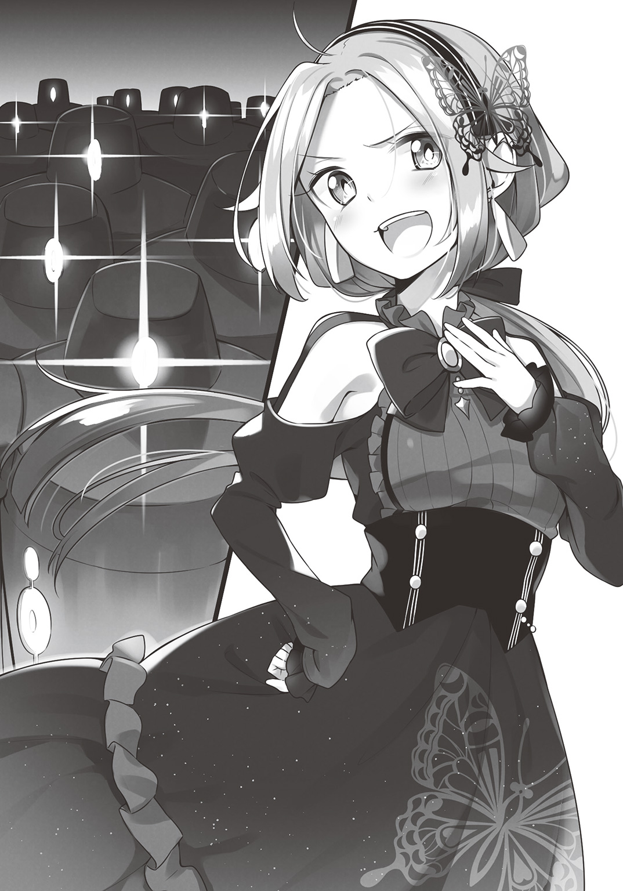
話は、一週間ほど前に遡る――
「セディア様、一体何をなさるおつもりです!?」
「言ったでしょ？ 考え方を変えるって」
彼女が歩いているのは、帝都皇宮地下にある、禁忌区域と呼ばれる場所。
ホテル・ギガントキャッスルを潰すべく裏工作を仕掛けている皇女セディア。
ただ厄介な客を押しつけるのではない。
もはやそんな悠長な手段を取っている場合ではない。
「昔の、要塞であった頃ならば、何十万という大軍をもってしても敵わなかったでしょうね。全部拒まれて、退却するしかなかった」
しかし、今は〝巨人砦〟ではなく、〝ホテル・ギガントキャッスル〟である。
「客として訪れたなら、たとえどんな相手でも、受け入れなければならないでしょう？」
にやりと、不敵に笑うその顔は、なにか策があることを臭わせていた。
禁忌区域――この場所には、帝国が先の戦乱の頃に作った、忌むべき遺産が封印されている。
戦争は、綺麗事ではない。
自軍の損害を最小限にして勝利するということは、一方的な虐殺を行うに等しい。
「戦わずして勝つ」が、兵法の極意とされているが、成し難いからこそ、極意なのだ。
帝国軍も、天下を統一するまでの間、様々な、外道と言える兵器を生み出してきた。
「ここにあるのは、外部持ち出し禁止の非人道的兵器ばかりです。勝手に入ることすら許されません」
「構わないわよ。バレなきゃ、誰も入ったことにはならないでしょ？」
「無茶な!?」
オーウェンの悲鳴のような声も、彼女には通じていなかった。
真火を内蔵することで、城一つを消し炭にする「フロギネンスの筒」。
触れた者を一瞬で解毒不能にし、空気感染して街一つを殺し尽くす「サバルトの毒壺」。
太陽の光を利用し、都市一つを消滅させる、「烈光の瞳」などなど......
帝国の科学力と魔導力の粋を集めた、大量破壊兵器の数々が並んでいる。
「こんなものを使って、大規模破壊でも行うつもりですか？」
「さすがにそこまではしないわ。昔の要塞時代ならともかく、今はホテルなんだから」
ギガントキャッスルは、過去はどうあれ、今は一宿泊施設である。
帝国軍部は、幾度も査察を行い、従業員のロッカーまで調べ上げたが、かの場所に、保安用のものを除けば、武器となりそうなものなど、調理用ナイフとペーパーナイフくらいであろう。
そんな場所に、禁忌の軍用兵器を使えば、さしもの帝国といえど非難は免れない。
「だから、兵器を持ち込んだりはしないわ......でも、兵器自身が、〝客〟として訪れたならどうかしら？」
「は......？」
謎掛けのようなことを言うや、セディアは目的のものが置かれている、倉庫の扉の前に立った。
そこにもまた、厳重な封印が施されているのだが、禁忌区域管理担当者を恫喝し、解封の鍵は受け取っている。
扉中央にある鍵穴に差し込み、ひねる。
ガチャリという音とともに、扉各所に仕掛けられた魔導式の封印が、駆動音を連鎖的に響かせつつ、自動的に、ゆっくりと開いていった。
「まさか、これは......」
息を呑むオーウェン。
そこに並んでいたのは、百体の鋼鉄巨人兵。
帝国軍がその技術をもって作り上げた、〝意思を持つ兵器〟であった。
そして、再びギガントキャッスルのホテルロビー。
「な、なんなの......鋼鉄巨人兵って......？」
「帝国が戦時中に作った......意思を持つ兵器よ」
慌てふためくコロナに、リディアは言った。
ゴーレムとは、正確に言えば生物ではない。
魔力を含む土や岩に、特殊な儀式と秘薬をもって、擬似的な命を与え生み出される泥人形である。
古くは錬金術師たちが、門番や簡単な仕事をさせる雑用係として使役していた。
だが、帝国はそれをさらに兵器のレベルにまで進化させる。
「その名の通り、金属製のゴーレムよ。リビングメイルとはわけが違うわ。あっちは中身は空っぽだけど、こいつらは中身もしっかり詰まってる。同じ大きさの鋳造品みたいなもんよ」
石造りのロビーの床も、心なしか、歪んでいるように見える。
「あららら～、ここは大陸でも屈指のホテルなのに、随分と上等な口ぶりじゃないの？」
嫌味ったらしい態度と、嫌味ったらしい口調で、セディアが言った。
「まるで私のツレが、心のない兵器のような言い草じゃないの」
「兵器じゃないか」
リディアが突っ込むが、セディアは、フフンと鼻を鳴らす。
「なに言ってるのかしら～？ 彼らにはちゃんと意思があるわ。意思のある兵器なの。でも安心しなさい。武装の類は解除しているから、ただの一般人よ」
「え、ええ～!?」
無茶苦茶な理屈に、コロナは驚きの声を上げた。
「意思って......ゴーレムだから、擬似人格じゃないんですか？」
「いや、それがまた違うのよコロナちゃん......鋼鉄巨人兵がただのゴーレムと違うのはそこなの」
通常のゴーレムは、うつろな仮初めの魂しか持っていない。
それゆえ、機微に欠け、感情に乏しく、思考も鈍い。
これでは軍用兵器としては運用しづらい。
そこで帝国軍魔導兵器研究機関は考えた。
「ならば、人間の魂を入れればいいのではないか」と。
乱世の時代、命が数字でしか認識されていなかった頃ならではの発想である。
ともかく、その発想は正しく、死者の魂を組み込まれたゴーレムたちは、人間と変わらぬ知性と判断力を持つ兵器となった。
「鋼鉄巨人兵には、人間の魂が入っているわ。彼らは兵器だけど、人格のある存在......なら、立派に〝客〟になるんじゃないの？」
「ええっと、でも、それは.........どうしよう......」
困惑するコロナ。
すでにことは、一見習いホテルマンが判断していい問題ではなくなっていた。
「まぁいいわよ、断るなら。ただ、そちらのモットーは何だったかしらねぇ？」
ニタニタと。セディアは意地悪く笑う。
ギガントキャッスルのモットーは〝いかなるお客様も受け入れる〟である。
ここで、「お引き取りください」とは言えない。
「意地の悪い小娘ね......」
十歳かそこらくらいの容姿のはずのリディアが、その姿に似つかわしくない声でつぶやく。
セディアの目的は「できない」と、言わせること。
言えば、それを口実として、ギガントキャッスルの名を地に落とすつもりなのだろう。
「なるほど......アンタが黒幕か......」
レイアは、「何者かが動いている」と危惧していた。
その相手こそが目の前の少女なのだと、リディアは察したのだ。
「なんのことかわからないけど、泊めるの？ 泊めないの？」
「くっ――！」
「うふふ、よろしくね？」
相手が断れないことをわかった上での、上からの態度に、リディアは唇を嚙むしかなかった。
「さぁ、あなたたち！ 旅の疲れをゆっくりと癒やしなさい？ そう、徹底的にね......」
「「「「「おうっ!!」」」」」
セディアが言うや、百体の鋼鉄巨人兵が、一斉に応える。
まるで、今から支配地を蹂躙せんとする、征服者のように。
「世話になるぜねぇちゃん」
「たっぷり楽しませてもらおうか」
「げへへへっ......」
それまで、整然と並んでいた巨人兵たち全員が、野太い声で、不気味に笑った。
結局、セディア率いる鋼鉄巨人兵百機を、ギガントキャッスルは受け入れることにした。
先述したように、「できません」と言えば、それがホテルに大きな損害を与えるからだ。
敵対的な行為を仕掛けてきた相手に、ここは退いてはならない場面だったのだ。
「こんな時に、あのバカはどこに行った!!」
決定を下した、社長のホウオウは怒鳴った。
昼過ぎには帰ると言っていたレイアだったが、予定が変わったのか未だに帰還していない。
「こんな状況下で、一番頼りになる人がいないなんて......」
これにはコロナも、不安を隠せなかった。
「ともかく、なんとしても、あの巨人兵どもを、つつがなくチェックアウトまでもてなすのだ！ どんな手段を使ってでもだ。いいな！」
「偉い人は好き勝手言うなぁ......」
雇われ者の悲しさ、コロナに業務命令を拒むことはできなかった。
さて、かくして宿泊することとなった巨人兵の団体客。
その暴れっぷりは、凄まじかった――
「ぐはははははっ!! 風呂だ風呂だ!!」
「関節の隙間までピカピカにさせてもらうぜぇ!!」
地上三十階にある、ギガントキャッスル名物〝天空風呂〟――
そこに押し寄せる鋼鉄巨人兵百機。
湯船に入る前には、体を洗って......などという決まりを、悠長に守るはずなどなく、汚れた体のまま突入する。
それも、ただの「洗っていない体」ではない。
禁忌区域で戦後からずっと封印され続けたホコリまみれに泥だらけの体。
さらに、金属の体を円滑に動かすための関節油がついた状態で入ったのだ。
それが百体である。
湯船はあっという間に泥と油まみれになり、地下水を汲み上げ、浄水器に通すことで供給されていた清浄なお湯は、一瞬で泥水と化した。
「テメェ、オレの背中流せやコラァ！」
「酌しろ酌！ ああン？ オレの酒が飲めねぇってのか！」
しかも彼らは、アルコールを持ち込み、他の宿泊客に絡み、挙句に仲間同士でケンカをして、風呂場のガラス、床、壁、天井、さらに装飾品の彫像など、形あるものは全て破壊しまくった。
コロナらスタッフの誘導で一般客の避難が間に合ったため、けが人は出なかったが、自慢の〝天空風呂〟は、優秀この上ないギガントキャッスルの施設、設備の保守管理を行う営繕スタッフの手をもってしても、一週間の使用中止を余儀なくされる。
続いて、食事――
「どんどん持ってこいどんどんだ!!」
「酒足りねぇぞ酒――!!」
百体の鋼鉄巨人である。
いかに名店ぞろいのギガントキャッスルホテル街でも、彼らを受け入れるのはかなり厳しい。
店舗の規模が足りない――のではない。
こんな暴れ者集団を受け入れられるレストランがなかったのだ。
他の利用客の迷惑にならないよう、ホテルのパーティーホールを専用の宴会場として使用したのだが、そこでも彼らは暴れまわる。
「おら、お代わりだ。早く持ってこい！」
「めんどくせぇ、樽で持ってこい樽で!!」
擬似生命体であるゴーレムが、食事を摂るのかというと、本来なら必要はない。
だが彼らは、死した人間の魂を埋め込むことで「生ける兵器」と化した者たちである。
生前の習性として、食欲や睡眠欲を有しているため、余計たちが悪かった。
「おい姉ちゃん！ こっち来いや！」
「いいじゃねぇかよウブなネンネじゃあるめぇしよぉっ!!」
宴会やパーティーを担当するバンケットスタッフの女性従業員にパワハラやアルハラを仕掛け、挙句に女体盛りを強制するなど傍若無人の限りを尽くし、最終的に宴会場もまた、壁床天井ことごとく破壊されての、大損害を被った。
「え、えらいこっちゃー......」
コンシェルジュデスクに届けられた、各所の損害報告書の山が、コロナの前に積まれていた。
鋼鉄巨人兵の団体客を受け入れてわずか一日でこれであった。
「損害額いくらになるんだろ......これ、わたしのお給金から引かれるなんてないよねぇ......」
思わず不安になってしまう。
ギガントキャッスルの給金は、そんなに低いものではないが、それでもコロナはまだ見習いである。
損害額の合計は、彼女の来世の分まで前借りしても返しきれない金額であった。
「いや、さすがにコロナちゃんにそこまではしないよ.........」
机の陰に、うずくまっているリディアがいた。
「ま、あのバカがいつまで経っても戻ってこないから問題なんだけどね......」
レイアは未だに帰還しない。
昼頃には戻ると言っておきながら、すでに一日が経っていた。
なんらかの予定の狂いがあったのかもしれないが、チーフコンシェルジュが不在となってしまった結果、なぜかコロナが代理として走り回る羽目になっていたのだ。
「あの......リディア、どうしたの？ 顔、青いけど......？」
リディアの顔にいつもの陽気さはなくなっていた。
「ちょっとね......お腹痛くてさ......あはは」
笑顔を返してはいるが、それが無理して作ったものであるということを隠せていない程度には、体調を崩しているようであった。
「それよりさ、かなり、例の団体客が暴れまわっているみたいだね......」
「うん、大きなところでは、浴場や宴会場......あとエレベーターも五基壊されたし、共用スペースの損害も......一番困るのは、他のお客様への影響なのよね」
行き届いたサービスや豪華な施設もそうだが、なによりも安全なことが、ホテルには求められる。
女性のみの、もしくは子供連れのファミリー客も、安心して利用できてこそ、初めて、良いホテルとなるのだ。
「他のお客様にまで迷惑をかけないように、そこだけは釘を刺さなきゃいけないと思うの」
「どうするの？」
尋ねるリディアに、コロナは答えた。
「とりあえず、あの巨人兵の団体様を連れてきた人のところに行ってくる」
かくして、コロナは巨人兵を引き連れてきた、騒動の主であるセディアのもとに向かう。
セディアが宿泊しているのは、巨人兵たちとは異なる、最上階のロイヤルスイートルームであった。
「ふん、腹の立つホテルだけど、さすがスイートとなるとそれなりのものね」
スイートの中のスイートルーム。
王侯貴族などの、超ＶＩＰ客をお迎えするために作られた部屋だけに、本物の皇女であるセディアをして満足させるものだった。
「このマルテルマの実のはちみつ漬けの美味いこと......」
人工栽培ができず、希少種と言われる高級果実を口にしつつ、愉悦を貪っている。
彼女は上機嫌であった。
自分の養父の宿敵を、じわじわと優勢に攻め立てることができているのだ。
この調子で、一週間でも一月でも、一年でも暴れまわれば、ギガントキャッスルはとことん疲弊するだろう。
耐え忍んだところで、「ガラの悪い客がいるホテル」との噂が広がれば、それはそれで損害を与えることができる。
「完璧ね！ あーはっはっはっ！」
セディアが勝ち誇ったその時、部屋に備えられた来客用ベルが鳴る。
「失礼致します」
一拍置いて、入室してきたのはコロナであった。
「失礼するのなら帰って」
「かしこまりました」
ガチャンと、再び扉は閉じられる。
「..................」
三秒ほど後――
「いやいやいや、そうはいきませんよ！」
ノリツッコミしつつコロナは戻ってきた。
「半端にリアクションいいわねあなた」
ほんとに帰ってしまったので、ちょっとだけびっくりしたセディアであった。
「あの、クラウディア様」
「は？ .........ああ、なに？」
クラウディアとは、セディアが宿泊名簿に記した、偽名である。
さすがに皇女セディアの名前を使うことはできない。
「お連れ様たちのことなんですが......もう少し、マナーを守っていただきたく......」
ホテルサービスの根本は、「お客様のご要望にお応えする」――もっと言えば、「わがままを聞く」である。
住処を離れ、遠き旅の地で、一時気兼ねなく、くつろげる場所を提供する。
それが、ホテルサービスの根本。
にもかかわらず、お客に対して「遠慮しろ」と言うのは、その根本に反する行為だともいえる。
言い出しにくいことであったが、それでもコロナは口にする。
「ひどいことを言うわね。ホテルって、〝全てはお客様のために〟ってところでしょ？ 違った？」
セディアの言うことに、間違いはない。
だが、それでもコロナは言わねばならなかった。
「その通りです......でも、他のお客様のご迷惑になるような行為をされるのでしたら、それはまた別の問題です」
全てはお客様のために――だが、それが他のお客様の害となるのなら、話は変わる。
「ふぅん......それで、私に、何しろっていうのよ？」
「ですから......お連れの巨人兵の皆さんに、もう少し、行儀よくしていただけないかと思いまして......」
他のホテルの追随を許さない巨大ホテルとはいえ、この調子で暴れられれば、運営ができなくなってしまう。
「だけどね～、そんな残酷なこと、言えないわよ」
「残酷......？ どういうことですか？」
「あいつら巨人兵がどういうものか、知ってる？」
セディアに問われるが、当然コロナはわからず、首を横に振る。
「鋼鉄巨人兵たちは、兵器として運用できるように、人間の魂を封入したの。でも、その魂は何処から持ってきたのかしらねぇ？」
当たり前だが、魂は生き物の中にしか存在しない。
ゴーレムの体に入れられた魂があるということは、魂が抜かれた人間の身体があるということだ。
「あいつらね、もと凶悪な犯罪者なの。囚人なのよ」
「え!?」
殺人、強盗、強姦、ともかく、社会復帰の可能性もないと判断された凶悪犯たち。
死ぬまで獄に閉ざされるか、首を落とされ処刑されるかしかない囚人たち。
帝国軍部は、彼らに条件を出す。
「人の体を捨ててでも生き延びるか、それともこのまま死ぬか、どちらがいい」と。
生きながらに魂を抜かれ、ゴーレムに移植されることでのみ、生を摑んだ者たちが、あの鋼鉄巨人兵たちなのだ。
「戦争中はそれでも使い勝手が良かったのよね。敵陣に突入させて、暴れ回らせれば、けっこうな戦果は上げたから」
戦場において、意外と思われるかもしれないが、「兵の命」は大切なものなのだ。
無茶な作戦を立案し、兵を無駄に死なせれば、指揮官に対して不信感が生まれる。
なにせ、自分の命がかかっているのだ。
場合によっては、敵前逃亡や裏切りを招き、戦闘のどさくさに紛れて上官を殺害する者も現れる。
戦死した指揮官の何人かが、「後ろから撃たれた」なのは、よくある話なのだ。
「なにせ元囚人で、人の形も失ったヤツらだからね」
しかし、鋼鉄巨人兵は、元はほっといても死ぬ者たち。
さらに言えば、人の体も失った者たち。
兵士たちは、巨人兵たちを、「同じ人間」とは見なさず、彼らがどれだけむごたらしい戦死を遂げても、顧みることはなかった。
そういう意味でも、彼らは、優秀な〝兵器〟だったのだ。
「戦時中は一万体くらい作られたそうだけど、残ったのが百分の一って段階で、どれだけ使い潰されたかわかろうってものよね」
そんな激戦をくぐり抜け生き残った彼らは、運がいいのか悪いのか、戦争が終わった後、用済みとなり禁忌区域に封印された。
死を嫌って、ゴーレムとなった彼らは、希望通り、死から最も遠い、「死ぬことすら許されない」存在となったのだ。
「そんだけ戦って、地下倉庫に押し込められてたんだもの、そりゃ鬱憤も溜まるわよ。悪いけど、私がなに言っても止まらないわよアイツら」
あはははは、と高笑いを上げるセディア。
「わかった？ って、え......？ あの、なに泣いてるの？」
てっきり、期待を裏切られ、愕然とした顔をしているものと思ったコロナが、ボロボロと涙をこぼし、肩を震わせていた。
「そ、そうだったんですか.........いかに囚人といえども、先の戦いで奮闘されたのに、なんの報いも得られず......そりゃあ、ハメ外しちゃいますよね......！」
「あの～......もしもし？」
「ずびびっ！」
涙どころか、鼻水まで流し始めるコロナに、セディアは若干引いているが、当のコロナはまったく意に介さない。
「わかりました！ そうと聞いたら、鋼鉄巨人兵の皆さんが、一時でも楽しい時を過ごせるよう、粉骨砕身でがんばります!!」
ぐぐぐっと拳を握り、コロナは宣言した。
「う～んと、ちょっと待ってあなた？」
「なんです？」
「ごめん、ちょっとこっちの計算と違っちゃってどう対応していいかわからない」
心を挫くどころか、もしくは巨人兵が元は凶悪犯と聞いて怯えるかと思ったら、やる気を燃やすとは思ってもいなかったのだ。
「わたし、実は元帝国兵でして」
「え？」
「と言っても、元衛兵で、騎士見習いを一週間でクビになった程度なんですが」
「ど、どーゆーこと？」
しばし、セディアはコロナの身の上話を聞く。
「ふ、不憫な!?」
騎士に憧れて十代の大半を使い潰し、やっと見習いとはいえ騎士になったと思ったらリストラされ、流れ流れてホテルマン見習いという経歴は、さすがのセディアも同情を禁じえなかった。
「あ、あなた......いいのそれで......？」
特に、てっきり〝巨人砦〟に仕官できると思ったコロナに、ホテルに就職させる紹介状を持たせたという、謎の中年男性に至っては、人のこととはいえ腹の立つ話だった。
「いやぁ、まぁ、結果として、職の世話はしていただいたわけですし」
照れくさそうな顔で、コロナは答える。
「それに、不思議と、さほど見当ハズレな所に来ちゃった感じもしなくなってきまして」
「なんで......？」
「まぁ、なんとなくなんですけど」
セディアには理解し難い話だったが、今まで「騎士になりたい」という思いが優先しすぎて、それ以外の、世の中のいろいろなことを、ちゃんと見てこなかったような感覚が、コロナの中にはあったのだ。
「騎士道百箇条、その９です。『騎士とは、法を守る者。だが法とは、人を守る者。騎士は常に人の心を知らねばならない』です。ホテルマンの仕事も、そのための修行になると思ったんです」
それはコロナの、噓偽らざる本心であった。
「まだ、あきらめてないの......？ 騎士になること」
「当たり前ですよ」
尋ねるセディアに、コロナは堂々とした声で返す。
「いつか立派な騎士になって......そうですねぇ、それこそ、皇帝陛下に拝謁叶うとかなったら、嬉しいですね」
そう言って、嬉しそうに笑う。
「あ............」
その顔を見て、セディアの胸に、わずかに罪悪感が生まれる。
かつての〝巨人砦〟、今はギガントキャッスルを潰すという目的はあったが、そこで働く従業員のことまでは、あまり細かく考えてはいなかった。
だけどコロナのように、ほんの数カ月前から働き始め、それ以前は、自分が敬愛する養父――皇帝のもとに、端くれの端くれとはいえ仕えていた者と聞けば、心に迷いも生まれる。
「そんなわけで、巨人兵の皆様のところに行ってきます。なんとか皆さんを、おもてなしできるように頑張りますから！」
「あ、ちょっと、あなた――」
言うや、背中を向け去っていくコロナに、セディアはなんと言って声をかければいいかわからなかった。
「常に騎士は、人を知らねばならない」――
それは、騎士の心得なのかもしれないが、同時に、人の上に立つ者が己に課さねばならない思想でもある。
「皇帝の娘」たらんとする自分に、欠けているものだったのではないか、わずかに、そんな風に思ってしまった。
セディアの制止の声も耳に入らなかったコロナは、さっそく巨人兵たちが宿泊しているフロアへと向かった。
巨人兵たちには、全て個室をあてがい、さらにワンフロア貸切りの形にした。
そのほうが、他の客への被害を最小限にとどめられると思ったからだ。
だが、セディアの泊まるロイヤルスイートから降りてきて、コロナは我が目を疑った。
「壁......ええええ!?」
降りた途端、広がっているのは、壁一つない、広大な空間だった。
「がははははははっ!! なにやってんだバカヤロウ！」
「なんだコラ！ テメェオレをバカッつったかコラ！」
「いいぞ！ 殺し合え殺し合え!!」
「オレはサムソンに５０ディールだ！ 他に賭けるヤツはいねぇか？」
呆然とするコロナをよそに、広大な広間のあちらこちらで、巨人兵たちは大騒ぎしている。
「これ......壁......もしかして......壊した!?」
フロアの端には、壁であった構造材が乱雑に積まれている。
「あン？ なんだホテルのネーチャンか、なんの用だ」
巨人兵の一人が、コロナの姿を見つけ、お世辞にも友好的とは言い難い口調で尋ねる。
「あの......これ......壁......」
「ああ、酒盛りするのに邪魔だからよ、ぶっ壊した」
「ぶっ壊したって.........」
ホテルの客室係は、やってくるお客がくつろげるよう、細心の注意を払って、ベッドメイキングから始まり、各所の清掃、点検を行っている。
毎日、心血を注ぎ、維持管理をしている。
それが、壁を砕かれ、調度品は踏み潰され、跡形もない。
これでは、復旧にどれだけかかることか――
「あ、あの......！」
さすがにこれはひとこと言うべきかとコロナが口を開きかけた時、巨人兵たちは、そんな彼女の仕草など知ったことかと、声を上げる。
「ちっ、男だけで騒いでても意味ねぇな！」
「女でも漁りに行くか？」
「ロビーに行きゃあ若い女の十人二十人いるだろうよ」
そう言って勝手に盛り上がると、棒立ちのコロナをよそにズカズカと移動を始める。
その際に、飲みかけの酒瓶をあちこちに投げ捨て、床に敷かれたカーペットはボロボロである。
「そんな.........」
慌ててその背中に声をかけるが、意思を持つ兵器たちは止まらない。
エレベーターや、階段を使い、我が物顔で一階ロビーになだれ込む。
「な、なんだ!?」
「なに、なんの騒ぎ!?」
ただでさえ常に来客でごった返しているロビーに、百体のゴーレムが現れ、パニックとなる。
「さぁて、どれにするかねぇ。高慢ちきなエルフ女をボコボコにするのもいいな」
「俺はノームだ。あの種族の女、いい感じにあえぐんだよ」
「どの種族でもかまいやしねぇ。女ならなんでもいいぜ！」
言うや、一斉に襲いかかろうとする。
「待って...いや、お待ちください！」
彼らを止めようと追いかけてきた、コロナが叫ぶ。
「サムソン様、おやめください！」
そして巨人兵のうちの一体、彼らの隊長格であるサムソンに訴えた。
「ああン？」
自分の名を呼ばれ、ようやく野獣に等しい者は振り返った。
「他のお客様に危害を加えるような振る舞いは、どうか御遠慮を......あの、一旦、客室にお戻りいただけませんか？」
なんとか、落ち着いてもらおうと説得するが、サムソンはくだらなそうな目を向ける。
「なんだコラ、このホテルは客に指図するのか？」
「そういうわけではありません！ もし、なんらかのリクエストがありましたら、わたしどもがご対応させていただきますので。ロビーは共用のスペースですから」
腕一本振り回せば、人間一人吹っ飛ばせそうな相手に、それでも食い下がる。
「あなた方も、先の戦いで活躍された兵隊なんでしょう？ やっと訪れた平和な時代を、ご自分の手で乱すような真似はあまりにもひどいと思わないんですか！」
コロナの中には、彼らは元罪人かもしれないが、それでも、最も辛い戦いに投入されて戦った者たちだという、一種の敬意が存在していた。
だから、話せばわかってもらえるという期待があったのだ。
「なに言ってんだお前？」
だが、その期待は、彼女の空回りだった。
「俺たち巨人兵はよぉ、ナマの肉体を失った。食欲も睡眠欲も必要ねぇ、酒を飲んでも酔わねぇ......」
言いながら、サムソンは自分の腹部にある整備用ハッチを開ける。
そこから、ボチャボチャと、まるで吐瀉物のように、今まで食い散らかし、飲み散らかしてきたものが落ちてくる。
「というか、食っても味はわからねぇし、酔いもしねぇのよ」
彼らが酒を喰らい、女を求めるのは、欲望によるものではない。
すでに失った感覚を懐かしむ、虚構の行いにすぎない。
「だけどよぉ......そんな俺らでも、まだ昔と変わらず味わえる感覚があってよぉ」
サムソンが、半歩足を踏み出す。
人間と巨人兵では歩幅が違う。
わずか半歩で、コロナの眼前にまでサムソンは近づいた。
「ひっ......」
すくみあがり、動けないでいるコロナに、肉薄する。
「女を殺したときのあの感触......あれだけは昔のまんまなんだよ、だから俺らは.........巨人兵になったんだ。好きなだけ殺しまくれるからな」
「そんな......!?」
セディアは、彼らが、処刑されるか終身刑の罪人であり、生きるためにやむなく巨人兵になる道を選んだ者たちだと聞かされた。
しかし、事実は異なっていた。
彼らは生きるために人でなくなったのではない。
殺せない環境から、殺しまくれる環境に移るために、その選択をしたのだ。
彼らはとうに、人でなしであった。
「なら、あなたたちは......」
「獄中じゃ男しか殺せねぇからな。殺すなら女に限る。ガキも悪くねぇがな、潰すとプチッと弾けるんだ。あれ」
声を震わせるコロナに、サムソンは楽しげに話す。
彼の部下たちも、同様に、笑い声を上げている。
おそらく、セディアも正確な情報は知らなかったのだろう。
鋼鉄巨人兵たちは、「使用済み」になったので、禁忌区域に封じられていたのではない。
あまりにも凶悪な殺戮を繰り返したため、封印されたのだ。
廃棄処分にならなかったのは、それでも「巨人兵になれば死刑は免れる」という最低限の約束を、帝国が守っただけの話だった。
「まぁ、それでも俺らをおとなしくさせたいってぇんなら.........お前が代わりを務めればいいんじゃねぇか？」
「かわ......り.........？」
震えるコロナに、サムソンら巨人兵は、睨めつけるような視線を向ける。
「安心しな。犯そうってわけじゃねぇ......殺させてくれや？」
「ひっ!?」
「お前さんみたいな若い娘の柔らかい体を引き裂くってのが、一番楽しいんだよ......なぁ？」
サムソンの呼びかけに、他の巨人兵たちも「そうだそうだ！」「そりゃあいいぜ」と、下卑た声を上げた。
「あ、ああ......」
この時のコロナの心情は、最も近いものをあげれば、飢えた、そして巨大な肉食動物を前にした、小動物のそれであった。
「やめなさい！」
その時、広大なロビー全体に、強い意志を込めた声が響く。
その凄まじい迫力に、巨人兵たちすら動きを止め、その声の主に振り返った。
「いいかげんにしなさい......いくらお客様でも、限度があるわ......！」
声の主は、一人の少女――リディアだった。
青い顔で、荒い息を吐きながら、まるで何かの熱病に冒されたような、フラフラの体で、それでも、鋭い眼差しで睨みつける。
「リディア......？」
とうてい、十かそこらにしか見えない子供の声ではなかった。
それこそ、百戦錬磨の武将でもこうはいかないだろうという、「聞かなければならない」と、聞く者全てに感じさせる声であった。
「な、なんだ......このガキ......!?」
それでも、巨人兵たちもまた、地獄の戦場を生き延びた者たちである。
むしろ、幼子の声に止められたことを恥じるように、凶悪な眼差しを返す。
「お客様だからってなにしてもいいわけじゃない。ギガントキャッスルは、ホームを離れ、旅する人たちに一時の我が家のように思ってもらう、そんな場所なのよ......！」
それでもリディアは屈しない。
それどころか、巨人兵たちの眼光すらはねのけるように言い放つ。
「アンタたちは、自分の家でもそんなザマなのか！ ホテルマンはアンタたちの奴隷じゃない！ 一夜の宿をともに過ごす、友人であり、家族なんだ！ それを......」
「グダグダうるせぇガキだ！」
リディアの叫びも、心まで鋼鉄にしてしまったかのような巨人兵たちには通じなかった。
鈍い音が、こだました。
小さな少女の体は、まるでゴムまりのように宙を舞う。
「がはっ.........！」
口から血を吐きながら、リディアは床に叩きつけられた。
頭が割れたのか、赤い血溜まりが広がる。
「うざってぇガキだ！ どっから紛れ込んできた！」
殴り飛ばしたのは、巨人兵サムソンだった。
ゴーレムの腕で、力任せにリディアを殴り飛ばしたのだ。
「――――――」
コロナの中で、何かが弾けた。
考えるよりも先に、体が動く。
脳の思考よりも先に、目が、ロビー中央にある「剣」のモニュメントを捉える。
かつてこの地にいたという騎士が残していったもの。
〝巨人砦〟が、軍事要塞としての務めを終えた際、全ての戦いを封じるように、あの岩に刺していったという剣。
ギガントキャッスルには、武器と呼べるようなものはない。
あるのは調理用ナイフとペーパーナイフくらいなものだろう。
この一振りを除いて。
「ぐっ――!!」
飛び上がり、それを握りしめ、一息に剣を引き抜いた。
「なんのつもりだ、ネーチャン？」
刃を向けてきた見習いホテルマンの少女に、サムソンらはあざ笑いながら尋ねる。
「もう許せない......最低だアンタたちは！ たとえどんな理由があっても、子供を殴り飛ばすなんて......!!」
成り行きと行きがかりでホテルマン見習いとなったコロナ。
だが彼女は、それでも自分の本分は〝騎士〟だと思っている。
「騎士道百箇条その11!! 『かかる暴力は、全力をもって鎮圧せよ』!!」
吠えながらも、コロナの中に、勝てるなどという気持ちは一つもなかった。
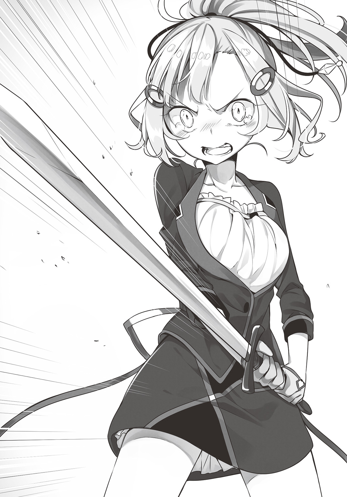
相手は人間を捨てた、〝兵器〟と化した者たち。それも百体。
対してコロナは、そこそこ鍛えた程度の十代の小娘。
勝つ見込みは、万に一つどころか、兆に一つもないだろう。
そんなことは、わかっている。
「いいぜ？ 好きにやれよ？ その後俺らがたっぷり〝殺らせて〟もらうからよ？」
下卑た笑い声を上げるサムソン。
（こんなヤツらにだけは、好きにさせたくない！）
たとえ死ぬとしても、こんな連中に、心まで屈するのは御免だった。
ならばせめて一太刀、命と引き換えにでも、傷を刻んでやろうと、コロナは剣を振りかぶる。
「うわああああっ!!」
叫びながら、斬りかかろうとした、その瞬間――
「なにをしているんです」
その男は、突然、現れた。
「れ――レイアさん......」
巨人兵との間に立ちはだかるように、レイアが立っていた。
いつの間に、とは思わなかった。
いつものことである。「気配を消すのがクセになっている」男である。
「か、帰ってきたんですね......」
「ええ、ちょっと、用事のある相手となかなか連絡がつかず......まぁ、大体の事情は理解いたしました」
なにがどうなって、百体のゴーレムと少女が睨み合う構図が生まれたかなど、常人では想像もできないだろうが、「大体理解した」というのならば、この男に限って言えば、そうなのだろう。
「この人たちは......最低です！ リディアが......」
少女リディアは、鋼鉄の腕で殴り飛ばされ、床に叩きつけられ、殺された。
「こんな人たちをもてなすなんて、嫌です！ 絶対に！」
コロナは、レイアならばわかってくれると思った。
淡々と、冷静に、慇懃に振る舞っているようでも、この男のサービスは、常に客に寄り添い、その人の心を理解することから始められている。
人の心を大切にする者ならば、こんな蛮行を働いた者たちを、許すわけがない。
きっと、いつものような超人的な力で、彼らを追い払ってくれるのではないかと、そう信じていた。
「なんてバカなことをしているのですか、あなたは」
「え――――」
だが、かけられた言葉は、あまりに冷たく、辛辣だった。
「たとえいかなる理由があろうが、お客様に刃を向けるなど、あっていいことと思っているのですか？」
「でも、この人たちは......!!」
残虐非道な殺人狂であり、ホテルのあちこちを破壊して回り、他のお客さんすら毒牙にかけようとした。
「そんな人たちを、お客様扱いするだなんて......ありえません！」
「あなたは......それを、ご自分のご家族にもおっしゃるのですか？」
「え.........」
声を荒らげることなく、それでいて、決して容赦はしない声で、レイアは告げる。
「ホテルマンとは、お客様の忠実な下僕であり、同時に、ひと時の友人、家族として接する者です」
「でも、でも......」
「あなたはご自分の家族が、何らかの罪を犯したら、『こんな犯罪者は家族じゃない』と見捨てるのですか？」
レイアの言っていることは、間違ってはいない。
己の感情までも、彼は冷徹なまでに徹底しているのだ。
「だけど......！」
それでも、コロナは納得できず、肩を震わせる。
「少なくとも、そんなものを引っこ抜くことが、ホテルマンの仕事ではありません」
言うや、レイアはコロナの持っていた剣を奪うと、まるで汚いものであるかのように投げ捨てる。
剣は、宙を何回転かすると、狙ったように元あった岩に、きれいに突き刺さった。
「さてと......」
そして、悔しさのあまり涙をにじませるコロナをよそに、巨人兵たちに振り返る。
「この度は、当ホテルの従業員が、大変失礼なことをしてしまい、まことに申し訳ございません」
深々と、謝罪のお辞儀をする。
「.........なんでぇ」
突如現れた謎の男......いや、セディアから予め、「油断ならない男がいる」と聞いていたレイアの、あまりの穏健っぷりに、サムソンは拍子抜けする。
「ただの腰抜けかよ。驚かせやがって」
安堵もあるのだろう、一時は驚きに消えた嘲笑が、再び戻る。
「ご不快な思いをされたと思います。しかしながら、彼女はまだ見習い。監督者であり、指導担当はわたくしです。彼女に成り代わり、責任を取らせていただきます」
「ほう......？ どう責任取るんだい？」
「いかようにも、なさっていただいて結構です」
相手の許しを得るまで、上げる気はないと言わんがばかりに、レイアは頭を下げたまま答えた。
「そうかい......じゃあさ......」
サムソンの金属でできた顔面が、ぐにゃりと歪む。
それは、残虐な思いつきが浮かんだ時に作る、悪魔の笑みだった。
「ちょっと頭が高いよな？」
ドン、と轟音が響く。
間髪入れずに放たれたサムソンの拳が、レイアを上から殴りつけ、そのまま床に叩きつける。
常人ならば、頭蓋骨が砕け散っていたであろう衝撃。
レイアは躱すことなく受け止め、床石に顔面をめり込ませる。
「まだだ、まだ、高ぇなぁ、頭がよぉ!!」
そこにさらに、体重をかけ、足で踏みつける。
これもまた、まともな人間なら、それだけですり潰され、ミンチとなっていたであろう。
だが、それだけの話ではない。
深く頭を垂れ、陳謝する相手を、無理やり叩きのめし、顔面を床にこすらせているのだ。
「謝るならよぉ、土下座だろ、フツーは？ 礼儀がなってねぇなぁ？」
そして、大勢で笑い者にする。
肉体を虐げ、精神を侮辱したのだ。
「やめて......やめてください......やめろ!!」
思わず、コロナは助けようと駆け寄るが、そんな彼女を制する声がかかる。
「すっこんで......いなさい......」
誰あろう、踏みつけられているレイア本人だった。
ゆっくりと、苦行者のような動きで、頭を上げる。
傷だらけの顔面で、血を流しながら、サムソンに問う。
「これで、お許しいただけますか......？」
土下座の強制という恥辱を加えられながらも、一歩も引かないその姿に、虐げているはずのサムソンの方が、一瞬、引き下がりかけてしまう。
「テメェ.........」
だが、暴力と恫喝だけでこの世を渡ってきたような連中には、逆効果となる。
自分をわずかでも「ビビらせた」というだけで、制裁の理由となるのだ。
逆に言えば、そうしなければ、自分が「ナメられる」。
それだけで生きている者にとって、それは、生死以上に重要なことなのだ。
「まだだな、まだ許せねぇ」
サムソンはレイアの頭を鷲摑みにすると、無理やり立たせ――というよりも宙吊りにし、背後の仲間たちを顎で示しつつ言った。
「テメェのとこの部下は、俺ら全員を外道だの最低だの好き勝手言ってくれたんだぜ？ ならよぉ、全員に詫び入れてもらわなきゃ困るよなぁ」
いたぶる、とっておきの手段を思いついたサムソン。
「俺たち百人に殴られな。それでも立ってたら、勘弁してやるよ」
「そりゃいい頭ァ！」
「うひょー、おもしろくなってきた！」
サムソンの提案に、他の巨人兵たちが楽しげにはやし立てる。
「無茶な......！」
それを聞いたコロナは、言葉を失う。
巨人兵の体は、全てが金属製。
足も体も腕も、当然拳も硬金属である。
一発殴られれば、まともな人間なら首から上が吹き飛ぶ。
それを百人に......百発喰らえば、立っているどころか、人の形すら保っているか、疑問であろう。
「レイアさん......駄目です......そんなの......！」
そして、問題はそれだけではなかった。
先ほどから、一方的に殴られ、踏みつけられているレイア。
そう、一方的すぎるのだ。
反撃はおろか、回避も、防御も、受け身も、それどころか、たとえ意識しなくとも体が自然に行う、筋肉の硬直すら、レイアは意識的に止めていた。
まるで、それら全てが、客への無礼になると思っているかのように。
無意識のレベルまで、意識的に抵抗を禁じていた。
「それで......お気に召すのでしたら......どうぞ......」
それを証すように、レイアはかすれた声をこぼす。
「はっ......そこらの人間よか頑丈みたいだが......どこまで耐えられるかねぇ？」
血を流しながらも立ち上がったレイアを見て、サムソンは笑い、そして、ダメ押しを加える。
「テメェら、一つ賭けをしようぜ！ コイツを殴り殺したヤツが総取り！ 早い者勝ちだ！」
言って、取り出した金貨を投げた。
「そいつぁいい！ 盛り上がる！」
「俺だ！ 俺が一番だ！」
盛り上がる巨人兵たち。
人の生死を娯楽とする彼らにとって、「いつ死ぬか」を賭けるのは、二重の意味でも、享楽を刺激する話であった。
「頭ァ！ 俺からいかせてもらいますぜ！ 一発で終わらせてやる！」
「おう、いけ！ エルグ！」
積み上がった百枚の金貨を目当てに、エルグと呼ばれた巨人兵が前に出る。
「避けんじゃねぇぞ～？」
腕だけで大人の体軀と同じ太さと長さ。
拳たるや、巨大な砲丸がそのままくっついているに等しい。
「オラァっ」
それが、レイアの腹に――というよりも、上半身全体に叩き込まれる。
「.....................！」
うめき声一つ上げず、金属の拳を受け止めるレイア。
吹き飛ばされもしない、体を折りもしない。
「最後まで立っていれば」の、約定を守るように、棒立ちのまま、その一撃を受けた。
「ぼふっ.........」
しかし、決して無事では済まなかった。
口の端から、体内の空気が無理やり押し出され、同時に、血反吐が溢れる。
「ちっ！ すっちまった！」
憎々しげに吐き捨てるエルグ。
「次は誰だ次は！」
だが、まだ一発目。
あと九十九発が残っている。
「次は俺だ！ もうアイツ倒れかけじゃねぇか！」
「いやいや、その後くらいが怪しいと見たぜ。三番手は俺だ！」
人の命をおもちゃにするゴーレムたちは、楽しげに笑いながら、二人目、三人目と、自慢の拳を振るい、レイアの体に叩き込む。
その度に、鈍い、肉が潰されるような音が、ロビーに響いた。
「くそっ！ しぶといやつだ！」
「代われ、次は俺だ！」
「お前のヘタレパンチじゃ無理だって」
「いや、見極めたね、こうやって、回転かけんだよ！」
「ぎゃははははっ！ 倒れねーじゃねぇか！」
ゴーレムたちの楽しげな笑い声。
その合間に、肉が引き裂け、骨が砕け、臓腑が破れる音がする。
ロビーにいた者たちは、ある者は逃げ出し、ある者はあまりのむごたらしさに吐き出す者もいた。
その中で、最も近い場所で、コロナは呆然と立ち尽くし、その場面を目の当たりにする。
「なんで......こんなことに......」
思い出す、幼き頃の光景。
理不尽な暴力によって、村を焼かれ、父を殺されかけた、あの日。
あの時は、通りすがりの騎士サマが助けてくれた。
だが今は、何もない。
ただただ、自分の行動の謝罪のために、百人分の致死的な拳を受け続ける男がいるだけだった。
（わたしのせいだ......）
レイアの言葉が、痛いほど染みる。
どんな事情があれど、従業員という立場で刃を突きつければ、そこで自分が悪者にされてしまう。
あともう少し冷静になれていれば、それこそ、あとほんの少しで、レイアが帰還したのだから、それから彼に指示を仰いだならば、こんなことにはならなかった。
自分の軽率な判断が、この修羅場を生んだ。
ならばせめて――
「おいおい、どうなってんだコイツ......ホントに人間種族か......？」
「もう、五十発だぞ......」
最初は笑い混じりで、拳を振るっていたゴーレムたちだが、ついに半分を耐えきったレイアに、動揺が走り始めていた。
「立ったまま死んでるって、こたぁねぇよな......？」
五十一発目の拳を繰り出した巨人兵が、念のため、呼吸を確認する。
隙間風のようなかすれた呼吸音が、まだ聞こえていた。
「コイツ、不死人かなにかか.........？」
古の魔導に、不老不死の秘術というものを編み出した者たちがいたとも言われているが、そんなものはあくまでおとぎ話の範疇。
そんなことは彼らもわかっていたが、ただの人間のはずのレイアが、自分たちの剛拳に耐え続けている事実に、怯えを感じ始めていた。
「バカなこと抜かしてんじゃねぇ！ そんなもんあるわけねぇだろうが！」
その空気を察した、頭目のサムソンが怒声を上げた。
「オメェらの拳が弱いんだよ！ 無意識に手加減してるんじゃねぇか？」
「そんなことは......」
「じゃなんで生きてんだよコイツは！」
彼らの前には、体中傷だらけになり、いつもは清潔に保たれたタキシード風の制服もボロボロになった、一人のホテルマンが立っている。
「見てろ、俺が手本見せてやる！」
一歩前に進むサムソン。
「なんだ？」
その前に、コロナが両手を広げ、立ちはだかる。
「やめてくださいとか言うつもりじゃねぇだろうな？ これは、そこのヤツも了承済みの話だぞ」
「........................」
ドスの利いた声で、退かせようとするサムソンだったが、コロナは無言のまま、その場を動かない。
「なにを......しているのですか.........？」
かすれた声で、レイアが言った。
「すっこんでいなさいと......言ったはずです......よ......？」
「..................」
その言葉を聞いても、コロナは動かない。
（コイツ......本物のバケモンか......!?）
サムソンは、戦慄を覚えた。
ひたすら無言で拳を受け続け、とうに意識などなくなっていたと思った男は、まだ、しゃべれるだけの余力を残しているのだ。
ゴーレムの体になってから十数年、忘れかけていた、「冷や汗をにじませる」という感覚を、彼は思い出した。
「邪魔だクソアマ！」
そのことで湧き上がった苛立ちをぶつけるようにサムソンはコロナを弾き飛ばす。
「がはっ............！」
血を吐き、二回三回と、コロナは床を転がり、壁に体を打って、ようやく止まる。
「ったく、邪魔すんじゃねぇ」
吐き捨てるような、サムソンの声。
（痛い.........！）
声にならないくらい痛かった。
体中の骨がバラバラになったんじゃないかと思うほど、体中の肉が全部引き裂かれたのではないかと思うほどの衝撃だった。
多分、何本か骨が折れているだろう。
片耳の鼓膜が破れたのか、音が変な聞こえ方をする。
「ごべっ......」
言葉を放とうとしたが、その前に胃の中のものを全部吐き出してしまった。
「これで......」
それでも、必死で言葉を吐く。
消えそうになる意識をかき集め、せめてこれだけは言わねばならないと。
「これで......五十二発目、ですよね.........」
「なにぃ.........？」
言っている意味がわからず、困惑した顔のサムソンに、コロナはなおも告げる。
「百発......無理だけど......でも、せめて......一発くらいは......わたしも......」
その言葉を最後に、コロナは気絶する。
これが、コロナのできる精一杯だった。
彼女の力では、サムソンたち鋼鉄巨人兵の剛拳を、百も受けきることはできない。
それでも、せめて自分が起こしたことのケジメとして、百分の一でも背負う義務があると、コロナは感じたのだ。
「コロナさん......あなたは......？」
血だらけの顔のレイアが、視線を向ける。
百発が九十九発になったとしても、この現状では微々たる差なのかもしれない。
だけど、自分ができる全てをしようと、少女は思ったのだ。
たった一発。
しかし、彼女の命をかけて受け止めることができる一発。
「ふざけんじゃねぇ!!」
さらに苛立ちに拍車をかけられたサムソンは激怒し、コロナの思いなど知ったことかと、レイアの顔面に拳を喰らわせた。
「............！」
それでも、倒れないレイア。
「クソがっ！」
できればもう一発二発叩き込んでやりたい衝動に駆られたサムソンだったが、背後の手下たちの手前、それは抑える。
「なにやってる！ 次のヤツ、とっととやれ！」
自分がとどめを刺せなくとも、あと四十数人のうち誰かが終わらせるだろうと、憤慨しつつも、後ろに下がった。
そして、さらに制裁は――いや、公開処刑は続く。
何発もの、肉を砕くような、生理的嫌悪を催させる音が、四十発以上響く。
そして――
「どらぁっ」
最後の一人が、ありったけの力を込めて、拳をレイアに叩き込んだ。
「う、噓だろオイ.........」
巨人兵の一人が、バケモノを見たような声を漏らした。
「百発......耐え抜きやがった.........!?」
百体の鋼鉄巨人兵が放つ、百発剛拳を喰らい、レイアの姿は、さながら朽ち果てた枯れ木のようであったが、それでも約束通り、「百発殴られても立って」いる。
「ぐっ.........！」
悔しさに歯ぎしりするサムソン。
自分たち鋼鉄巨人兵は、暴力と恐怖で戦場を闊歩してた集団である。
その両方を、否定されたような気分になっていた。
「あなたの負けね、サムソン」
「アンタは......」
そんなサムソンに、上階から降りてきたセディアが声をかける。
「悔しいけど、ここまでされたら退くしかないわ。出直すわよ」
「どういうことですかい、お嬢さん......俺らはアンタの命令通りにしただけですぜ？」
巨人兵サムソンは、口調こそは丁寧語を心がけているが、あからさまに不満げな声で応ずる。
「やりすぎだと言ったの......！ 立場を利用して力押ししたのはいいけど、ここまでされたら、引き下がらざるをえないわ」
衆人環視のもとで、鋼鉄巨人兵の必殺の剛拳百発を耐えきったのだ。
これ以上こちらがなにかすれば、全て裏目に出る。
「それに......女子供にまで手を出していいなんて言った覚えはないわよ」
彼女の目的は、あくまで従業員が手を出せない、〝客〟という名目で送り込んだ巨人兵たちをホテル内で暴れさせ、ギガントキャッスルを内部から破壊すること。
他の客はおろか、従業員に暴行を加えることまで許した覚えはない。
「早く他の巨人兵たちを連れて、部屋に戻りなさい！」
怒鳴りつけるセディアだったが、巨人兵たちは動かない。
それどころか、小馬鹿にするような、不気味な笑みを彼女に向ける。
「なに......その目は......！ あなたたち、わたくしに逆らう気！」
本来なら、禁忌区域から出ることも能わぬ存在であった彼らを、表に出してやったのは、皇女である彼女なのだ。
その彼女の命令を、巨人兵たちが従わぬはずがない。はずだった――
「アンタ、なんか勘違いしちゃあいませんか？」
ニタリと、サムソンは笑った。いや、嘲笑った。
「もし俺らが、このホテルを出て街で暴れだしたら、どうなると思います？」
「なに......？」
「グランクルス、なるほどたいそうキレイな街だ。だが俺らなら、三日もあれば半分はぶっ壊せますぜ？ 建物だけじゃない、住んでいる人間もだ」
それは決して脅しではなかった。
実際彼らは、戦時中に、同様のことを繰り返してきたのだ。
「な......なにを言っているのよ......？」
「主導権はこっちにあるって言ってるんだよ。アンタ、自分がなにしたかわかってんのか？ なんで俺らが今までおとなしくアンタの言うこと聞いてたと思ってんだ？」
鋼鉄巨人兵たちは、本来なら、忌むべきものとして封じられているはずの者たち。
それを「出してやった」ということは、表に「出してしまった」ということ。
しかも、大陸の統治者である皇女殿下が、である。
「アンタ......オヤジにいいところ見せたくて俺らを使おうとしたんだよな......その俺らが、大暴れしたらどうするよ？ それをオヤジに知られたらどうするよ？」
皇帝の治世は、順当に進んでいるものの、敵対勢力がないわけではない。
中には、皇帝の弱みを見つけ、治世を乱し、混乱に乗じて権力を得ようとする者も多い。
そんな者たちに、養女である皇女セディアが失態を犯したと知れれば、養父である皇帝の顔に泥を塗ることになる。
ある意味それは、セディアが死ぬ以上に恐れていることなのだ。
「帝都ならお膝元だ、もみ消すこともできるだろう。だが、グランクルスは自由商業都市だ、他種族も山ほどいる。アンタのせいで虐殺事件が起これば......隠せないぜぇ？」
「それが、狙いだったの......!?」
サムソンは答える代わりに、とびきり邪悪な笑みを返した。
これが、彼らの目的であった。
再び表の世界に出て、望むように、殺戮を楽しむ。
「アンタのオヤジが悪いんだぜ？ 俺たちから、戦場っていう遊び場を奪った。俺たちはただ、好き放題人殺しを楽しみたいだけだったのによう？」
「そんなことが、許されるわけがないでしょう......！」
「ああ、そうだな。だからアンタを利用したんだ」
セディアは彼らに、弱みを握られてしまった。
「俺らは別に、それほど多くを望んじゃいねぇ。アンタの裁量で、もみ消せる程度の殺人を許可してくれりゃあいいんだよ」
「くっ.........！」
取引に応じれば、彼らは「殺人を許可した皇女」という事実そのものの口止めを理由に、さらに彼女から多くのものをむしり取ろうとするだろう。
しかし、断れば、彼らは今すぐにでもグランクルス市街で、大殺戮を決行する。
比較するならば、後者のほうがまだしも最終的な被害は少ない。
百体の鋼鉄巨人兵は脅威だが、それをしたならば、数日後には軍が派遣され、彼らは殺害――否、破壊され、それで解決する。
それがわからないほど、セディアはバカではなかった。
だがそうすれば、彼女の地位は地に落ちるだろう。
（お義父様に.........嫌われる......！）
それは、彼女にとって最も恐ろしい未来。
「バカなガキだ。このホテルの客を装って暴れろだと？ 最初からそんな三文芝居、つきあってやると思ったのか？」
「...............！」
悔しさに唇を嚙むが、セディアはなにも反論できなかった。
ギガントキャッスルに鋼鉄巨人兵を率いて現れた段階で、彼女はサムソンたちの策にはまっていたのだ。
「そういうわけで、これからよろしくな。ええっと、クラウディアサマ？」
あえてセディアの神経を逆なでするように、彼女を偽名で呼んだ後、サムソンら巨人兵らは、一斉に笑った。
「ご歓談のところ、申し訳ありません」
「あ？」
最初、サムソンらはその声が、どこから発せられたものかわからなかった。
「失礼ながら、お話を盗み聞きしてしまいました。あなた方は......お客様ではない、と？」
信じがたい話だった。
その声は、彼らのそばに立つ、枯れ木のような男から放たれたものだった。
皮は破れ、肉は裂け、骨は砕け、顔は原型を留めず、巨岩に潰された轢死体でももう少しマシだろうというほど惨めに哀れにズタボロになった男が放ったとは思えない、よく通る、凜とした声だった。
「なんだ......お前......まだしゃべれる......？」
巨人兵の剛拳百発を耐えきっただけでも、奇跡というよりも異常という状態なのに、その男は――レイアは、まるで〝なにごともなかった〟ような声音であった。
しかし異変も異常も、それだけではなかった。
「な、なに......!?」
驚きの声を上げるセディア。
レイアの体から、大量の蒸気が噴き出している。
それどころか、まるで暖炉......いや、溶鉱炉のような高熱が放たれていた。
一体それがなんなのか、その場にいる誰も、呆然とし、理解不能という顔。
無理もない。
膨大なエネルギーをもって、凄まじい勢いで破壊された肉体が修復され、それによって高熱を発しているなどと、誰が想像できよう。
「なんなんだ......お前は......!?」
サムソンの声が震えていた。
もはや、虚勢を張る心の余裕はない。
人間の体を捨て、金属の巨人の体を得た自分たち以上に、人間離れしたものを目の当たりにしているのだから。
「ああ、申し遅れました」
言っている間にも、レイアの体は、高速で修復されていく。
あれだけ流れた血も、砕けた骨も、ちぎれた肉も、溢れた脳漿も、破裂した臓腑も、再生していく。
「わたくし、このホテルのチーフコンシェルジュをしております。レイア・トゥールマンと申します」
自己紹介を終えた時には、すでにレイアの肉体は、髪の毛一本に至るまで、完全に再生していた。
「再生能力者......？ 違う、そんなレベルじゃない......！」
その光景を目の当たりにしたセディアは、呆然とつぶやく。
魔導によって、生体能力を強化され、自然治癒力を高めた者というのは存在する。
また、強い生命力により、手や足を欠損しても、再生できる一部の種族もある。
しかし、レイアのそれは、どちらとも違う。
まるで、時を逆回りさせたような再生。
なにせ、まとっている衣服まで元に戻っているのだ。
さながら、神か悪魔か、もしくはそれ以上の存在、この世の道理を司る者が、彼の者の死を許さないと、万象の法則を捻じ曲げたかのようであった。
「まさか.........！」
そんなことが可能な者が、一つだけ、セディアには心当たりがあった。
「ありえない......まさか......あなたは......!?」
自分の予想が、間違いであることを、セディアは心から願った。
世界はもっと広く、自分など想像もつかないような別種の秘術があり、それによって起こった現象なのだと思いたかった。
そうでなければ、自分は、とんでもない者を敵に回してしまったことになる。
「わたくしの仕事は、当ホテルにいらっしゃった皆様に、等しくやすらぎのひと時を味わっていただくこと......そのためならば、この身がどうなろうと、悔いはありません」
静かな口調だった。
怒りでも、憎しみでもない。
ただあるとするならば、純粋なる〝決意〟。
揺るがない巨大な意思が、そこにあった。
「ホテルマンは、お客様のひと時の友であり、家族であり、忠実なる下僕であります。お客様の御為ならば、全ての災厄より守る盾となりましょう」
異変が、起こっていた。
いや、すでに起きているのだが、さらなる異変が起こった。
レイアを中心に空気が渦を巻いている。
それは、ただの気流の乱れなどではない。そもそもここは室内だ。
強大な力に、周囲の空気が引き寄せられているのだ。
「羽.........？」
誰ともなく、その光景を見て、つぶやいた。
レイアの体から、真っ白な光が溢れている。
その光は、徐々に、翼のようなフォルムを形成していく。
放射される光が、まるで羽のように周囲を舞っていたのだ。
「間違いない.........あれは、聖騎士!?」
目の前に在る男が、自分の予想にあった、最もありえない現実であったことに、セディアは驚愕の声を上げた。
「騎士」とは、ただ単に身分を表すだけのものではない。
卓越した凄まじい能力を有する者が、称号として持つものがあるのだ。
地水火風の力を司るという、精霊騎士。
魔王竜すら使役する竜騎士。
その中で、最も特異なる力を持つ騎士号、それが聖騎士――
かの者たちは、不死身を超える生命力を持ち、たとえ首を落とされようが、それどころか、体を粉々にして燃やされ、灰と化しても、再生するという。
その凄まじい力は体内に収まりきらず、溢れ出し、独特の翼のような姿になる。
それゆえに、伝説に在る、創世の聖神の神殿を守るという御使いに例えられ、〝聖〟騎士と呼ばれた。
「初めて見た......それも......なによ、あの翼の数......」
伝承に在る聖騎士の翼は、ほとんどが二枚。多くて四枚。
伝説に記される英雄で、六枚がせいぜい。それでさえ、歴史上四人しか存在しない。
「十二枚......」
だが、この時レイアの背中から展開された翼は、実に六対十二枚。
ただそこにいるだけで、神々しいまでの存在感を放っていた。
「いやなんですよ、この状態になるの」
レイアの口調は変わらない。
日頃と同じ、淡々とした、慇懃かつ丁寧な物腰。
「ホテルにおいて、主役はお客様です。ホテルマンは黒子に徹することこそ至上......にもかかわらず、このような様を見せるのは、本意ではありません」
気配を消すことがクセになってしまうほど、己を消してきたのも、ある意味、この力を封じるためのものだったのかもしれない。
「しかしながら......お客様をお守りするためならば、わたくし個人の感情など、問題にしている暇はありません」
ゆっくりと、レイアはサムソンら鋼鉄巨人兵たちに近づく。
百機の殺人兵器の軍勢が、その気になればグランクルスの街を数日で半壊させられると豪語した者たちが、言葉を失い、虚勢も張れず、圧されていた。
「あなた方はお客様でないということでしたら、今すぐに、当ホテルより退出を願います。さもなくば――」
レイアにとって、「お客様」とは、ただ単に金銭を払う者のことをいうのではない。
文無しでロビーをふらついていたコロナさえもてなしたように、彼にとっては、ギガントキャッスルに訪れ、憩いを求める者は、全て等しく、文字通り客人なのだ。
だからこそ、そうでない者には、容赦はしない。
ましてや、彼の大切な「お客様」に害を加えるならば。
「わたくしは盾から、剣になりましょう」
「―――っけんな!!」
圧倒され、怯んでいた巨人兵たち。
しかし、所詮は徒手空拳の相手一人だという判断が、最悪の選択をしてしまった。
これだけの数で押せば、なんとかなると、わずかでも思ってしまった。
「殺せ――!!」
一斉に、百機の巨人兵が襲いかかる。
どんな人間でも潰してきた、暴力の塊。
「かしこまりました」
対して、レイアが答えたのはその一言のみ。
言っても聞かない相手だと、了承したという返事。
「がっ――――!?」
その瞬間、世界が爆発したかのような光景が広がる。
まばゆい光が放たれたかのように、固く握りしめたレイアの拳が、巨人兵たちに繰り出される。
相手は総金属製のゴーレム、かたや人間の生身の拳。
常理の内ならば、殴ったほうが深刻なダメージを負うだろう。
だが、レイアは常理の枠外に在る力の持ち主だった。
「ぐがぁっ!?」
あるゴーレムは腹を撃ち貫かれ。
「ぼほっ!?」
またあるゴーレムは、顔面を粉砕され。
「はぼっ!?」
そしてまた別のゴーレムは、繰り出した拳を砕かれ、腕どころか肩、さらには胴体まで粉砕される。
それらが一瞬――百の敵に、必殺となる一撃を百撃同時に放った。
金属片を撒き散らしながら、宙を舞う百体の鋼鉄巨人兵。
その光景は一種、神話の闘争の一幕のようでさえあった。
そして同時に轟く、百体の巨人兵が床に叩きつけられる音。
わずかなズレもない、「ドゴンッ!!」という轟音が、荘厳なるオーケストラの演奏、そのフィナーレのように響いた。
「ば............」
百体中、九十九体は、意識すら失い戦闘不能となる。
ただ一体、頭目のサムソンだけが、わずかに意識を残していた。
「バケモノ.........」
それでもせいぜい、震えながらそうつぶやく程度。
それも、彼が他の巨人兵より優れていたからではない。
ほんの僅か、レイアへの恐怖から、間合いが遠かっただけの話だ。
「........................」
しばし、レイアはそんなサムソンを見つめる。
すでに勝負は決した。
彼らの戦闘継続能力は完全に消失した。
だが、レイアの視界の端に、もう一人映った。
この巨人に殴り飛ばされ、大怪我を負い、気を失って倒れている少女――コロナを。
「そうですね......もう一発残ってましたね」
レイアにとって、現状は、戦闘ではない。
客ではない者が、客として暴れまわって起こしたことを、丁重にお返ししただけ。
自分に繰り出された、百体の巨人が一発ずつ放った百発の拳を、己の拳で返しただけだ。
だがサムソンは違う。
自分にも繰り出したが、コロナにも、一発放った。
この男だけは、二発返される義務がある。
「待て......待ってくれ......！ 降参だ!! もう戦えねぇ！ 俺の負けだ」
弱き者には強く、強い者には弱い。
下劣な姿を晒すサムソン。
「今さら後悔しても遅ぇんだよ」
「ひっ―――!?」
ゾッとするほど冷たい目で言うと、レイアは、再び拳を繰り出し、百一発目を、サムソンの顔面に撃ち放った。
「―――――!?」
悲鳴にもならぬ無音の絶叫を上げ、サムソンは殴り飛ばされる。
それはもう、ホテルの正面玄関を砕き、そのまま天高く打ち上げられるほど。
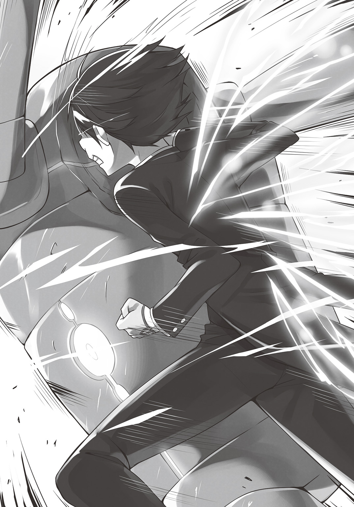
まさに、〝殴って〟、〝飛ばされ〟た。
「あ、あわわわわ.........」
呆然と、そして愕然とするセディア。
時間にすれば、それはあまりにも短い戦闘であった。
レイアが、ちょっとだけ本気を出し、巨人兵たちを倒すまで、三分もかからなかった。
その非現実的な戦いを見て、彼女は腰を抜かしてしまったのだ。
「お怪我はございませんか？ お客様」
「ひっ!?」
そして、そんな彼女に視線を向けると、レイアは近づき、手を差し伸べた。
「へっ......？ お客......？」
てっきり、自分もまた、鋼鉄巨人兵たちのように殴り飛ばされると思っていた彼女は、驚きのあまり、マヌケな声で反応する。
「ええ、お客様でしょう。あなたは」
「なに言って.........だって、私は......」
そもそも、巨人兵の集団を率いて現れたのはセディアである。
途中計算が狂い、彼らの暴走を許してしまったが、それもふくめて、そもそもの元凶でもあるのだ。
そんなセディアを、レイアは、「お客様」と呼んだ。
「まさかあなた......私のためにしたとでも、言うつもり！」
セディアは、皇女の立場が脅かされることを恐れて、巨人兵たちの脅迫に屈しそうになっていた。
もしあの時、レイアが動かなければ、彼女は救いようのない泥沼に落ちていただろう。
レイアは「お客を守る」と言った。
その客とは、ホテル内の他の宿泊者だけではない、セディア自身も含まれていたのだ。
「さて、なんの話でしょうか」
しかし、レイアは「知らぬ」という顔をする。
「私はただ、当ホテルをご利用いただいているお客様が、体調を崩されたのか、へたり込んでいらっしゃるので、お声がけさせていただいただけでございます」
腰を抜かした彼女に、手を伸ばしただけだと、言い放った。
「アンタは.........」
たとえ自分たちのホテルを潰そうとやってきた者でも、客であるのならば、野蛮な暴力にも耐えるし、マヌケな元凶にも慮る。
それが、レイア・トゥールマンのサービスなのだ。
「結構よ、ほっといて！」
そう言って不機嫌な顔で答えるのが、彼女のやせ我慢の限界だった。
「左様ですか。失礼いたしました」
客の求めていないことはしない。それもまた接客の基本。
レイアは丁寧に一礼すると、背中を向ける。
その時、思い出したように、セディアに告げた。
「セディア様、差し出がましいことを申し上げますが......あなたはもう少し、お義父様に心を開かれたほうがよろしいかと」
「なっ――!?」
宿帳に記した、偽名のクラウディアではなく、本名で告げられた。
「あの男は、あなたが思っているよりも、ずっと広い度量を持っています」
それ以上語らず、レイアは、未だ気絶しているコロナのもとに向かう。
駆け寄ったりはしない。
ホテル内でそんなことをすれば、慎みに欠ける。
ただし、少しだけ、早歩きで近づく。
「やれやれです。だから引っ込んでいなさいと言ったのに」
不死身の肉体を持つ自分ならばともかく、自ら大怪我を買って出た少女に、レイアは呆れ半分、もう半分はどこか微笑ましげにつぶやく。
「まったく、無茶をする」
そう言って抱き上げると、今だ展開していた十二枚の翼で、彼女を包み込んだ。
「ふあ......」
気を失いながらも、寝言のように言葉を漏らすコロナ。
翼を介し、レイアの生命力が注がれたことで、体中の傷が塞がっていく。
「体は大きくなっても、中身は子どものままですね、あなたは」
全ての傷が癒え、安らかな寝息を立てる少女の顔を見ながら、レイアはわずかに微笑みながら言葉を漏らした。
気を失っている間、コロナ・ローエンライズは、夢を見ていた。
それは夢なのか、もしくは古い記憶の再生なのか。
少なくとも、一つの事実を思い出す。
彼女が騎士になることを目指すきっかけとなった、十二年前の幼き日、自分を助けてくれた憧れの騎士サマ。
その話を誰にしても、信じてもらえず、いつの間にか、自分の記憶違いだったのではと思うようになったことがあった。
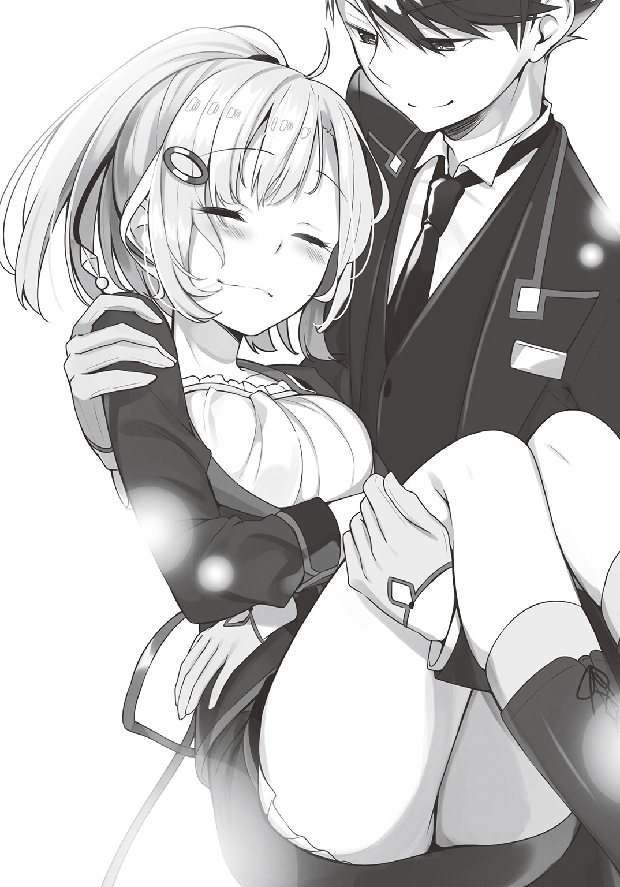
「きれいな十二枚の羽を持つ騎士サマが助けてくれたんだ」――
その言葉を、誰も本気にしなかった。
今思えば、そう言われてもしょうがなかったかもしれない。
なにせ、伝承伝説にしか存在しない聖騎士が通りすがるなんて、とんでもない偶然だ。
だけど、それでも確かに、覚えているのだ。
あの時見た、輝く翼を。
そして、暴君どもをなぎ払い、幼い自分に差し伸べてくれたあの温かな手を。
その人に、自分が言った言葉も――
終 章 Ten years after
数日後――帝都皇宮にて、セディアは今回の事件の事後処理を行っていた。
「鋼鉄巨人兵は、全機回収いたしました。あらためて、禁忌区域に封印......まぁ、仮に封印されていなかったとしても、もう暴れまわることはないと思われますが」
「あれだけ粉砕されたらね......自分の足で立てるヤツもいなかったんじゃないの？」
オーウェンからの報告を受け、少し、ひねた顔で答える。
「それもありますが、その......全員が、闘争本能とでも言うべきものを砕かれています。あれでは、金属の体を動かす意志力を生み出すことも不可能でしょう」
「あんな負け方をすれば、戦うことを欲するどころか、恐怖するようになるでしょうね」
擬似生命体であるゴーレムに、人間の魂を定着させて戦わせる兵器、鋼鉄巨人兵。
魂は、金属の体の制御と同時に、本来なら持っていない動物の本能......それこそ、破壊欲求や、戦闘欲求を供給するものでもあった。
「一体、なにがあったのですか......ギガントキャッスルで......？」
帝都より迎えに来たオーウェンに、セディアは事態の詳細を説明することはなかった。
話しても信じてもらえないだろうし、なにより自分自身でもまだ現実味がわかないからだ。
元聖騎士のホテルマンなど、下手くそなジョークである。
「聞かないほうがいいわ、オーウェン。下手すればあなたにも迷惑がかかるし」
「セディア様......？」
いつも激しい口調の皇女殿下が、今日は妙にしおらしかった。
「今まで、苦労をかけたわね。ありがとう」
「殿下!? 一体なにがあったんです？ どこに行かれるので？」
今まで一度も感謝の言葉を口にしなかったセディアの、まるで今生の別れとばかりの口ぶりに、オーウェンはうろたえる。
「今からお義父様のもとに......いえ、皇帝陛下のもとに向かい、今回の報告をするわ」
「陛下に!? ですが、それは......」
今回の一件は、レイアの機転によって、表沙汰になる前に鎮圧できた。
セディアへの最後の気遣いとして、ギガントキャッスル側は、あくまで「保安上のトラブル」としてのみで片付けてくれたのだ。
「ええ、黙っていれば、陛下の耳に入ることはない......でも、これはケジメよ」
セディアは、皇帝の養女となったことを、何よりも誇りとしている。
だが、それ故に、皇女の地位を守ろうとして、愚かな選択をしようとしてしまった。
「万が一、どこかからこのことが公になれば、陛下にご迷惑をおかけすることになる。その前に、わたくしが責任を取って、皇女の地位も、養女の立場も返上し、罪に服せばいい」
「そんな......いけません！」
オーウェンは叫んだ。
そんなことをすれば、最悪、セディアも禁忌区域に送られかねない。
「せめて、私もご一緒させてください。陛下より、殿下のお世話係を命じられた者として、同様に責任を取る義務があります」
「オーウェン......ちょっとくらい、わたくしにもカッコつけさせてよ。じゃないと......」
愚行を晒した上に、敵に情けをかけられた。
皇女としての誇りを守るには、皇女の座を返上するしかないのだ。
「あなたはここにいなさい。じゃ、行ってくるわ......」
「その必要はないな」
セディアが部屋を出ようとした寸前、扉の向こうで、話を聞いていたその男が、部屋に入ってきた。
「お義父様!?」
現れたのは、セディアの義父にして、大陸を統一せし、皇帝アンティルスであった。
「どうだ？ あの男は強かっただろう？」
「なぜ......ご存知なのですか......？」
すべて知っているかのような口ぶりの皇帝に、セディアは尋ねる。
「お前の父親をあまり舐めるな。俺の目と耳はいいんだ。帝都にいたままでも、大抵のことはわかるさ」
皇帝には、公式の機関の他に、直属の諜報を担う者たちが存在する。
彼らの力をもってすれば、たとえ大陸の端で起こった事件ですら、その日のうちに皇帝は知ることができるのだ。
「ま、それ以前からお前が何かしていたのは知ってたがな」
「それは、まさか......？」
自分は試されていた――そう思ったセディアの背中に寒気が走った。
アンティルスは、セディアの独断専行を、とっくの昔に気づいていた。
その上で、あえて放置していたのだ。
あんな詰めの甘い裏工作など、いずれはギガントキャッスルの者たちが――それこそレイアが気づく。わかった上で、なにもしないことで、警告としていたのだ。
「陛下......仔細はすでに存じ上げておられるのなら、もはや言い訳はいたしません。どうぞ、如何様にもご裁断ください。全て甘んじてお受けいたします」
膝をつき、今この場で首を斬ってくれてかまわないとばかりに、セディアは頭を垂れる。
「セディア......あまり、お前のとーちゃんを舐めるなよ？」
しかし返ってきた言葉は、どこか優しげな声音だった。
「俺はお前を娘にしたいから養女にしたんだ。血のつながりとかどうでもいい。お前は俺の娘だ。俺たちは、たった二人の家族なんだぜ？」
そう言って、皇帝は笑う。それこそ、やんちゃをして震える幼子に諭すように。
「たとえ悪事を犯したからといって、見捨てる家族がいるか？」
「お義父様.........」
「子供の不祥事は親の責任だ。俺も一緒になって頭下げるさ。気にするなとは言わんが、気に病むな」
皇帝はただ、優しく諭した。
「あの......お義父様と、あの男......トゥールマンは、一体どういうご関係なのですか!?」
二人に接点があるのは、皇帝がレイアに〝トゥールマン卿〟という爵位を与えたことからも確かだが、それ以上のものが二人にあることを、セディアは察した。
「ああ、アイツと俺は、元同門でな」
「え!?」
皇帝アンティルスは、一介の騎士から、帝国皇帝までのし上がった立志伝中の男。
「同じ師匠のもとで修行した仲だ。歳も同じだよ」
「いや、でも、しかし......？」
レイアの容姿は、どれだけ若作りしているとしても、二十代である。
対して、皇帝は四十半ば、そろそろ五十が見えてくる頃だ。
「あいつがどういう存在か、見ただろ？」
「は、はい」
聖騎士――常理を外れた生命力と再生能力を持ち、死を凌駕した者。
「あいつは、聖騎士として極めた歳で、老化が止まっちまったんだ。再生能力の凄さ故に、精神も肉体も、『経年劣化』というものすら受けつけなくなったんだよ」
「そんな......」
「とはいえ、それも昔の話だがな」
言いながら、皇帝は少し、遠い目をした。
「十年前、あいつは騎士の称号を捨てた。剣も捨てた。だから、それからゆっくりと老化が進行しているそうだ」
「十年前.........まさか、あの男は、〝巨人砦〟の......？」
「ああ、俺の七度の侵攻を退けたのは、アイツさ」
帝国軍による、七度の〝巨人砦〟攻略作戦。
最終的に五十万の軍勢が動員されるが、敗退。
結局、「大迂回戦略」をもって、「戦わないで勝つ」という方法で終わった。
「鋼鉄巨人兵百機か......足りないな。たぶん、全盛期のあいつならば、その百倍でも圧勝しただろう」
「うっ.........」
自分の浅はかさを指摘された気持ちになり、セディアは小さくうめいた。
五十万の帝国軍を退けたほどの男からすれば、あの程度の敵、それこそ敵ではなかっただろう。
「しかし、なぜ、それほどの男が、今はホテルマンなどやっているのです？ 他にも、生きる道はあったでしょうに」
それほどの英傑ならば、反帝国勢力の旗頭になることも可能であったろう。
もしくは、帝国に恭順を示したならば、子々孫々まで安泰なほどの厚遇をもって迎えられたはずだ。
「全てを捨ててでも、あの男は巨人砦を守りたかったんだ」
「でも、しかし......」
皇帝の返答に、セディアは腑に落ちなかった。
「今の巨人砦は、巨大ではありますが、ただのホテルではないですか？」
かつての軍事要塞の面影は、消え去ってしまっている。
「だからさ、それも捨てたんだよ。意味を失ってでも、あそこに、巨人砦であったものを、残したかったんだ」
「一体......それは......？」
理解できぬセディアに、皇帝は、「無理もない」という顔をした。
おそらく、その顚末を知った時、彼もまた同様の顔をしたのだろう。
「お前が引き連れた鋼鉄巨人兵な、あれ、どういうものか知っているよな？」
「ええ、人間の魂を、金属製のゴーレムに移植したものですよね」
「巨人砦も、同じようなものだったんだ」
魔硬石という特殊な金属がある。
魔力を伝導することにより、ミスリル鋼を超える強度から、ゴムのような柔らかさまで、硬軟を自在とする。
巨人砦は、それをもって作られた。
「用いられている技術のレベルは別次元だがな。なにせあの砦、現在では失われた技術の集大成だ。同じものをもう一度作ることもできない。とはいえコンセプトは近い」
むしろ、鋼鉄巨人兵は、巨人砦の、〝ある部分〟を模倣した、粗悪なレプリカとも言える。
その〝ある部分〟とは――
「巨人砦は、かつて動いていた。それこそ、古の伝説にある、神に逆らったという古代巨神族のようにな。そのために、あの砦に、一人の少女の命が捧げられた」
鋼鉄巨人兵たちのような、死刑囚の魂の「再利用」ではないが、それでも、戦うために、人の体を捨てさせられた者という点では、同じである。
「巫女と呼ばれていたがな、体のいい生贄だ。正直、今でも複雑な気持ちがある」
「お義父様......？」
その口ぶりに、わずかに憤りが感じられた。
ただ単に、「そういうことがあった」と知っているのではなく、もっと深く関わった者だけが見せる表情であった。
「その、知り合いだったのですか、その......巫女と？」
「ああ......俺と、レイアの幼馴染みだった。捧げられた時は、まだ十歳かそこらだったかな」
「それって......」
遠き日に、仲のいい三人の子どもたちがいた。
一人はその身を捧げられ、生ける砦となった。
一人はその砦を守る騎士となり、一人は皇帝となり大軍をもって攻め寄せ、七度の戦いを繰り広げた。
「お義父様は......その......あの......」
なんと言っていいか、セディアは言葉が見つからなかった。
戦友、仇敵、幼馴染み、親友――そのどれとも違い、どれよりも複雑な関係に二人があることだけはわかった。
「戦争が終わったあとな、本来なら、武装解除し、あの砦は破壊すべきだった。そうしたかった」
そんな養女の思いを察しつつも、皇帝は語り続ける。
「でもな、あの砦を、戦いが終わると同時に壊せば、あの地に捧げられた少女は、それこそ、戦いのためだけに生まれ、使い潰された者として終わってしまう」
レイアら、巨人砦の兵士たちは、それだけは看過できなかった。
せめて、平和な時代に、別の意味を与えることで、命を捧げた少女への報いにしたかった。
そのために、レイアは捨てたのだろう。
騎士の称号も、騎士の剣も。
あのロビーのモニュメント――巨岩に、剣を刺したあの日から。
「そこまでされたらな、俺としてももうなにも言えん。せめて、新たな時代を生きやすくするために、公式記録から連中の詳細を抹消しておくくらいだ」
「あれは......お義父様のご指示だったのですね......」
帝国のありとあらゆる記録から、レイアの情報は消されていた。
巨人砦そのものは、さすがに人々の記憶に残っているので消し去ることはできなかったが、中に在る者たちの経歴は白紙に戻された。
「元聖騎士がホテルマンになっているだなんて、思いもしないだろ？ 事実お前も驚いたみたいだしな」
「う.........」
「でも、行かせたかいがあった」
そこまで話し、皇帝は、楽しげに......というか、愉快そうに口元に手を当てる。
「ちゃんと学んできたみたいだしな。〝誇り〟ということの意味を」
セディアは、自らの愚行を省み、自分が最も誇りに思う、皇女の座を捨ててでも、皇女としてのケジメをつけようとした。
「本当のプライドとは、虚勢を張ることでも、固執することでも、ましてや弱者を踏みにじることでもない。真に守るべきもののために、自分の持つ全てをかなぐり捨てることができることだ。少なくとも、レイア・トゥールマンはそういう男だ」
巨人砦に命を捧げた少女の思いを守るため、騎士であることすら捨てた。
騎士であることを捨てることで、彼は真の意味で騎士道を完成させた。
それは、セディアが今さっき決断した選択と同じものである。
「安心しろ、お前は俺の自慢の娘だよ」
そう言うと、皇帝は、ポンとセディアの頭をなでた。
それこそ、どこにでもある光景。
父親が子供を褒めるときに行う、それであった。
「お義父、さま......」
いつの間にか、セディアは泣いていた。
皇女にふさわしくなければ、皇女の座を辱めれば――もっと言えば、「いい子にしていなかったら」、捨てられると思っていた。
レイアの最後の言葉を思い出した。
「あの男は、あなたが思っているよりもずっと広い度量を持っている」――
彼女が父として慕う皇帝は、彼女が思うよりもずっと、自分を愛してくれていることを、セディアは理解した。
「あの、お義父様......もう一つ、思ったことがあるのですが......？」
「ん、なんだ？」
あくまで、カンでしかないが、セディアは、一つ気づいたことを尋ねる。
「お義父様......その、幼馴染みの巫女のことを、慕ってらしたのではないですか？」
「ん―――」
その質問をした途端、大陸を手中にした天下人の顔が固まる。
「あ～......それは、あの、あんまり言わんでくれ」
「すいません......お亡くなりになった人のことですものね」
「いや、そーじゃねぇんだよ」
申し訳なさそうな娘に、父は、バツが悪そうに答える。
「知られたら、なに言われるかわかったもんじゃない。あの性悪女には」
「は？」
自分が死んだ後、あの世で再会した時に――というような、感傷的なものではない。
もっと、まるで、今も彼女がどこかで元気でやっていることを知っているような口ぶりだった。
そして、場所は変わって、グランクルスにあるギガントキャッスル――
「やは」
「リディアちゃん!?」
医務室で眠っていたコロナが目覚めた時、目の前にいたのは、巨人兵に殴り飛ばされ、重傷を負った......というか、死んだと思ったリディアだった。
「あれ......？ え......？ あれぇ!?」
さらに、自分の体を見回し、コロナは困惑する。
確かにあった自分の傷も、きれいサッパリ治っている。
レイアの、聖騎士の力が癒やした結果なのだが、そんな超常の道理を知らぬ彼女にとって、まるで夢を見ていたかのような話だった。
「三日も眠ってた後なのに、元気いっぱいだね」
「眠ってた......？ じゃ、やっぱりあれ、夢じゃなかったんだね......」
三日間眠り通しだったのに、疲労どころか、むしろ体力に満ちあふれていた。
これもまた、聖騎士の力が流れ込んだ影響なのだが、それを彼女が知るよしもない。
「心なしかおっぱいさらに膨らんでない？」
「ひゃあ～、揉まないでよお」
平均以上のサイズを誇るコロナの胸も、心なしかいつもより張りがあったのだが、それもまた聖騎士の力によるものなのかはわからない。
「そうじゃなくて、なんでリディア......あれ？ ケガは？」
「ちょっとしたコツがあるの」
「ここの人はみんな同じこと言うなぁ」
どうやれば殴り飛ばされ頭部を破壊されたのが無傷だったことになるのか、想像もつかない。
「ま、あのやっかいな巨人どもはレイアが穏便にお帰りいただいたから、コロナちゃんは心配することないよ。よくがんばったね。えらいね」
そう言うと、リディアは、まるで母親のように、コロナを抱きしめた。
「えっと......」
十歳ほどの少女のはずなのに、コロナは、そのぬくもりに心から癒やされる。
ずっと年上の、自分など想像もつかない人生を歩んできた大人の女性に褒められたような心持ちだった。
コロナは知らない。
自分を抱いてくれている少女が、少女ではないということを。
彼女は、その容姿であった頃に、この地に捧げられた巫女であることを。
そして、肉体を失ってなお巨人砦にあり続け、戦い続け、そして今は、平和となった時代に、ホテルへと姿を変えた自分の体に宿る人々を、心から慈しむことに、新たな意味を見出した者であることを。
そしてリディアこそが、このホテルのオーナーであることも。
「おや、目覚めましたか？」
小さくノックした後に、医務室にやってきたのは、レイアだった。
「レイアさん......あの、わたし......！」
「そのまま、横になっていてください。寝起きで喉が渇いているでしょう。紅茶でもいかがです？」
レイアの手には、シルバーのトレイ。
その上には、ティーセット。
漂う香りは、彼女が初めてこの地を訪れた時に、レイアが淹れてくれた、ブラッディ・ローズティーだった。
「調理場に言って、食事の用意をさせましょう。まだ胃が起きていないでしょうから、ミルク粥などでよろしいですか？」
「は、はい！」
たとえ身内相手でも、レイアの丁寧なサービスは変わらない。
テキパキと、立場上は部下となるコロナをもてなす。
「あの、レイアさん......」
いろいろと迷惑をかけてしまったことを一言詫びようと、シーツを握りしめながら、コロナは言葉をかけようとした。
「問題はありません。あなたはまだ見習いなのですから、失敗して当然であり、その対処も私の仕事です」
しかし、相手の心を読み、その先を行く敏腕ホテルマンは謝罪すらさせてくれない。
「気にしても構いませんが、気に病まないように。これを糧として、次に活かしてください」
ティーカップに茶葉の入ったストレーナーを置き、ポットから熱湯を注ぎながら、レイアは言う。
「はい.........」
隙がなく、付け入る間もない男を前に、コロナは少し、心を沈めた。
「.....................」
そして、そんな二人を、リディアは少しだけ苛立った顔で見ていた。
「あのさぁ、コロナちゃん。寝ている間になんか寝言いってたよね？」
「え......？ わたし、何か言ってた？」
寝ている間に言うから寝言である。
言った本人に、記憶はない。
「うん、言ってたよ？ 『騎士サマ～』って、あれ、誰のこと？」
ガシャンと、ティーカップが倒れる。
「どうしましたかレイアさん？」
「いえ、なんでもありません」
常に冷静沈着で、粗相などめったにしない彼にしては珍しく、手元を誤り、カップを倒してしまった。
「まーまー、いーじゃない、いーじゃない。んで、その騎士サマってどんな人？」
「えっとねぇ、すっごくかっこいい人なんです！」
「へぇ～、そんなにかっこいいの？」
照れながら話すコロナに、リディアはまるで、誰かを揶揄するようにわざとらしく驚いた声で応じる。
心なしか、レイアの動きがぎくしゃくとしているが、コロナは気づかない。
「なんていうか、恥ずかしいんだけど......その......初恋の人、的な......」
顔を赤くしながら、コロナはくすぐったそうに話す。
「っていうか......その......初めてあった時、思わず言っちゃって.........」
「え、なになに？ なに言ったの？」
これでもかと興味深そうに問いかけるリディア。
「うんと......『お嫁さんにしてください』って」
「えまだその時コロナちゃん五歳でしょ？ マセガキ～」
「もう、からかわないでよリディア～」
キャッキャと、まるで戯れるように話す二人。
ガッシャンと、再び音がする。
「レイアさん？」
「失礼」
またしても、レイアには珍しい粗相をする。
今度は、砂糖を入れるためのティースプーンを落としてしまった。
「替えがありますので、問題ありません」
心なしか、レイアの目が泳いでいるが、コロナは気づかない。
「んでんで、コロナちゃん......その時さ、その騎士サマ、なんて答えたの？」
僅かに、リディアの目が、これでもかと意地の悪そうにレイアの背中に向けられたが、コロナは気づかない。
「あはは......恥ずかしいんだけど......『お前がもう少し大きくなって、こことかこことか膨らんだらな』って」
そう言って、コロナは体を起こすと、自分の胸と腰......というよりもおしりを指差した。
コロナは同年代の少女よりもふくよかなバストだが、腰回りもなかなか良い形をしている。
「へ、へぇ～......そうなんだぁ」
恥ずかしそうに話すコロナに反して、リディアは口の端をひくつかせている。
「うん、うちの家って、お母さんもおばあちゃんも、けっこうおっきい人ばっかだったし、あの日からバストアップ体操は欠かさずやっているんだ」
生来、努力家のコロナは、『あこがれの騎士サマ』と出会った日から、いつか再び会える日のために、そっち方面の努力も欠かしていなかった。
「え～っと......ちょっとゴメンねコロナちゃん。いいって言うまで、ちょっと耳塞いで、目をつむっててね？」
「へ？」
奇妙なお願いをされ、不思議そうな顔をするも、コロナは言うとおりに耳を押さえ、目を閉じる。
「おいコラ騎士サマ」
そして、それと同時に、リディアはレイアの胸ぐらを摑むと、コロナに背を向け、医務室の端にまで引っ張る。
「アンタ......五歳のコになに言ってんの......マジで引くわ！」
「あの時は......私も若かったんです.........」
凄まじくバツの悪そうな顔で、目も合わせずに答えるレイア。
彼がこんな狼狽した姿を見せるなど、この十年、なかったことであった。
「若かったって......十二年前だからその頃にゃアンタ三十路過ぎてたでしょ！」
「聖騎士だから、老化が止まってたんです！ 肉体も、精神も！」
今でこそ冷静沈着懇切丁寧礼儀正しく折り目も正しい彼だが、生まれた時からこうだったわけではない。
むしろ、十代の頃は、やんちゃで鳴らした青年時代を過ごしていた。
しかも聖騎士で精神も加齢しなかったことにより、そのまま三十代半ばまで過ぎてしまったのだ。
「もしかして......アンタ、コロナちゃんに自分がその騎士サマだって言わないの、それが理由......？」
「それだけというわけでもないのですが......」
「微妙につっけんどんに振る舞うのもそれが理由？」
「というわけでもないのですが.........」
コロナが初めてギガントキャッスルを訪れた日、彼女が持ってきたある男からの紹介状には、彼女がどういう人間か、そして、誰に憧れて、誰の背中を追いかけて、十年を過ごしていたかが書かれていた。
そして最後に一文、こう締められていた。
「ちゃんと責任取って面倒見てやれ」と――
コロナは知らない。
その紹介状を書いたのは、レイアと同門の男。
リディアの幼馴染みであった男。
たまたま、お忍びで市井を見て回っていた、皇帝アンティルスだとは。
「打ち明けるきっかけ逃しちまって、どうしていいかわからねぇんだよ！」
焦るレイア、思わず、昔の口調に戻ってしまう。
「責任取って嫁にしてやんなさいよ！ 未だにコロナちゃんアンタに惚れたまんまなんだから！」
「いや、でもそれはあの......!?」
相手が神であろうが悪魔であろうがもてなす自信を持つ男も、自分自身のこととなると、途端に脆かった。
「リディア～......もういいかな？」
目と耳を塞いでいたコロナが、手を離した時、
「この唐変木が――」
「がはっ!?」
ちょうど、リディアに苛立ちのあまり蹴っ飛ばされたレイアの姿があった。
「何事!?」
一体何が起こったのか、コロナには皆目見当がつかなかった。
コロナ・ローエンライズは何も知らない。
巨人砦が、いかにしてホテルとなったのか。
その時、この地を守っていた千人の戦士が、なにを選択したのか。
この砦に宿っていた一人の少女が、なにを求めたのか。
この地を落とそうとした皇帝が、心中になにを思っていたのか。
そして、レイア・トゥールマンの正体も――
だが、一つだけ、確かなことはある。
たとえどんな事態となろうとも、ホテル・ギガントキャッスルは、その日も、ひと時の憩いを求める人々を、迎え入れるであろう。
あ と が き
初めての方ははじめまして。それ以外の方はお久しぶり、ＳＯＷでございます。
このたびは『ホテルギガントキャッスルへようこそ』をお読み頂き、ありがとうございました！
この作品は「ファンタジー世界のホテル」を舞台としたお話です。
なぜホテルのお話を書こうと思ったかといいますと......私、以前パン屋さんのお話を書いていたんですね。
で、その際にいろんな資料を見たり読んだりするわけですよ。
その中で、日本のパンの歴史を紐解くと、かなりの割合で「ホテル」の話が出てきたんです。
と、言いますのも、まだパン食が一般的でなかった明治初期、日本でもっともパンが消費された場所が、多くの外国人が宿泊する、ホテルだったからなんですね。
その当時は、外国人向けの宿泊施設は限られたもので、食べ慣れない日本食や公衆浴場、それどころか床に布団を敷いて寝る――ということすら慣れぬ異邦人たちは、心を休めることができず、日本にもいい感情を抱かなかったそうです。
なので、当時の日本人たちは、総力を上げて、外国から訪れた人たちに、母国と変わらぬ、家に帰ってきたようにくつろいでもらうための「ホテル」を作りました。
それが、百年以上の歴史を誇る、日本最初のホテル「帝国ホテル」だったそうです。
ただ荘厳な建物なだけでなく、最高の食事と、知性と教養をもって育成されたホテルマンたちのサービスは、日本の窓口となり、多くの国々に、日本への認識を改める一助になったといいます。
そんな話を読んだり見たりしているうちに、「これで一本作れないかな......」と考えて作ったのが、今作でございます。
それこそ明治初期、訪れる外国人たちは、今の我々からしたら、宇宙人みたいなもの――いえ、それこそ、ドラゴンやエルフみたいな異種族に見えたことでしょう。
そんな全く予想もつかない来訪者たちを、それでも笑顔にするために奮闘する、新しい時代を生きようとする者たちの姿を、楽しんでいただけたなら、幸いです。
今作刊行にあたり、手をつくしてくだすった皆様、そして、今この瞬間、本作を手に取ってくださっている全てのお客様に、最大限の感謝と、またお会いできる日が来ることを心より願っております。
それでは！
ＳＯＷ
著者紹介
ＳＯＷ そう
10月11日生まれ。著作に「よろず屋退魔士の返済計画」（ＯＶＬ文庫）「戦うパン屋と機械じかけの看板娘」（ＨＪ文庫）など。また「るろうに剣心」などのノベライズ、「グリムノーツ」（スクウェア・エニックス）などのシナリオも手がける。座右の銘は「人生万事塞翁が馬」。
illustration
桜木 蓮 さくらぎれん
千葉県在住のイラストレーターです。個人では看板娘たちを中心に絵を描いています。
愛猫のチロ姫に邪魔されながら毎日描いています。ピンク髪の女の子が大好きです。
ダッシュエックス文庫DIGITAL
ホテル ギガントキャッスルへようこそ
著者 ＳＯＷ
© SOW 2017
２０１７年４月30日発行
この電子書籍は、ダッシュエックス文庫「ホテル ギガントキャッスルへようこそ」
２０１７年３月29日発行の第１刷を底本としています。
発行者 鈴木晴彦
発行所 株式会社 集英社
〒１０１－８０５０
東京都千代田区一ツ橋２丁目５番10号
０３－３２３０－６０８０（読者係）
制作所 株式会社ＩＣＥ
本作品の全部または一部を無断で複製、転載、改竄、インターネット上に掲載すること、および有償無償に関わらず、本データを第三者に譲渡することを禁じます。なお個人利用の目的であっても、コピーガードを解除しての複製は、法律で禁じられています。